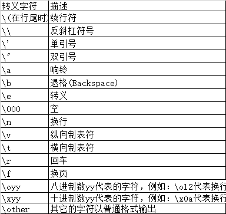

<!-- build time:Wed Mar 22 2023 00:57:33 GMT+0800 (中国标准时间) --><!DOCTYPE html><html lang="zh-CN"><head><meta charset="UTF-8"><meta name="viewport" content="width=device-width,initial-scale=1,maximum-scale=2"><meta name="theme-color" content="#FFF"><link rel="apple-touch-icon" sizes="180x180" href="/images/apple-touch-icon.png"><link rel="icon" type="image/ico" sizes="32x32" href="/images/favicon.ico"><meta http-equiv="Cache-Control" content="no-transform"><meta http-equiv="Cache-Control" content="no-siteapp"><link rel="alternate" type="application/rss+xml" title="Or0kit" href="https://or0kit.github.io/rss.xml"><link rel="alternate" type="application/atom+xml" title="Or0kit" href="https://or0kit.github.io/atom.xml"><link rel="alternate" type="application/json" title="Or0kit" href="https://or0kit.github.io/feed.json"><link rel="stylesheet" href="//fonts.googleapis.com/css?family=Mulish:300,300italic,400,400italic,700,700italic%7CFredericka%20the%20Great:300,300italic,400,400italic,700,700italic%7CNoto%20Serif%20JP:300,300italic,400,400italic,700,700italic%7CNoto%20Serif%20SC:300,300italic,400,400italic,700,700italic%7CInconsolata:300,300italic,400,400italic,700,700italic&display=swap&subset=latin,latin-ext"><link rel="stylesheet" href="/css/app.css?v=0.2.5"><meta name="keywords" content="python"><link rel="canonical" href="https://or0kit.github.io/Programming/Python/python-%E6%9C%9F%E6%9C%AB%E5%A4%8D%E4%B9%A0/"><title>python 期末复习 - Python - 编程 | Or0kit = Or0kit</title><meta name="generator" content="Hexo 5.3.0"></head><body itemscope itemtype="http://schema.org/WebPage"><div id="loading"><div class="cat"><div class="body"></div><div class="head"><div class="face"></div></div><div class="foot"><div class="tummy-end"></div><div class="bottom"></div><div class="legs left"></div><div class="legs right"></div></div><div class="paw"><div class="hands left"></div><div class="hands right"></div></div></div></div><div id="container"><header id="header" itemscope itemtype="http://schema.org/WPHeader"><div class="inner"><div id="brand"><div class="pjax"><h1 itemprop="name headline">python 期末复习</h1><div class="meta"><span class="item" title="创建时间：2020-12-18 16:53:24"><span class="icon"><i class="ic i-calendar"></i> </span><span class="text">发表于</span> <time itemprop="dateCreated datePublished" datetime="2020-12-18T16:53:24+08:00">2020-12-18</time> </span><span class="item" title="本文字数"><span class="icon"><i class="ic i-pen"></i> </span><span class="text">本文字数</span> <span>43k</span> <span class="text">字</span> </span><span class="item" title="阅读时长"><span class="icon"><i class="ic i-clock"></i> </span><span class="text">阅读时长</span> <span>39 分钟</span></span></div></div></div><nav id="nav"><div class="inner"><div class="toggle"><div class="lines" aria-label="切换导航栏"><span class="line"></span> <span class="line"></span> <span class="line"></span></div></div><ul class="menu"><li class="item title"><a href="/" rel="start">Or0kit</a></li></ul><ul class="right"><li class="item theme"><i class="ic i-sun"></i></li><li class="item search"><i class="ic i-search"></i></li></ul></div></nav></div><div id="imgs" class="pjax"><ul><li class="item" data-background-image="http://storage.live.com/items/70930153B02A575!365?authkey=AGDHHD5Qh4Y5OtQ"></li><li class="item" data-background-image="http://storage.live.com/items/70930153B02A575!383?authkey=AGDHHD5Qh4Y5OtQ"></li><li class="item" data-background-image="http://storage.live.com/items/70930153B02A575!293?authkey=AGDHHD5Qh4Y5OtQ"></li><li class="item" data-background-image="http://storage.live.com/items/70930153B02A575!296?authkey=AGDHHD5Qh4Y5OtQ"></li><li class="item" data-background-image="http://storage.live.com/items/70930153B02A575!291?authkey=AGDHHD5Qh4Y5OtQ"></li><li class="item" data-background-image="http://storage.live.com/items/70930153B02A575!388?authkey=AGDHHD5Qh4Y5OtQ"></li></ul></div></header><div id="waves"><svg class="waves" xmlns="http://www.w3.org/2000/svg" xmlns:xlink="http://www.w3.org/1999/xlink" viewBox="0 24 150 28" preserveAspectRatio="none" shape-rendering="auto"><defs><path id="gentle-wave" d="M-160 44c30 0 58-18 88-18s 58 18 88 18 58-18 88-18 58 18 88 18 v44h-352z"/></defs><g class="parallax"><use xlink:href="#gentle-wave" x="48" y="0"/><use xlink:href="#gentle-wave" x="48" y="3"/><use xlink:href="#gentle-wave" x="48" y="5"/><use xlink:href="#gentle-wave" x="48" y="7"/></g></svg></div><main><div class="inner"><div id="main" class="pjax"><div class="article wrap"><div class="breadcrumb" itemscope itemtype="https://schema.org/BreadcrumbList"><i class="ic i-home"></i> <span><a href="/">首页</a></span><i class="ic i-angle-right"></i> <span itemprop="itemListElement" itemscope itemtype="https://schema.org/ListItem"><a href="/categories/Programming/" itemprop="item" rel="index" title="分类于 编程"><span itemprop="name">编程</span></a><meta itemprop="position" content="1"></span><i class="ic i-angle-right"></i> <span class="current" itemprop="itemListElement" itemscope itemtype="https://schema.org/ListItem"><a href="/categories/Programming/Python/" itemprop="item" rel="index" title="分类于 Python"><span itemprop="name">Python</span></a><meta itemprop="position" content="2"></span></div><article itemscope itemtype="http://schema.org/Article" class="post block" lang="zh-CN"><link itemprop="mainEntityOfPage" href="https://or0kit.github.io/Programming/Python/python-%E6%9C%9F%E6%9C%AB%E5%A4%8D%E4%B9%A0/"><span hidden itemprop="author" itemscope itemtype="http://schema.org/Person"><meta itemprop="image" content="/images/avatar.jpg"><meta itemprop="name" content="Or0kit"><meta itemprop="description" content=", 临渊羡鱼，不如退而结网"></span><span hidden itemprop="publisher" itemscope itemtype="http://schema.org/Organization"><meta itemprop="name" content="Or0kit"></span><div class="body md" itemprop="articleBody"><h1 id="前言"><a class="anchor" href="#前言">#</a> 前言</h1><blockquote><p>老师怕学生考试挂科，额外安排了一节课讲考试范围和题型（泄题 (｀・ω・´)）。就喜欢这样的老师！<br>权当巩固一下咯，仅供自己复习用。<br>仅仅是一些考点。</p></blockquote><h1 id="python简介"><a class="anchor" href="#python简介">#</a> Python 简介</h1><p>Python，读作 ['paɪθɑn], 汉语是蟒蛇，Python 的 logo 是两条缠绕在一起的蟒蛇.</p><p>Python 语言是由荷兰程序员 Guido van Rossum，独立开发完成初版的。之所以选中 Python 作为该编程语言的名字，是因为他是一个叫 Monty Python 喜剧团体的爱好者，其本意并不是想选条蟒蛇。</p><h1 id="python语言的特点"><a class="anchor" href="#python语言的特点">#</a> Python 语言的特点</h1><blockquote><p>Emma 这些基础特点到是忘了不少。</p></blockquote><p><strong>简单易学、明确优雅、开发速度快 跨平台、可移植、可扩展、交互式、解释型、面向对象的动态语言，丰富的库，开源</strong></p><ul><li>跨平台：Python 支持 Windows、Linux 和 MAC os 等主流操作系统。</li><li>可移植：代码通常不需要多少改动就能移植到别的平台上使用。</li><li>可扩展：Python 语言本身由 C 语言编写而成的，你完全可以在 Python 中嵌入 C，从而提高代码的运行速度和效率。你也可以使用 C 语言重写 Python 的任何模块，从根本上改写 Python，PyPy 就是这么干的。</li><li>交互式：Python 提供很好的人机交互界面，比如 IDLE 和 IPython。可以从终端输入执行代码并获得结果，互动的测试和调试代码片断。</li><li>解释型：Python 语言在执行过程中由解释器逐行分析，逐行运行并输出结果。</li><li>面向对象：Python 语言具备所有的面向对象特性和功能，支持基于类的程序开发。</li><li>动态语言：在运行时可以改变其结构。例如新的函数、对象、甚至代码可以被引进，已有的函数可以被删除或是其他结构上的变化。动态语言非常具有活力。</li></ul><h2 id="内置电池大量的标准库和第三方库"><a class="anchor" href="#内置电池大量的标准库和第三方库">#</a> “内置电池”，大量的标准库和第三方库</h2><p>Python 为我们提供了非常完善的基础库，覆盖了系统、网络、文件、GUI、数据库、文本处理等方方面面，这些是随同解释器被默认安装的，各平台通用，你无需安装第三方支持就可以完成大多数工作，这一特点被形象地称作 “内置电池（batteries included）”。</p><p>有一句话叫做 “不要重复造轮子”。不要过分迷信自己的代码能力，要知道，能作为标准库被 Python 内置，必然在可靠性和算法效率上达到了目前最高水平，能被广泛使用的第三方库，必然也是经受了大量的应用考验。那些造轮子的事情，就交给世界最顶尖的那一波程序员去干吧，没有极致的思维和数学能力，想创造好用的轮子是很难的。</p><h2 id="社区活跃贡献者多互帮互助"><a class="anchor" href="#社区活跃贡献者多互帮互助">#</a> 社区活跃，贡献者多，互帮互助</h2><p>国外有好多，在国内，好像没有比较成熟，因此学好英语，去和世界范围的程序员交流吧！</p><h2 id="开源语言发展动力巨大"><a class="anchor" href="#开源语言发展动力巨大">#</a> 开源语言，发展动力巨大</h2><p>Python 是基于 C 语言编写的，并且使用 GPL 开源协议，你可以免费获取它的源代码，进行学习、研究甚至改进。众人拾柴火焰高，有更多的人参与 Python 的开发，促使它更好的发展，被更多的应用，形成良性循环。Python 为什么会越来越火就是因为它的开放性，自由性，聚起了人气，形成了社区，有很多人在其中做贡献，用的人越来越多，自然就提高了市场占有率，企业、公司、厂家就不得不使用 Python，提供的 Python 程序员岗位就越来越多，这就是开源的力量。</p><h1 id="python的应用方向"><a class="anchor" href="#python的应用方向">#</a> Python 的应用方向</h1><ol><li><p>常规软件开发<br>Python 支持函数式编程和 OOP 面向对象编程，能够承担任何种类软件的开发工作，因此常规的软件开发、脚本编写、网络编程等都属于标配能力。</p></li><li><p>科学计算<br>随着 NumPy, SciPy, Matplotlib, Enthought librarys 等众多程序库的开发，Python 越来越适合于做科学计算、绘制高质量的 2D 和 3D 图像。和科学计算领域最流行的商业软件 Matlab 相比，Python 是一门通用的程序设计语言，比 Matlab 所采用的脚本语言的应用范围更广泛，有更多的程序库的支持。虽然 Matlab 中的许多高级功能和 toolbox 目前还是无法替代的，不过在日常的科研开发之中仍然有很多的工作是可以用 Python 代劳的。</p></li><li><p>自动化运维<br>这几乎是 Python 应用的自留地，作为运维工程师首选的编程语言，Python 在自动化运维方面已经深入人心，比如 Saltstack 和 Ansible 都是大名鼎鼎的自动化平台。</p></li><li><p>云计算<br>开源云计算解决方案 OpenStack 就是基于 Python 开发的，搞云计算的同学都懂的。</p></li><li><p>WEB 开发<br>基于 Python 的 Web 开发框架不要太多，比如耳熟能详的 Django，还有 Tornado，Flask。其中的 Python+Django 架构，应用范围非常广，开发速度非常快，学习门槛也很低，能够帮助你快速的搭建起可用的 WEB 服务。</p></li><li><p>网络爬虫<br>也称网络蜘蛛，是大数据行业获取数据的核心工具。没有网络爬虫自动地、不分昼夜地、高智能地在互联网上爬取免费的数据，那些大数据相关的公司恐怕要少四分之三。能够编写网络爬虫的编程语言有不少，但 Python 绝对是其中的主流之一，其 Scripy 爬虫框架应用非常广泛。</p></li><li><p>数据分析<br>在大量数据的基础上，结合科学计算、机器学习等技术，对数据进行清洗、去重、规格化和针对性的分析是大数据行业的基石。Python 是数据分析的主流语言之一。</p></li><li><p>人工智能<br>Python 在人工智能大范畴领域内的机器学习、神经网络、深度学习等方面都是主流的编程语言，得到广泛的支持和应用。</p></li></ol><p>当然，除了以上的主流和前沿领域，Python 还在其他传统或特殊行业起着重要的作用。</p><h1 id="python包管理工具"><a class="anchor" href="#python包管理工具">#</a> Python 包管理工具</h1><p>Python 有两个著名的包管理工具 easy_install 和 pip。在 Python2.7 的安装包中，easy_install 是默认安装的，而 pip 需要我们手动安装。随着 Python 版本的提高，easy_install 已经逐渐被淘汰，但是一些比较老的第三方库，在现在仍然只能通过 easy_install 进行安装。目前，pip 已经成为主流的安装工具，自 Python2 &gt;=2.7.9 或者 Python3.4 以后默认都安装有 pip。</p><p>就如同 Python 有 2、2.7、3、3.6 一样，pip 也有 pip、pip2、pip3 之分。pip 是从属于 Python 的，对应的 pip 负责给对应的 Python 安装第三方模块。我们不要关心 pip 后面跟的数字，核心的问题是这个 pip 命令对应的是哪个 Python 解释器，想要为哪个 Python 解释器安装第三方库，就要调用它名下对应的 pip。</p><p>如何确定哪个 pip 是哪个 Python 的呢？</p><p>cmd 环境中，输入 pip -V (大写 V)：<br></p><h2 id="pip的使用"><a class="anchor" href="#pip的使用">#</a> pip 的使用</h2><ol><li>普通安装<br><em>再次强调，使用 pip 前请务必确认其所对应的 Python 解释器必须是你想要的那个！</em></li></ol><p>以安装 pillow 模块为例。输入 pip install pillow。</p><ol start="2"><li><p>指定版本安装<br>安装特定版本的 package，通过使用 ==, &gt;=, &lt;=,&gt;, &lt; 来指定一个版本号。<br>pip install 'Markdown&lt;2.0'<br>pip install 'Markdown&gt;2.0,&lt;2.0.3</p></li><li><p>卸载已安装的库<br>pip uninstall pillow</p></li><li><p>列出已经安装的库<br>pip list</p></li><li><p>将已经安装的库列表保存到文本文件中<br>pip freeze &gt; requirements.txt</p></li></ol><p>这个功能非常常用、好用！经常被用作项目环境依赖文件。</p><ol start="6"><li>根据依赖文件批量安装库<br>pip install -r requirements.txt</li></ol><p>使用上面的 txt 文件，批量安装第三方库。</p><h1 id="python的virtualenv-虚拟环境"><a class="anchor" href="#python的virtualenv-虚拟环境">#</a> Python 的 virtualenv 虚拟环境</h1><p>这部分不考，详细内容见<span class="exturl" data-url="aHR0cHM6Ly93d3cubGl1amlhbmdibG9nLmNvbS9jb3Vyc2UvcHl0aG9uLzY="> https://www.liujiangblog.com/course/python/6</span></p><h1 id="python基础"><a class="anchor" href="#python基础">#</a> Python 基础</h1><h2 id="缩进"><a class="anchor" href="#缩进">#</a> 缩进</h2><p>python 的灵魂就是使用缩进来表示代码块，不需要使用大括号 {} 。<br>缩进的空格数是可变的，但是同一个代码块的语句必须包含相同的缩进空格数。</p><h2 id="注释"><a class="anchor" href="#注释">#</a> 注释</h2><p>Python 中单行注释以 # 开头<br>多行注释可以用多个 # 号，还有 ''' 和 &quot;&quot;&quot;</p><h2 id="python自带的集成开发环境"><a class="anchor" href="#python自带的集成开发环境">#</a> Python 自带的集成开发环境</h2><p><strong>IDLE</strong></p><h2 id="python变量的命名规则"><a class="anchor" href="#python变量的命名规则">#</a> Python 变量的命名规则</h2><p>变量名可以包括字母、数字、下划线，但不能以数字开头。区分大小写。</p><h2 id="python-pass-语句"><a class="anchor" href="#python-pass-语句">#</a> Python pass 语句</h2><p>Python pass 是空语句，是为了保持程序结构的完整性。</p><p>pass 不做任何事情，一般用做占位语句。</p><h2 id="为什么说python采用的是基于值的内存管理模式"><a class="anchor" href="#为什么说python采用的是基于值的内存管理模式">#</a> 为什么说 Python 采用的是基于值的内存管理模式？</h2><p>Python 中的变量并不直接存储值，而是存储了值的内存地址或者引用，假如为不同变量赋值为相同值，这个值在内存中只有一份，多个变量指向同一块内存地址。</p><h3 id="gossip闲聊脚本语言与编程语言的区别"><a class="anchor" href="#gossip闲聊脚本语言与编程语言的区别">#</a> Gossip (闲聊) 脚本语言与编程语言的区别</h3><p>脚本语言与编程语言的区别有：<br>1、脚本语言不需要编译器，省去编译过程；而编程语言需要编译器。<br>2、脚本语言是动态的，可以实时更改代码；而编程语言不可以实时更改代码。<br>3、脚本语言易学，但缺乏系统性；编程语言较为成熟。</p><p>脚本语言和编程语言比较</p><p>（1）脚本语言不需要编译器因而省去了编译的过程减少了开发的时间，而编程语言需要编译所以时间更长点</p><p>（2）脚本语言是一种动态语言，也就是说可以实时的更改代码，而不需要将程序停止下来，这是一种高级特性。而 Java 等编程语言是静态的语言，一旦编译完成并且运行就不能更改代码，除非将程序停止下来</p><p>（3）脚本语言非常容易学习，但是不够全面缺乏系统性而且语法较为散漫。而高级编程语言虽然相对难学，但是规则强可以编程出简洁美观的代码，并且可读性也相对较强。</p><p>（4）一般来说脚本语言通用性较差，但是可以通过专门的应用来调整。</p><p>（5）随着技术的发展，其实脚本语言变得越来越强，和编程语言的界限也比较模糊，比如 Python，可以将它视为编程语言了，因为它很强大。</p><p>转载自<span class="exturl" data-url="aHR0cHM6Ly93d3cucGhwLmNuL2ZhcS80MTY3MTIuaHRtbA=="> https://www.php.cn/faq/416712.html</span></p><h2 id="is-与-的区别"><a class="anchor" href="#is-与-的区别">#</a> is 与 == 的区别</h2><p>&quot;is&quot; 作为判断地址是否相等，即判断两个变量是否指向同一内存地址<br>&quot;==&quot; 判断两个变量的值是否相等<br>同样的，&quot;is not&quot; 和 &quot;!=&quot; 遵循同样的逻辑</p><h2 id="数据类型"><a class="anchor" href="#数据类型">#</a> 数据类型</h2><h3 id="可变数据类型"><a class="anchor" href="#可变数据类型">#</a> 可变数据类型</h3><h4 id="列表list"><a class="anchor" href="#列表list">#</a> 列表 (list)</h4><p>列表的系列函数：</p><p>①append (): 元素的追加，在列表的末尾添加新的值 列表名.append (新增的值)</p><p>②insert (下标，值)：在指定下标插入指定的值 列表名.insert (下标，值)</p><p>③count (值)：求指定元素在列表中出现的次数 列表名.count (值)</p><p>④pop (下标)：从列表中根据下标移除指定位置的值 列表名.pop (下标)<br>（pop 删除元素，是将元素从列表移除，但依然存在于内存，如需使用，使用变量接收）</p><p>⑤remove (值)：从列表中根据值来删除掉指定的元素<br>（如果列表中存在重复的元素，删除的时候，仅仅删除第一个）<br>⑥sort ()：排序，从小到大 .<br>若需要实现从大到小，需要添加关键字参数 reverse=True 列表名.sort (reverse=True)<br>⑦sorted ()：临时排序 sorted (列表名)</p><p>⑧reverse ()：翻转 列表名.reverse ()</p><p>⑨extend ()：列表的扩展 / 列表的拼接 列表名.extend (列表)</p><p>⑩index (值)：获取列表中指定元素的下标 列表名.index (值)</p><h4 id="字典dict"><a class="anchor" href="#字典dict">#</a> 字典 (dict)</h4><p>字典的系列函数：</p><p>①dict (): 映射到另一个字典：字典名 = dict (字典名)<br>通过序列创建字典：字典名 = dict (序列) #序列位置只能传入序列，因字典数据格式是键值对 ，所以序列中的每一个元素中应该包含两个值 eg. [(1,2),3,4]</p><p>②fromkeys (): 多个 key 共用一个值 dict.fromkeys (key 的序列，值)</p><p>③keys ()：获取字典中所有的 key，以形式列表返回 字典名.keys ()</p><p>④values ()：获取字典中所有的 value，以实行列表返回 字典名.values ()</p><p>⑤get (key, default)：根据 key，获取指定的 value 字典名.get (key, 提示信息)</p><p>⑥pop (key，default)：根据 key，删除这个 key 的键值对 字典名.pop (key, 提示信息)</p><p>⑦clear ()：清空字典中所有的键值对，只保留空字典 字典名.clear ()</p><p>⑧del：删除字典 del 字典名</p><p>⑨update ()：字典的更新 / 字典的拼接 字典名.update (字典名)</p><p>字典新增数据：字典名 [key] = value<br>（key 存在，修改字典中 key 原有的 value key 不存在，在字典中新增一个键值对）</p><h3 id="不可变数据类型"><a class="anchor" href="#不可变数据类型">#</a> 不可变数据类型</h3><p>不可变数据类型的函数都不会改变数据的值，所以需要添加一个值来接受</p><h4 id="数字"><a class="anchor" href="#数字">#</a> 数字</h4><pre><code>整型：int
浮点型：float
bool:True、False
复数：complex
</code></pre><h4 id="字符串"><a class="anchor" href="#字符串">#</a> 字符串</h4><p>字符串系列函数：</p><p>①replace ()：替换字符串中的内容为新的字符串内容 字符串.replace (旧字符，新字符，替换次数) #替换次数默认为全部替换<br>②upper ()：字符串中所有的字符全部转换为大写<br>③lower (): 字符串中所有的字符串全部转换为小写<br>④len ()：求字符串的长度 len (字符串)<br>⑤split (切割字符)：将字符串按照自定的字符进行切割，返回一个列表<br>eg. a = ‘abcde’ b = a.split (‘c’) (结果) b=[‘ab’,’def’]<br>⑥capitalize ()：大写字符串的第一个字符<br>⑦title ()：大写字符串中每一个单词的首字母<br>⑧index ()：返回字符串中指定元素的下标，如果有重复的元素，返回第一个元素的下标</p><h4 id="元组"><a class="anchor" href="#元组">#</a> 元组</h4><p>符号：()<br>关键字：tuple<br>创建 只有一个值的元组的时候，要在元素后面加一个逗号：元组名 = （1，）<br>元组函数：<br>①tuple ()：创建元素，实现其他数据类型转换为元组<br>②count ()：统计元组中指定元素出现的次数<br>③index ()：求出元组内指定元素的下标</p><h4 id="集合"><a class="anchor" href="#集合">#</a> 集合</h4><p>符号：{}<br>关键字：set<br>创建空集合时用小括号：set ()<br>特点：无需不重复<br>举例：<br>set1 = {1,2,3}<br>或 set2 = set (‘hello’)<br>set2 的输出结果：{‘o’,‘e’，‘h’，‘l} #此结果不唯一，满足无需不重复特点即可</p><h3 id="元组与列表的区别"><a class="anchor" href="#元组与列表的区别">#</a> 元组与列表的区别</h3><p>转载自<span class="exturl" data-url="aHR0cDovL2MuYmlhbmNoZW5nLm5ldC92aWV3LzQzNjMuaHRtbA=="> http://c.biancheng.net/view/4363.html</span></p><p>考试只要知道列表中的元素可以修改，元组中的元素不可以修改就行了</p><p>元组和列表同属序列类型，且都可以按照特定顺序存放一组数据，数据类型不受限制，只要是 Python 支持的数据类型就可以。那么，元组和列表有哪些区别呢？</p><p>元组和列表最大的区别就是，列表中的元素可以进行任意修改，就好比是用铅笔在纸上写的字，写错了还可以擦除重写；而元组中的元素无法修改，除非将元组整体替换掉，就好比是用圆珠笔写的字，写了就擦不掉了，除非换一张纸。<br>可以理解为，tuple 元组是一个只读版本的 list 列表。</p><p>需要注意的是，这样的差异势必会影响两者的存储方式，我们来直接看下面的例子：</p><figure class="highlight python"><figcaption data-lang="python"></figcaption><table><tr><td data-num="1"></td><td><pre><span class="token operator">>></span><span class="token operator">></span> listdemo <span class="token operator">=</span> <span class="token punctuation">[</span><span class="token punctuation">]</span></pre></td></tr><tr><td data-num="2"></td><td><pre><span class="token operator">>></span><span class="token operator">></span> listdemo<span class="token punctuation">.</span>__sizeof__<span class="token punctuation">(</span><span class="token punctuation">)</span></pre></td></tr><tr><td data-num="3"></td><td><pre><span class="token number">40</span></pre></td></tr><tr><td data-num="4"></td><td><pre><span class="token operator">>></span><span class="token operator">></span> tupleDemo <span class="token operator">=</span> <span class="token punctuation">(</span><span class="token punctuation">)</span></pre></td></tr><tr><td data-num="5"></td><td><pre><span class="token operator">>></span><span class="token operator">></span> tupleDemo<span class="token punctuation">.</span>__sizeof__<span class="token punctuation">(</span><span class="token punctuation">)</span></pre></td></tr><tr><td data-num="6"></td><td><pre><span class="token number">24</span></pre></td></tr></table></figure><p>可以看到，对于列表和元组来说，虽然它们都是空的，但元组却比列表少占用 16 个字节，这是为什么呢？</p><p>事实上，就是由于列表是动态的，它需要存储指针来指向对应的元素（占用 8 个字节）。另外，由于列表中元素可变，所以需要额外存储已经分配的长度大小（占用 8 个字节）。但是对于元组，情况就不同了，元组长度大小固定，且存储元素不可变，所以存储空间也是固定的。</p><p>读者可能会问题，既然列表这么强大，还要元组这种序列类型干什么？</p><p>通过对比列表和元组存储方式的差异，我们可以引申出这样的结论，即元组要比列表更加轻量级，所以从总体上来说，元组的性能速度要由于列表。</p><p>另外，Python 会在后台，对静态数据做一些资源缓存。通常来说，因为垃圾回收机制的存在，如果一些变量不被使用了，Python 就会回收它们所占用的内存，返还给操作系统，以便其他变量或其他应用使用。</p><p>但是对于一些静态变量（比如元组），如果它不被使用并且占用空间不大时，Python 会暂时缓存这部分内存。这样的话，当下次再创建同样大小的元组时，Python 就可以不用再向操作系统发出请求去寻找内存，而是可以直接分配之前缓存的内存空间，这样就能大大加快程序的运行速度。</p><p>下面的例子，是计算初始化一个相同元素的列表和元组分别所需的时间。我们可以看到，元组的初始化速度要比列表快 5 倍。</p><figure class="highlight python"><figcaption data-lang="python"></figcaption><table><tr><td data-num="1"></td><td><pre>C<span class="token punctuation">:</span>\Users\mengma<span class="token operator">></span>python <span class="token operator">-</span>m timeit <span class="token string">'x=(1,2,3,4,5,6)'</span></pre></td></tr><tr><td data-num="2"></td><td><pre><span class="token number">20000000</span> loops<span class="token punctuation">,</span> best of <span class="token number">5</span><span class="token punctuation">:</span> <span class="token number">9.97</span> nsec per loop</pre></td></tr><tr><td data-num="3"></td><td><pre>C<span class="token punctuation">:</span>\Users\mengma<span class="token operator">></span>python <span class="token operator">-</span>m timeit <span class="token string">'x=[1,2,3,4,5,6]'</span></pre></td></tr><tr><td data-num="4"></td><td><pre><span class="token number">5000000</span> loops<span class="token punctuation">,</span> best of <span class="token number">5</span><span class="token punctuation">:</span> <span class="token number">50.1</span> nsec per loop</pre></td></tr></table></figure><p>当然，如果你想要增加、删减或者改变元素，那么列表显然更优。因为对于元组来说，必须得通过新建一个元组来完成。</p><p>总的来说，元组确实没有列表那么多功能，但是元组依旧是很重要的序列类型之一，元组的不可替代性体现在以下这些场景中：</p><p>元组作为很多内置函数和序列类型方法的返回值存在，也就是说，在使用某些函数或者方法时，它的返回值会元组类型，因此你必须对元组进行处理。<br>元组比列表的访问和处理速度更快，因此，当需要对指定元素进行访问，且不涉及修改元素的操作时，建议使用元组。<br>元组可以在映射（和集合的成员）中当做 “键” 使用，而列表不行。这会在后续章节中作详解介绍。</p><h3 id="列表用和append区别"><a class="anchor" href="#列表用和append区别">#</a> 列表用‘+’和‘append’区别</h3><p>转载自<span class="exturl" data-url="aHR0cHM6Ly9ibG9nLmNzZG4ubmV0L3FxXzQ0NzI5NTc4L2FydGljbGUvZGV0YWlscy8xMDQ5Njg5MjI="> https://blog.csdn.net/qq_44729578/article/details/104968922</span></p><p>本质分析<br>本质是否相同<br>代码分析：</p><figure class="highlight python"><figcaption data-lang="python"></figcaption><table><tr><td data-num="1"></td><td><pre>t<span class="token operator">=</span><span class="token punctuation">[</span><span class="token number">1</span><span class="token punctuation">,</span><span class="token number">2</span><span class="token punctuation">,</span><span class="token number">3</span><span class="token punctuation">]</span></pre></td></tr><tr><td data-num="2"></td><td><pre>t1<span class="token operator">=</span>t<span class="token punctuation">.</span>append<span class="token punctuation">(</span><span class="token number">4</span><span class="token punctuation">)</span></pre></td></tr><tr><td data-num="3"></td><td><pre>t2<span class="token operator">=</span>t<span class="token operator">+</span><span class="token punctuation">[</span><span class="token number">4</span><span class="token punctuation">]</span></pre></td></tr><tr><td data-num="4"></td><td><pre><span class="token keyword">print</span><span class="token punctuation">(</span>t<span class="token punctuation">)</span></pre></td></tr><tr><td data-num="5"></td><td><pre><span class="token keyword">print</span><span class="token punctuation">(</span>t1<span class="token punctuation">)</span></pre></td></tr><tr><td data-num="6"></td><td><pre><span class="token keyword">print</span><span class="token punctuation">(</span>t2<span class="token punctuation">)</span></pre></td></tr><tr><td data-num="7"></td><td><pre><span class="token keyword">print</span><span class="token punctuation">(</span>t<span class="token punctuation">)</span></pre></td></tr><tr><td data-num="8"></td><td><pre><span class="token comment">##### 输出结果</span></pre></td></tr><tr><td data-num="9"></td><td><pre><span class="token punctuation">[</span><span class="token number">1</span><span class="token punctuation">,</span><span class="token number">2</span><span class="token punctuation">,</span><span class="token number">3</span><span class="token punctuation">,</span><span class="token number">4</span><span class="token punctuation">]</span></pre></td></tr><tr><td data-num="10"></td><td><pre><span class="token boolean">None</span></pre></td></tr><tr><td data-num="11"></td><td><pre><span class="token punctuation">[</span><span class="token number">1</span><span class="token punctuation">,</span><span class="token number">2</span><span class="token punctuation">,</span><span class="token number">3</span><span class="token punctuation">,</span><span class="token number">4</span><span class="token punctuation">,</span><span class="token number">4</span><span class="token punctuation">]</span></pre></td></tr><tr><td data-num="12"></td><td><pre><span class="token punctuation">[</span><span class="token number">1</span><span class="token punctuation">,</span><span class="token number">2</span><span class="token punctuation">,</span><span class="token number">3</span><span class="token punctuation">,</span><span class="token number">4</span><span class="token punctuation">]</span></pre></td></tr></table></figure><p>结论：使用 append () 添加后，是在列表原列表 t 中添加，而不是 t1<br>而使用 + 添加后，是在列表 t2 中添加，相当于在 t 中添加的结果重新放到了一个新的列表中，而原列表不变</p><p>速度是否相同<br>代码分析：</p><figure class="highlight python"><figcaption data-lang="python"></figcaption><table><tr><td data-num="1"></td><td><pre><span class="token keyword">import</span> time</pre></td></tr><tr><td data-num="2"></td><td><pre>start1<span class="token operator">=</span>time<span class="token punctuation">.</span>time<span class="token punctuation">(</span><span class="token punctuation">)</span></pre></td></tr><tr><td data-num="3"></td><td><pre>t1<span class="token operator">=</span><span class="token punctuation">[</span><span class="token punctuation">]</span></pre></td></tr><tr><td data-num="4"></td><td><pre><span class="token keyword">for</span> i <span class="token keyword">in</span> <span class="token builtin">range</span><span class="token punctuation">(</span><span class="token number">1</span><span class="token punctuation">,</span><span class="token number">10000</span><span class="token punctuation">)</span><span class="token punctuation">:</span></pre></td></tr><tr><td data-num="5"></td><td><pre>    t1<span class="token operator">=</span>t1<span class="token operator">+</span><span class="token punctuation">[</span><span class="token builtin">range</span><span class="token punctuation">(</span>i<span class="token punctuation">)</span><span class="token punctuation">]</span></pre></td></tr><tr><td data-num="6"></td><td><pre>end1<span class="token operator">=</span>time<span class="token punctuation">.</span>time<span class="token punctuation">(</span><span class="token punctuation">)</span></pre></td></tr><tr><td data-num="7"></td><td><pre><span class="token keyword">print</span><span class="token punctuation">(</span><span class="token string">"运行了%s秒"</span><span class="token operator">%</span><span class="token punctuation">(</span>end1<span class="token operator">-</span>start1<span class="token punctuation">)</span><span class="token punctuation">)</span></pre></td></tr><tr><td data-num="8"></td><td><pre>start2<span class="token operator">=</span>time<span class="token punctuation">.</span>time<span class="token punctuation">(</span><span class="token punctuation">)</span></pre></td></tr><tr><td data-num="9"></td><td><pre>t2<span class="token operator">=</span><span class="token punctuation">[</span><span class="token punctuation">]</span></pre></td></tr><tr><td data-num="10"></td><td><pre><span class="token keyword">for</span> i <span class="token keyword">in</span> <span class="token builtin">range</span><span class="token punctuation">(</span><span class="token number">1</span><span class="token punctuation">,</span><span class="token number">10000</span><span class="token punctuation">)</span><span class="token punctuation">:</span></pre></td></tr><tr><td data-num="11"></td><td><pre>    t2<span class="token punctuation">.</span>append<span class="token punctuation">(</span><span class="token punctuation">[</span>i<span class="token punctuation">]</span><span class="token punctuation">)</span></pre></td></tr><tr><td data-num="12"></td><td><pre>end2<span class="token operator">=</span>time<span class="token punctuation">.</span>time<span class="token punctuation">(</span><span class="token punctuation">)</span></pre></td></tr><tr><td data-num="13"></td><td><pre><span class="token keyword">print</span><span class="token punctuation">(</span><span class="token string">"运行了%s秒"</span><span class="token operator">%</span><span class="token punctuation">(</span>end2<span class="token operator">-</span>start2<span class="token punctuation">)</span><span class="token punctuation">)</span></pre></td></tr><tr><td data-num="14"></td><td><pre></pre></td></tr><tr><td data-num="15"></td><td><pre><span class="token comment">##### 输出结果</span></pre></td></tr><tr><td data-num="16"></td><td><pre>运行了<span class="token number">0.15612554550170898</span>秒</pre></td></tr><tr><td data-num="17"></td><td><pre>运行了<span class="token number">0.0029811859130859375</span>秒</pre></td></tr></table></figure><p>结论：append（）的添加速度比 + 快</p><h2 id="切片"><a class="anchor" href="#切片">#</a> 切片</h2><ol><li><p>特点<br>只能用于序列 (可以用下标获取元素的)：字符串，列表，元组<br>特点：起始下标不能比截止下标大</p></li><li><p>用法<br>序列名 [起始下标：截止下标]<br>特例：<br>①序列名 [:]: 截取序列中全部内容<br>②序列名 [起始下标：]：截取从起始下标开始的全部内容<br>③序列名 [: 截止下标]：截取从 0 开始到截止下标前一位的所有内容<br>④序列名 [: 负数]：截取倒数除了负数个数的全部内容<br>eg.list [:-3]: 截取 0 到倒数第四个的全部内容 (倒数第三个不用)</p></li><li><p>列表的复制<br>①列表 1 = 列表 2：<br>列表 1 和列表 2 共用同一块内存地址，修改其中任意一个列表的值，另一个列表也会更改内容<br>②列表 1 = 列表 2 [:]</p></li></ol><h2 id="运算符和表达式"><a class="anchor" href="#运算符和表达式">#</a> 运算符和表达式</h2><ol><li>算数运算符</li></ol><p>‘+’‘-’‘*’‘/’‘%’‘//’(整除，求商)‘<strong>’(求幂，2 的三次方：2</strong>3)</p><ol start="2"><li>赋值运算符</li></ol><p>‘=’‘+=’‘-=’‘*=’‘/=’</p><ol start="3"><li>关系运算符 (返回一个 bool 值)</li></ol><p>‘&gt;’‘&lt;’‘==’‘&gt;=’‘&lt;=’‘!=’</p><ol start="4"><li>逻辑运算符</li></ol><p>‘and’‘or’‘not’<br>详解</p><p>转载自<span class="exturl" data-url="aHR0cHM6Ly9ibG9nLmNzZG4ubmV0L21hb3h1ZXh1ZS9hcnRpY2xlL2RldGFpbHMvMTA1ODk5NTEy"> https://blog.csdn.net/maoxuexue/article/details/105899512</span></p><p>and<br>格式：操作数 1 and 操作数 2<br>如果操作数 1 的值为 True (无论是什么类型 True、1、-1、’ '), 那么运算结果就等于操作数 2。</p><figure class="highlight python"><figcaption data-lang="python"></figcaption><table><tr><td data-num="1"></td><td><pre>In <span class="token punctuation">[</span><span class="token number">8</span><span class="token punctuation">]</span><span class="token punctuation">:</span> <span class="token number">3</span> <span class="token keyword">and</span> <span class="token number">2</span></pre></td></tr><tr><td data-num="2"></td><td><pre>Out<span class="token punctuation">[</span><span class="token number">8</span><span class="token punctuation">]</span><span class="token punctuation">:</span> <span class="token number">2</span></pre></td></tr><tr><td data-num="3"></td><td><pre></pre></td></tr><tr><td data-num="4"></td><td><pre>In <span class="token punctuation">[</span><span class="token number">9</span><span class="token punctuation">]</span><span class="token punctuation">:</span> <span class="token number">3</span> <span class="token keyword">and</span> <span class="token number">0</span></pre></td></tr><tr><td data-num="5"></td><td><pre>Out<span class="token punctuation">[</span><span class="token number">9</span><span class="token punctuation">]</span><span class="token punctuation">:</span> <span class="token number">0</span></pre></td></tr><tr><td data-num="6"></td><td><pre></pre></td></tr><tr><td data-num="7"></td><td><pre>In <span class="token punctuation">[</span><span class="token number">10</span><span class="token punctuation">]</span><span class="token punctuation">:</span> <span class="token number">3</span> <span class="token keyword">and</span> <span class="token boolean">False</span></pre></td></tr><tr><td data-num="8"></td><td><pre>Out<span class="token punctuation">[</span><span class="token number">10</span><span class="token punctuation">]</span><span class="token punctuation">:</span> <span class="token boolean">False</span></pre></td></tr><tr><td data-num="9"></td><td><pre></pre></td></tr><tr><td data-num="10"></td><td><pre>In <span class="token punctuation">[</span><span class="token number">11</span><span class="token punctuation">]</span><span class="token punctuation">:</span> <span class="token number">3</span> <span class="token keyword">and</span> <span class="token string">'hello'</span></pre></td></tr><tr><td data-num="11"></td><td><pre>Out<span class="token punctuation">[</span><span class="token number">11</span><span class="token punctuation">]</span><span class="token punctuation">:</span> <span class="token string">'hello'</span></pre></td></tr></table></figure><p>如果操作数 1 的值为 False (无论是什么类型 False、0、[]、’’), 那么运算结果就等于操作数 1。</p><figure class="highlight python"><figcaption data-lang="python"></figcaption><table><tr><td data-num="1"></td><td><pre>In <span class="token punctuation">[</span><span class="token number">12</span><span class="token punctuation">]</span><span class="token punctuation">:</span> <span class="token number">0</span> <span class="token keyword">and</span> <span class="token number">3</span></pre></td></tr><tr><td data-num="2"></td><td><pre>Out<span class="token punctuation">[</span><span class="token number">12</span><span class="token punctuation">]</span><span class="token punctuation">:</span> <span class="token number">0</span></pre></td></tr><tr><td data-num="3"></td><td><pre></pre></td></tr><tr><td data-num="4"></td><td><pre>In <span class="token punctuation">[</span><span class="token number">13</span><span class="token punctuation">]</span><span class="token punctuation">:</span> <span class="token string">''</span> <span class="token keyword">and</span> <span class="token number">3</span></pre></td></tr><tr><td data-num="5"></td><td><pre>Out<span class="token punctuation">[</span><span class="token number">13</span><span class="token punctuation">]</span><span class="token punctuation">:</span> <span class="token string">''</span></pre></td></tr><tr><td data-num="6"></td><td><pre></pre></td></tr><tr><td data-num="7"></td><td><pre>In <span class="token punctuation">[</span><span class="token number">14</span><span class="token punctuation">]</span><span class="token punctuation">:</span> <span class="token boolean">False</span> <span class="token keyword">and</span> <span class="token number">3</span></pre></td></tr><tr><td data-num="8"></td><td><pre>Out<span class="token punctuation">[</span><span class="token number">14</span><span class="token punctuation">]</span><span class="token punctuation">:</span> <span class="token boolean">False</span></pre></td></tr><tr><td data-num="9"></td><td><pre></pre></td></tr><tr><td data-num="10"></td><td><pre>In <span class="token punctuation">[</span><span class="token number">15</span><span class="token punctuation">]</span><span class="token punctuation">:</span> <span class="token punctuation">[</span><span class="token punctuation">]</span> <span class="token keyword">and</span> <span class="token number">3</span></pre></td></tr><tr><td data-num="11"></td><td><pre>Out<span class="token punctuation">[</span><span class="token number">15</span><span class="token punctuation">]</span><span class="token punctuation">:</span> <span class="token punctuation">[</span><span class="token punctuation">]</span></pre></td></tr></table></figure><p>or（跟 and 相反）<br>格式：操作数 1 or 操作数 2<br>如果操作数 1 的值为 True (无论是什么类型 True 1 -1 ‘hello’)，那么运算结果就等于操作数 1。<br>如果操作数 1 的值为 False (无论是什么类型 False 0 [] ‘’)，那么运算结果就等于操作数 2。</p><p>逻辑 and/or 的短路原则<br>举例的话，就是 “表达式 1 and 表达式 2“，假如表达式 1 的值为 true，则会继续执行表达式 2，最终整个表达式的值也就取决于表达式 2 的值；假如表达式 1 的值为 false，则会短路，不再执行表达式 2，直接取表达式 1 的值，也就是 false。<br>and 换成 or 刚好反过来，假如表达式 1 的值为 true，则会短路，不再执行表达式 2，直接取表达式 1 的值，也就是 true；假如表达式 1 的值为 false，则会继续执行表达式 2，最终整个表达式的值也就取决于表达式 2 的值。</p><ol start="5"><li>三元运算符</li></ol><p>语法：操作 1 if 操作数 2 else 操作 3<br>操作数 2 为真时，执行操作 1；操作数 2 为假时，执行操作 3</p><figure class="highlight python"><figcaption data-lang="python"></figcaption><table><tr><td data-num="1"></td><td><pre><span class="token operator">>></span><span class="token operator">></span> <span class="token number">3</span> <span class="token keyword">if</span> <span class="token number">0</span> <span class="token keyword">else</span> <span class="token number">2</span></pre></td></tr><tr><td data-num="2"></td><td><pre><span class="token number">2</span></pre></td></tr><tr><td data-num="3"></td><td><pre><span class="token operator">>></span><span class="token operator">></span> <span class="token number">3</span> <span class="token keyword">if</span> <span class="token number">1</span> <span class="token keyword">else</span> <span class="token number">2</span></pre></td></tr><tr><td data-num="4"></td><td><pre><span class="token number">3</span></pre></td></tr></table></figure><ol start="6"><li>成员运算符</li></ol><p>‘in’‘not in’</p><ol start="7"><li>身份运算符</li></ol><p>‘is’‘is not’</p><ol start="8"><li>命令</li></ol><p>a. 循环语句：for /while 语句<br>b. 判断语句：if /if elif 语句<br>c. 顺序语句</p><h2 id="条件判断和循环"><a class="anchor" href="#条件判断和循环">#</a> 条件判断和循环</h2><h3 id="条件判断"><a class="anchor" href="#条件判断">#</a> 条件判断</h3><p>计算机之所以能做很多自动化的任务，因为它可以自己做条件判断。</p><figure class="highlight python"><figcaption data-lang="python"></figcaption><table><tr><td data-num="1"></td><td><pre><span class="token keyword">if</span> <span class="token operator">&lt;</span>条件判断<span class="token number">1</span><span class="token operator">></span><span class="token punctuation">:</span></pre></td></tr><tr><td data-num="2"></td><td><pre>    <span class="token operator">&lt;</span>执行<span class="token number">1</span><span class="token operator">></span></pre></td></tr><tr><td data-num="3"></td><td><pre><span class="token keyword">elif</span> <span class="token operator">&lt;</span>条件判断<span class="token number">2</span><span class="token operator">></span><span class="token punctuation">:</span></pre></td></tr><tr><td data-num="4"></td><td><pre>    <span class="token operator">&lt;</span>执行<span class="token number">2</span><span class="token operator">></span></pre></td></tr><tr><td data-num="5"></td><td><pre><span class="token keyword">elif</span> <span class="token operator">&lt;</span>条件判断<span class="token number">3</span><span class="token operator">></span><span class="token punctuation">:</span></pre></td></tr><tr><td data-num="6"></td><td><pre>    <span class="token operator">&lt;</span>执行<span class="token number">3</span><span class="token operator">></span></pre></td></tr><tr><td data-num="7"></td><td><pre><span class="token keyword">else</span><span class="token punctuation">:</span></pre></td></tr><tr><td data-num="8"></td><td><pre>    <span class="token operator">&lt;</span>执行<span class="token number">4</span><span class="token operator">></span></pre></td></tr><tr><td data-num="9"></td><td><pre><span class="token comment">#---------------------------------------------#</span></pre></td></tr><tr><td data-num="10"></td><td><pre><span class="token comment">#if 判断条件还可以简写，比如写：</span></pre></td></tr><tr><td data-num="11"></td><td><pre></pre></td></tr><tr><td data-num="12"></td><td><pre><span class="token keyword">if</span> x<span class="token punctuation">:</span></pre></td></tr><tr><td data-num="13"></td><td><pre>    <span class="token keyword">print</span><span class="token punctuation">(</span><span class="token string">'True'</span><span class="token punctuation">)</span></pre></td></tr><tr><td data-num="14"></td><td><pre><span class="token comment"># 只要 x 是非零数值、非空字符串、非空 list 等，就判断为 True，否则为 False。</span></pre></td></tr></table></figure><p><em><strong>注意不要忘记冒号:</strong></em></p><h3 id="循环"><a class="anchor" href="#循环">#</a> 循环</h3><p>为了让计算机能计算成千上万次的重复运算，我们就需要循环语句。</p><h4 id="while-循环"><a class="anchor" href="#while-循环">#</a> while 循环</h4><p>Python 中 while 语句的一般形式：</p><pre><code>while 判断条件(condition)：
    执行语句(statements)……
</code></pre><p>菜鸟教程执行流程图<br>菜鸟教程的 GIF 图片</p><p><em><strong>同样需要注意冒号和缩进。另外，在 Python 中没有 do..while 循环。</strong></em></p><p><strong>while 循环使用 else 语句</strong><br>在 while … else 在条件语句为 false 时执行 else 的语句块。</p><p>语法格式如下：</p><pre><code>while &lt;expr&gt;:
    &lt;statement(s)&gt;
else:
    &lt;additional_statement(s)&gt;
</code></pre><p>实例</p><figure class="highlight python"><figcaption data-lang="python"></figcaption><table><tr><td data-num="1"></td><td><pre><span class="token comment">#循环输出数字，并判断大小：</span></pre></td></tr><tr><td data-num="2"></td><td><pre>count <span class="token operator">=</span> <span class="token number">0</span></pre></td></tr><tr><td data-num="3"></td><td><pre><span class="token keyword">while</span> count <span class="token operator">&lt;</span> <span class="token number">5</span><span class="token punctuation">:</span></pre></td></tr><tr><td data-num="4"></td><td><pre>   <span class="token keyword">print</span> <span class="token punctuation">(</span>count<span class="token punctuation">,</span> <span class="token string">" 小于 5"</span><span class="token punctuation">)</span></pre></td></tr><tr><td data-num="5"></td><td><pre>   count <span class="token operator">=</span> count <span class="token operator">+</span> <span class="token number">1</span></pre></td></tr><tr><td data-num="6"></td><td><pre><span class="token keyword">else</span><span class="token punctuation">:</span></pre></td></tr><tr><td data-num="7"></td><td><pre>   <span class="token keyword">print</span> <span class="token punctuation">(</span>count<span class="token punctuation">,</span> <span class="token string">" 大于或等于 5"</span><span class="token punctuation">)</span></pre></td></tr><tr><td data-num="8"></td><td><pre></pre></td></tr><tr><td data-num="9"></td><td><pre><span class="token comment">## 输出结果</span></pre></td></tr><tr><td data-num="10"></td><td><pre><span class="token number">0</span>  小于 <span class="token number">5</span></pre></td></tr><tr><td data-num="11"></td><td><pre><span class="token number">1</span>  小于 <span class="token number">5</span></pre></td></tr><tr><td data-num="12"></td><td><pre><span class="token number">2</span>  小于 <span class="token number">5</span></pre></td></tr><tr><td data-num="13"></td><td><pre><span class="token number">3</span>  小于 <span class="token number">5</span></pre></td></tr><tr><td data-num="14"></td><td><pre><span class="token number">4</span>  小于 <span class="token number">5</span></pre></td></tr><tr><td data-num="15"></td><td><pre><span class="token number">5</span>  大于或等于 <span class="token number">5</span></pre></td></tr></table></figure><h4 id="for-语句"><a class="anchor" href="#for-语句">#</a> for 语句</h4><p>Python for 循环可以遍历任何序列的项目，如一个列表或者一个字符串。</p><p>for 循环的一般格式如下：</p><pre><code>for &lt;variable&gt; in &lt;sequence&gt;:
    &lt;statements&gt;
else:
    &lt;statements&gt;
</code></pre><p>菜鸟教程执行流程图</p><p>for 循环经常与 range () 函数结合使用<br>菜鸟教程链接：</p><p><span class="exturl" data-url="aHR0cHM6Ly93d3cucnVub29iLmNvbS9weXRob24vcHl0aG9uLWZ1bmMtcmFuZ2UuaHRtbA==">range 函数</span></p><figure class="highlight python"><figcaption data-lang="python"></figcaption><table><tr><td data-num="1"></td><td><pre><span class="token comment">#可以使用 range () 函数来创建一个列表：</span></pre></td></tr><tr><td data-num="2"></td><td><pre><span class="token operator">>></span><span class="token operator">></span><span class="token builtin">list</span><span class="token punctuation">(</span><span class="token builtin">range</span><span class="token punctuation">(</span><span class="token number">5</span><span class="token punctuation">)</span><span class="token punctuation">)</span></pre></td></tr><tr><td data-num="3"></td><td><pre><span class="token punctuation">[</span><span class="token number">0</span><span class="token punctuation">,</span> <span class="token number">1</span><span class="token punctuation">,</span> <span class="token number">2</span><span class="token punctuation">,</span> <span class="token number">3</span><span class="token punctuation">,</span> <span class="token number">4</span><span class="token punctuation">]</span></pre></td></tr></table></figure><h4 id="break与continue"><a class="anchor" href="#break与continue">#</a> break 与 continue</h4><p>break 语句可以跳出 for 和 while 的循环体。如果你从 for 或 while 循环中终止，任何对应的循环 else 块将不执行。</p><p>continue 语句被用来告诉 Python 跳过当前循环块中的剩余语句，然后继续进行下一轮循环。</p><h2 id="字符串与编码"><a class="anchor" href="#字符串与编码">#</a> 字符串与编码</h2><p>字符串也是一种数据类型，但它涉及到编码问题，Python3 中默认使用的是 Unicode 编码。关于计算机编码的问题我已经解决了，在</p><p><span class="exturl" data-url="aHR0cHM6Ly9zZWxmLWZlcnJ5LmdpdGh1Yi5pby8yMDIwLzEyLzA5LyVFOCVBRSVBMSVFNyVBRSU5NyVFNiU5QyVCQSVFNyVCQyU5NiVFNyVBMCU4MSVFNCVCOCU4RSVFOCVCRiU5QiVFNSU4OCVCNi8=">计算机编码与进制</span>一文中。</p><p>由于 Python 源代码也是一个文本文件，所以，当你的源代码中包含中文的时候，在保存源代码时，就需要务必指定保存为 UTF-8 编码。当 Python 解释器读取源代码时，为了让它按 UTF-8 编码读取，我们通常在文件开头写上这两行：</p><figure class="highlight python"><figcaption data-lang="python"><span>n</span></figcaption><table><tr><td data-num="1"></td><td><pre><span class="token comment">#!/usr/bin/env python3</span></pre></td></tr><tr><td data-num="2"></td><td><pre><span class="token comment"># -*- coding: utf-8 -*-</span></pre></td></tr></table></figure><h2 id="字符串的格式化输出"><a class="anchor" href="#字符串的格式化输出">#</a> 字符串的格式化输出</h2><h3 id="的用法"><a class="anchor" href="#的用法">#</a> % 的用法</h3><p>1、整数的输出<br>% o —— oct 八进制<br>% d —— dec 十进制<br>% x —— hex 十六进制<br>2、浮点数输出<br>（1）格式化输出<br>%<span class="exturl" data-url="aHR0cDovL3huLS1tLTJjYS5uZg==">±m.nf</span><br>+ 号可以省略，表示右对齐。- 号表示左对齐。m 表示占多少位，n 表示保留小数点后几位.</p><figure class="highlight python"><figcaption data-lang="python"><span>n</span></figcaption><table><tr><td data-num="1"></td><td><pre><span class="token operator">>></span><span class="token operator">></span> <span class="token keyword">print</span><span class="token punctuation">(</span><span class="token string">"数字%6.6f"</span> <span class="token operator">%</span>  a<span class="token punctuation">)</span></pre></td></tr><tr><td data-num="2"></td><td><pre>数字<span class="token number">6.900000</span></pre></td></tr><tr><td data-num="3"></td><td><pre><span class="token operator">>></span><span class="token operator">></span> <span class="token keyword">print</span><span class="token punctuation">(</span><span class="token string">"数字%6.2f"</span> <span class="token operator">%</span>  a<span class="token punctuation">)</span></pre></td></tr><tr><td data-num="4"></td><td><pre>数字  <span class="token number">6.90</span></pre></td></tr></table></figure><p>% f —— 保留小数点后面六位有效数字<br>% e —— 保留小数点后面六位有效数字，指数形式输出<br>% g —— 在保证六位有效数字的前提下，使用小数方式，否则使用科学计数法<br>%.3g，保留 3 位有效数字，使用小数或科学计数法<br>字符串格式代码<br>常用转义字符</p><h3 id="format的用法"><a class="anchor" href="#format的用法">#</a> format 的用法</h3><p>相对基本格式化输出采用‘%’的方法，format () 功能更强大，该函数把字符串当成一个模板，通过传入的参数进行格式化，并且使用大括号‘{}’作为特殊字符代替‘%’</p><ol><li>位置匹配<br>(1) 不带编号，即 “{}”<br>(2) 带数字编号，可调换顺序，即 “{1}”、“{2}”<br>(3) 带关键字，即 “{a}”、“{tom}”<br>(4) 通过下标或 key 匹配参数</li></ol><figure class="highlight python"><figcaption data-lang="python"><span>n</span></figcaption><table><tr><td data-num="1"></td><td><pre><span class="token operator">>></span><span class="token operator">></span> <span class="token keyword">print</span><span class="token punctuation">(</span><span class="token string">'&#123;&#125; &#123;&#125;'</span><span class="token punctuation">.</span><span class="token builtin">format</span><span class="token punctuation">(</span><span class="token string">'hello'</span><span class="token punctuation">,</span><span class="token string">'world'</span><span class="token punctuation">)</span><span class="token punctuation">)</span>  <span class="token comment"># 不带字段</span></pre></td></tr><tr><td data-num="2"></td><td><pre>hello world</pre></td></tr><tr><td data-num="3"></td><td><pre><span class="token operator">>></span><span class="token operator">></span> <span class="token keyword">print</span><span class="token punctuation">(</span><span class="token string">'&#123;0&#125; &#123;1&#125;'</span><span class="token punctuation">.</span><span class="token builtin">format</span><span class="token punctuation">(</span><span class="token string">'hello'</span><span class="token punctuation">,</span><span class="token string">'world'</span><span class="token punctuation">)</span><span class="token punctuation">)</span>  <span class="token comment"># 带数字编号</span></pre></td></tr><tr><td data-num="4"></td><td><pre>hello world</pre></td></tr><tr><td data-num="5"></td><td><pre><span class="token operator">>></span><span class="token operator">></span> <span class="token keyword">print</span><span class="token punctuation">(</span><span class="token string">'&#123;0&#125; &#123;1&#125; &#123;0&#125;'</span><span class="token punctuation">.</span><span class="token builtin">format</span><span class="token punctuation">(</span><span class="token string">'hello'</span><span class="token punctuation">,</span><span class="token string">'world'</span><span class="token punctuation">)</span><span class="token punctuation">)</span>  <span class="token comment"># 打乱顺序</span></pre></td></tr><tr><td data-num="6"></td><td><pre>hello world hello</pre></td></tr><tr><td data-num="7"></td><td><pre><span class="token operator">>></span><span class="token operator">></span> <span class="token keyword">print</span><span class="token punctuation">(</span><span class="token string">'&#123;1&#125; &#123;1&#125; &#123;0&#125;'</span><span class="token punctuation">.</span><span class="token builtin">format</span><span class="token punctuation">(</span><span class="token string">'hello'</span><span class="token punctuation">,</span><span class="token string">'world'</span><span class="token punctuation">)</span><span class="token punctuation">)</span></pre></td></tr><tr><td data-num="8"></td><td><pre>world world hello</pre></td></tr><tr><td data-num="9"></td><td><pre><span class="token operator">>></span><span class="token operator">></span> <span class="token keyword">print</span><span class="token punctuation">(</span><span class="token string">'&#123;a&#125; &#123;tom&#125; &#123;a&#125;'</span><span class="token punctuation">.</span><span class="token builtin">format</span><span class="token punctuation">(</span>tom<span class="token operator">=</span><span class="token string">'hello'</span><span class="token punctuation">,</span>a<span class="token operator">=</span><span class="token string">'world'</span><span class="token punctuation">)</span><span class="token punctuation">)</span>  <span class="token comment"># 带关键字</span></pre></td></tr><tr><td data-num="10"></td><td><pre>world hello world</pre></td></tr><tr><td data-num="11"></td><td><pre><span class="token operator">>></span><span class="token operator">></span> coord <span class="token operator">=</span> <span class="token punctuation">(</span><span class="token number">3</span><span class="token punctuation">,</span> <span class="token number">5</span><span class="token punctuation">)</span></pre></td></tr><tr><td data-num="12"></td><td><pre><span class="token operator">>></span><span class="token operator">></span> <span class="token string">'X: &#123;0[0]&#125;;  Y: &#123;0[1]&#125;'</span><span class="token punctuation">.</span><span class="token builtin">format</span><span class="token punctuation">(</span>coord<span class="token punctuation">)</span>  <span class="token comment">#通过下标或 key</span></pre></td></tr><tr><td data-num="13"></td><td><pre><span class="token string">'X: 3;  Y: 5'</span></pre></td></tr></table></figure><ol start="2"><li>格式转换</li></ol><p>'b' - 二进制。将数字以 2 为基数进行输出。<br>'c' - 字符。在打印之前将整数转换成对应的 Unicode 字符串。<br>'d' - 十进制整数。将数字以 10 为基数进行输出。<br>'o' - 八进制。将数字以 8 为基数进行输出。<br>'x' - 十六进制。将数字以 16 为基数进行输出，9 以上的位数用小写字母。<br>'e' - 幂符号。用科学计数法打印数字。用 'e' 表示幂。<br>'g' - 一般格式。将数值以 fixed-point 格式输出。当数值特别大的时候，用幂形式打印。<br>'n' - 数字。当值为整数时和 'd' 相同，值为浮点数时和 'g' 相同。不同的是它会根据区域设置插入数字分隔符。<br>'%' - 百分数。将数值乘以 100 然后以 fixed-point ('f') 格式打印，值后面会有一个百分号。</p><figure class="highlight python"><figcaption data-lang="python"><span>n</span></figcaption><table><tr><td data-num="1"></td><td><pre><span class="token operator">>></span><span class="token operator">></span> <span class="token keyword">print</span><span class="token punctuation">(</span><span class="token string">'&#123;0:b&#125;'</span><span class="token punctuation">.</span><span class="token builtin">format</span><span class="token punctuation">(</span><span class="token number">3</span><span class="token punctuation">)</span><span class="token punctuation">)</span></pre></td></tr><tr><td data-num="2"></td><td><pre><span class="token number">11</span></pre></td></tr><tr><td data-num="3"></td><td><pre><span class="token operator">>></span><span class="token operator">></span> <span class="token keyword">print</span><span class="token punctuation">(</span><span class="token string">'&#123;:c&#125;'</span><span class="token punctuation">.</span><span class="token builtin">format</span><span class="token punctuation">(</span><span class="token number">20</span><span class="token punctuation">)</span><span class="token punctuation">)</span></pre></td></tr><tr><td data-num="4"></td><td><pre></pre></td></tr><tr><td data-num="5"></td><td><pre><span class="token operator">>></span><span class="token operator">></span> <span class="token keyword">print</span><span class="token punctuation">(</span><span class="token string">'&#123;:d&#125;'</span><span class="token punctuation">.</span><span class="token builtin">format</span><span class="token punctuation">(</span><span class="token number">20</span><span class="token punctuation">)</span><span class="token punctuation">)</span></pre></td></tr><tr><td data-num="6"></td><td><pre><span class="token number">20</span></pre></td></tr><tr><td data-num="7"></td><td><pre><span class="token operator">>></span><span class="token operator">></span> <span class="token keyword">print</span><span class="token punctuation">(</span><span class="token string">'&#123;:o&#125;'</span><span class="token punctuation">.</span><span class="token builtin">format</span><span class="token punctuation">(</span><span class="token number">20</span><span class="token punctuation">)</span><span class="token punctuation">)</span></pre></td></tr><tr><td data-num="8"></td><td><pre><span class="token number">24</span></pre></td></tr><tr><td data-num="9"></td><td><pre><span class="token operator">>></span><span class="token operator">></span> <span class="token keyword">print</span><span class="token punctuation">(</span><span class="token string">'&#123;:x&#125;'</span><span class="token punctuation">.</span><span class="token builtin">format</span><span class="token punctuation">(</span><span class="token number">20</span><span class="token punctuation">)</span><span class="token punctuation">)</span></pre></td></tr><tr><td data-num="10"></td><td><pre><span class="token number">14</span></pre></td></tr><tr><td data-num="11"></td><td><pre><span class="token operator">>></span><span class="token operator">></span> <span class="token keyword">print</span><span class="token punctuation">(</span><span class="token string">'&#123;:e&#125;'</span><span class="token punctuation">.</span><span class="token builtin">format</span><span class="token punctuation">(</span><span class="token number">20</span><span class="token punctuation">)</span><span class="token punctuation">)</span></pre></td></tr><tr><td data-num="12"></td><td><pre><span class="token number">2.000000e+01</span></pre></td></tr><tr><td data-num="13"></td><td><pre><span class="token operator">>></span><span class="token operator">></span> <span class="token keyword">print</span><span class="token punctuation">(</span><span class="token string">'&#123;:g&#125;'</span><span class="token punctuation">.</span><span class="token builtin">format</span><span class="token punctuation">(</span><span class="token number">20.1</span><span class="token punctuation">)</span><span class="token punctuation">)</span></pre></td></tr><tr><td data-num="14"></td><td><pre><span class="token number">20.1</span></pre></td></tr><tr><td data-num="15"></td><td><pre><span class="token operator">>></span><span class="token operator">></span> <span class="token keyword">print</span><span class="token punctuation">(</span><span class="token string">'&#123;:f&#125;'</span><span class="token punctuation">.</span><span class="token builtin">format</span><span class="token punctuation">(</span><span class="token number">20</span><span class="token punctuation">)</span><span class="token punctuation">)</span></pre></td></tr><tr><td data-num="16"></td><td><pre><span class="token number">20.000000</span></pre></td></tr><tr><td data-num="17"></td><td><pre><span class="token operator">>></span><span class="token operator">></span> <span class="token keyword">print</span><span class="token punctuation">(</span><span class="token string">'&#123;:n&#125;'</span><span class="token punctuation">.</span><span class="token builtin">format</span><span class="token punctuation">(</span><span class="token number">20</span><span class="token punctuation">)</span><span class="token punctuation">)</span></pre></td></tr><tr><td data-num="18"></td><td><pre><span class="token number">20</span></pre></td></tr><tr><td data-num="19"></td><td><pre><span class="token operator">>></span><span class="token operator">></span> <span class="token keyword">print</span><span class="token punctuation">(</span><span class="token string">'&#123;:%&#125;'</span><span class="token punctuation">.</span><span class="token builtin">format</span><span class="token punctuation">(</span><span class="token number">20</span><span class="token punctuation">)</span><span class="token punctuation">)</span></pre></td></tr><tr><td data-num="20"></td><td><pre><span class="token number">2000.000000</span><span class="token operator">%</span></pre></td></tr></table></figure><ol start="3"><li>进阶用法<br>进制转换 (2 进制、8 进制、10 进制、16 进制)</li></ol><figure class="highlight python"><figcaption data-lang="python"></figcaption><table><tr><td data-num="1"></td><td><pre><span class="token operator">>></span><span class="token operator">></span> <span class="token comment"># format also supports binary numbers</span></pre></td></tr><tr><td data-num="2"></td><td><pre><span class="token operator">>></span><span class="token operator">></span> <span class="token string">"int: &#123;0:d&#125;;  hex: &#123;0:x&#125;;  oct: &#123;0:o&#125;;  bin: &#123;0:b&#125;"</span><span class="token punctuation">.</span><span class="token builtin">format</span><span class="token punctuation">(</span><span class="token number">42</span><span class="token punctuation">)</span></pre></td></tr><tr><td data-num="3"></td><td><pre><span class="token string">'int: 42;  hex: 2a;  oct: 52;  bin: 101010'</span></pre></td></tr><tr><td data-num="4"></td><td><pre><span class="token operator">>></span><span class="token operator">></span> <span class="token comment"># with 0x, 0o, or 0b as prefix:</span></pre></td></tr><tr><td data-num="5"></td><td><pre><span class="token operator">>></span><span class="token operator">></span> <span class="token string">"int: &#123;0:d&#125;;  hex: &#123;0:#x&#125;;  oct: &#123;0:#o&#125;;  bin: &#123;0:#b&#125;"</span><span class="token punctuation">.</span><span class="token builtin">format</span><span class="token punctuation">(</span><span class="token number">42</span><span class="token punctuation">)</span>  <span class="token comment"># 在前面加 “#”，则带进制前缀</span></pre></td></tr><tr><td data-num="6"></td><td><pre><span class="token string">'int: 42;  hex: 0x2a;  oct: 0o52;  bin: 0b101010'</span></pre></td></tr></table></figure><ol start="4"><li>左中右对齐及位数补全<br>(1)&lt; （默认）左对齐、&gt; 右对齐、^ 中间对齐、= （只用于数字）在小数点后进行补齐<br>(2) 取位数 “{:4s}”、&quot;{:.2f}&quot; 等</li></ol><figure class="highlight python"><figcaption data-lang="python"></figcaption><table><tr><td data-num="1"></td><td><pre><span class="token operator">>></span><span class="token operator">></span> <span class="token keyword">print</span><span class="token punctuation">(</span><span class="token string">'&#123;&#125; and &#123;&#125;'</span><span class="token punctuation">.</span><span class="token builtin">format</span><span class="token punctuation">(</span><span class="token string">'hello'</span><span class="token punctuation">,</span><span class="token string">'world'</span><span class="token punctuation">)</span><span class="token punctuation">)</span>  <span class="token comment"># 默认左对齐</span></pre></td></tr><tr><td data-num="2"></td><td><pre>hello <span class="token keyword">and</span> world</pre></td></tr><tr><td data-num="3"></td><td><pre><span class="token operator">>></span><span class="token operator">></span> <span class="token keyword">print</span><span class="token punctuation">(</span><span class="token string">'&#123;:10s&#125; and &#123;:>10s&#125;'</span><span class="token punctuation">.</span><span class="token builtin">format</span><span class="token punctuation">(</span><span class="token string">'hello'</span><span class="token punctuation">,</span><span class="token string">'world'</span><span class="token punctuation">)</span><span class="token punctuation">)</span>  <span class="token comment"># 取 10 位左对齐，取 10 位右对齐</span></pre></td></tr><tr><td data-num="4"></td><td><pre>hello      <span class="token keyword">and</span>      world</pre></td></tr><tr><td data-num="5"></td><td><pre><span class="token operator">>></span><span class="token operator">></span> <span class="token keyword">print</span><span class="token punctuation">(</span><span class="token string">'&#123;:^10s&#125; and &#123;:^10s&#125;'</span><span class="token punctuation">.</span><span class="token builtin">format</span><span class="token punctuation">(</span><span class="token string">'hello'</span><span class="token punctuation">,</span><span class="token string">'world'</span><span class="token punctuation">)</span><span class="token punctuation">)</span>  <span class="token comment"># 取 10 位中间对齐</span></pre></td></tr><tr><td data-num="6"></td><td><pre>  hello    <span class="token keyword">and</span>   world   </pre></td></tr><tr><td data-num="7"></td><td><pre><span class="token operator">>></span><span class="token operator">></span> <span class="token keyword">print</span><span class="token punctuation">(</span><span class="token string">'&#123;&#125; is &#123;:.2f&#125;'</span><span class="token punctuation">.</span><span class="token builtin">format</span><span class="token punctuation">(</span><span class="token number">1.123</span><span class="token punctuation">,</span><span class="token number">1.123</span><span class="token punctuation">)</span><span class="token punctuation">)</span>  <span class="token comment"># 取 2 位小数</span></pre></td></tr><tr><td data-num="8"></td><td><pre><span class="token number">1.123</span> <span class="token keyword">is</span> <span class="token number">1.12</span></pre></td></tr><tr><td data-num="9"></td><td><pre><span class="token operator">>></span><span class="token operator">></span> <span class="token keyword">print</span><span class="token punctuation">(</span><span class="token string">'&#123;0&#125; is &#123;0:>10.2f&#125;'</span><span class="token punctuation">.</span><span class="token builtin">format</span><span class="token punctuation">(</span><span class="token number">1.123</span><span class="token punctuation">)</span><span class="token punctuation">)</span>  <span class="token comment"># 取 2 位小数，右对齐，取 10 位</span></pre></td></tr><tr><td data-num="10"></td><td><pre><span class="token number">1.123</span> <span class="token keyword">is</span>       <span class="token number">1.12</span></pre></td></tr><tr><td data-num="11"></td><td><pre></pre></td></tr><tr><td data-num="12"></td><td><pre><span class="token operator">>></span><span class="token operator">></span> <span class="token string">'&#123;:&lt;30&#125;'</span><span class="token punctuation">.</span><span class="token builtin">format</span><span class="token punctuation">(</span><span class="token string">'left aligned'</span><span class="token punctuation">)</span>  <span class="token comment"># 左对齐</span></pre></td></tr><tr><td data-num="13"></td><td><pre><span class="token string">'left aligned                  '</span></pre></td></tr><tr><td data-num="14"></td><td><pre><span class="token operator">>></span><span class="token operator">></span> <span class="token string">'&#123;:>30&#125;'</span><span class="token punctuation">.</span><span class="token builtin">format</span><span class="token punctuation">(</span><span class="token string">'right aligned'</span><span class="token punctuation">)</span>  <span class="token comment"># 右对齐</span></pre></td></tr><tr><td data-num="15"></td><td><pre><span class="token string">'                 right aligned'</span></pre></td></tr><tr><td data-num="16"></td><td><pre><span class="token operator">>></span><span class="token operator">></span> <span class="token string">'&#123;:^30&#125;'</span><span class="token punctuation">.</span><span class="token builtin">format</span><span class="token punctuation">(</span><span class="token string">'centered'</span><span class="token punctuation">)</span>  <span class="token comment"># 中间对齐</span></pre></td></tr><tr><td data-num="17"></td><td><pre><span class="token string">'           centered           '</span></pre></td></tr><tr><td data-num="18"></td><td><pre><span class="token operator">>></span><span class="token operator">></span> <span class="token string">'&#123;:*^30&#125;'</span><span class="token punctuation">.</span><span class="token builtin">format</span><span class="token punctuation">(</span><span class="token string">'centered'</span><span class="token punctuation">)</span>  <span class="token comment"># 使用 “*” 填充</span></pre></td></tr><tr><td data-num="19"></td><td><pre><span class="token string">'***********centered***********'</span></pre></td></tr><tr><td data-num="20"></td><td><pre><span class="token operator">>></span><span class="token operator">></span><span class="token string">'&#123;:0=30&#125;'</span><span class="token punctuation">.</span><span class="token builtin">format</span><span class="token punctuation">(</span><span class="token number">11</span><span class="token punctuation">)</span>  <span class="token comment"># 还有 “=” 只能应用于数字，这种方法可用 “>” 代替</span></pre></td></tr><tr><td data-num="21"></td><td><pre><span class="token string">'000000000000000000000000000011'</span></pre></td></tr></table></figure><ol start="5"><li>正负符号显示</li></ol><figure class="highlight python"><figcaption data-lang="python"></figcaption><table><tr><td data-num="1"></td><td><pre><span class="token operator">>></span><span class="token operator">></span> <span class="token string">'&#123;:+f&#125;; &#123;:+f&#125;'</span><span class="token punctuation">.</span><span class="token builtin">format</span><span class="token punctuation">(</span><span class="token number">3.14</span><span class="token punctuation">,</span> <span class="token operator">-</span><span class="token number">3.14</span><span class="token punctuation">)</span>  <span class="token comment"># 总是显示符号</span></pre></td></tr><tr><td data-num="2"></td><td><pre><span class="token string">'+3.140000; -3.140000'</span></pre></td></tr><tr><td data-num="3"></td><td><pre><span class="token operator">>></span><span class="token operator">></span> <span class="token string">'&#123;: f&#125;; &#123;: f&#125;'</span><span class="token punctuation">.</span><span class="token builtin">format</span><span class="token punctuation">(</span><span class="token number">3.14</span><span class="token punctuation">,</span> <span class="token operator">-</span><span class="token number">3.14</span><span class="token punctuation">)</span>  <span class="token comment"># 若是 + 数，则在前面留空格</span></pre></td></tr><tr><td data-num="4"></td><td><pre><span class="token string">' 3.140000; -3.140000'</span></pre></td></tr><tr><td data-num="5"></td><td><pre><span class="token operator">>></span><span class="token operator">></span> <span class="token string">'&#123;:-f&#125;; &#123;:-f&#125;'</span><span class="token punctuation">.</span><span class="token builtin">format</span><span class="token punctuation">(</span><span class="token number">3.14</span><span class="token punctuation">,</span> <span class="token operator">-</span><span class="token number">3.14</span><span class="token punctuation">)</span>  <span class="token comment"># - 数时显示 -，与 '&#123;:f&#125;; &#123;:f&#125;' 一致</span></pre></td></tr><tr><td data-num="6"></td><td><pre><span class="token string">'3.140000; -3.140000'</span></pre></td></tr></table></figure><ol start="6"><li>百分数 %</li></ol><figure class="highlight python"><figcaption data-lang="python"></figcaption><table><tr><td data-num="1"></td><td><pre><span class="token operator">>></span><span class="token operator">></span> points <span class="token operator">=</span> <span class="token number">19</span></pre></td></tr><tr><td data-num="2"></td><td><pre><span class="token operator">>></span><span class="token operator">></span> total <span class="token operator">=</span> <span class="token number">22</span></pre></td></tr><tr><td data-num="3"></td><td><pre><span class="token operator">>></span><span class="token operator">></span> <span class="token string">'Correct answers: &#123;:.2%&#125;'</span><span class="token punctuation">.</span><span class="token builtin">format</span><span class="token punctuation">(</span>points<span class="token operator">/</span>total<span class="token punctuation">)</span></pre></td></tr><tr><td data-num="4"></td><td><pre><span class="token string">'Correct answers: 86.36%'</span></pre></td></tr></table></figure><ol start="7"><li>时间</li></ol><figure class="highlight python"><figcaption data-lang="python"></figcaption><table><tr><td data-num="1"></td><td><pre><span class="token operator">>></span><span class="token operator">></span> <span class="token keyword">import</span> datetime</pre></td></tr><tr><td data-num="2"></td><td><pre><span class="token operator">>></span><span class="token operator">></span> d <span class="token operator">=</span> datetime<span class="token punctuation">.</span>datetime<span class="token punctuation">(</span><span class="token number">2010</span><span class="token punctuation">,</span> <span class="token number">7</span><span class="token punctuation">,</span> <span class="token number">4</span><span class="token punctuation">,</span> <span class="token number">12</span><span class="token punctuation">,</span> <span class="token number">15</span><span class="token punctuation">,</span> <span class="token number">58</span><span class="token punctuation">)</span></pre></td></tr><tr><td data-num="3"></td><td><pre><span class="token operator">>></span><span class="token operator">></span> <span class="token string">'&#123;:%Y-%m-%d %H:%M:%S&#125;'</span><span class="token punctuation">.</span><span class="token builtin">format</span><span class="token punctuation">(</span>d<span class="token punctuation">)</span></pre></td></tr><tr><td data-num="4"></td><td><pre><span class="token string">'2010-07-04 12:15:58'</span></pre></td></tr></table></figure><ol start="8"><li>逗号 &quot;,&quot; 分隔金钱，以千进位</li></ol><figure class="highlight python"><figcaption data-lang="python"></figcaption><table><tr><td data-num="1"></td><td><pre><span class="token operator">>></span><span class="token operator">></span> <span class="token string">'&#123;:,&#125;'</span><span class="token punctuation">.</span><span class="token builtin">format</span><span class="token punctuation">(</span><span class="token number">1234567890</span><span class="token punctuation">)</span></pre></td></tr><tr><td data-num="2"></td><td><pre><span class="token string">'1,234,567,890'</span></pre></td></tr></table></figure><h2 id="函数"><a class="anchor" href="#函数">#</a> 函数</h2><p>函数文档__doc__() 调用</p><h3 id="参数"><a class="anchor" href="#参数">#</a> 参数</h3><p>参数定义的顺序必须是：必选参数、默认参数、可变参数、命名关键字参数和关键字参数。</p><p>a. 形参：形式参数，没有实际作用<br>①必备参数：也加位置参数，用户调用函数时，必须要传入的参数</p><p>② 缺省参数：用户调用函数时，可以不用传入的参数 eg.def a (a1=1,a2=2) <em><strong>定义默认参数要牢记一点：默认参数必须指向不变对象！</strong></em> <span class="exturl" data-url="aHR0cHM6Ly93d3cubGlhb3h1ZWZlbmcuY29tL3dpa2kvMTAxNjk1OTY2MzYwMjQwMC8xMDE3MjYxNjMwNDI1ODg4">https://www.liaoxuefeng.com/wiki/1016959663602400/1017261630425888</span> 中有详细介绍。</p><p>③关键字参数：用户调用函数时，必须通过 “形参名 = 实参名 / 值” 格式传入的参数 eg. def a (a1,a2) a (a1=1,a2=2) →函数调用</p><p>定义命名的关键字参数在没有可变参数的情况下不要忘了写分隔符 *，否则定义的将是位置参数。</p><p>④不定长参数</p><ol><li><p>*args：接收任意多个单值，组成一个元组</p></li><li><p>**kwargs：接收任意多个键值对，组成一个字典</p></li></ol><figure class="highlight python"><figcaption data-lang="python"></figcaption><table><tr><td data-num="1"></td><td><pre><span class="token keyword">def</span> <span class="token function">person</span><span class="token punctuation">(</span>name<span class="token punctuation">,</span> age<span class="token punctuation">,</span> <span class="token operator">**</span>kw<span class="token punctuation">)</span><span class="token punctuation">:</span></pre></td></tr><tr><td data-num="2"></td><td><pre>    <span class="token keyword">print</span><span class="token punctuation">(</span><span class="token string">'name:'</span><span class="token punctuation">,</span> name<span class="token punctuation">,</span> <span class="token string">'age:'</span><span class="token punctuation">,</span> age<span class="token punctuation">,</span> <span class="token string">'other:'</span><span class="token punctuation">,</span> kw<span class="token punctuation">)</span></pre></td></tr></table></figure><p>b. 实参：实际参数，真正参与函数的运算</p><h3 id="函数变量的作用域"><a class="anchor" href="#函数变量的作用域">#</a> 函数变量的作用域</h3><p>Python 的全局变量与局部变量。</p><p>如果在函数内部试图去修改全局变量，Python 会使用屏蔽（Shadowing）方式 “保护” 全局变量：一旦函数内部去修改全局变量，Python 就会在函数内部自动创建一个名字一模一样的局部变量，这样修改的结果只会修改到局部变量，而不会影响到全局变量。</p><p>如果你有必要在函数中修改这个全局，那么你可以使用 global 关键字来打到目的<br>实例</p><figure class="highlight python"><figcaption data-lang="python"></figcaption><table><tr><td data-num="1"></td><td><pre><span class="token operator">>></span><span class="token operator">></span> c <span class="token operator">=</span> <span class="token number">5</span></pre></td></tr><tr><td data-num="2"></td><td><pre><span class="token operator">>></span><span class="token operator">></span> <span class="token keyword">def</span> <span class="token function">h</span><span class="token punctuation">(</span><span class="token punctuation">)</span><span class="token punctuation">:</span></pre></td></tr><tr><td data-num="3"></td><td><pre>	<span class="token keyword">global</span> c</pre></td></tr><tr><td data-num="4"></td><td><pre>	c <span class="token operator">=</span> <span class="token number">666</span></pre></td></tr><tr><td data-num="5"></td><td><pre>	<span class="token keyword">print</span><span class="token punctuation">(</span>c<span class="token punctuation">)</span></pre></td></tr><tr><td data-num="6"></td><td><pre></pre></td></tr><tr><td data-num="7"></td><td><pre><span class="token operator">>></span><span class="token operator">></span> h<span class="token punctuation">(</span><span class="token punctuation">)</span></pre></td></tr><tr><td data-num="8"></td><td><pre><span class="token number">666</span></pre></td></tr><tr><td data-num="9"></td><td><pre><span class="token operator">>></span><span class="token operator">></span> c</pre></td></tr><tr><td data-num="10"></td><td><pre><span class="token number">666</span></pre></td></tr></table></figure><h3 id="返回值"><a class="anchor" href="#返回值">#</a> 返回值</h3><p>当不写 return 语句的时候，默认 Python 会认为函数会 return None 的。<br>所以说 python 所有的函数都有返回值。</p><figure class="highlight python"><figcaption data-lang="python"></figcaption><table><tr><td data-num="1"></td><td><pre><span class="token operator">>></span><span class="token operator">></span> <span class="token keyword">def</span> <span class="token function">h</span><span class="token punctuation">(</span><span class="token punctuation">)</span><span class="token punctuation">:</span></pre></td></tr><tr><td data-num="2"></td><td><pre>	<span class="token keyword">print</span><span class="token punctuation">(</span><span class="token string">"666"</span><span class="token punctuation">)</span></pre></td></tr><tr><td data-num="3"></td><td><pre></pre></td></tr><tr><td data-num="4"></td><td><pre><span class="token operator">>></span><span class="token operator">></span> <span class="token keyword">print</span><span class="token punctuation">(</span>h<span class="token punctuation">(</span><span class="token punctuation">)</span><span class="token punctuation">)</span></pre></td></tr><tr><td data-num="5"></td><td><pre><span class="token number">666</span></pre></td></tr><tr><td data-num="6"></td><td><pre><span class="token boolean">None</span></pre></td></tr><tr><td data-num="7"></td><td><pre><span class="token operator">>></span><span class="token operator">></span> h<span class="token punctuation">(</span><span class="token punctuation">)</span></pre></td></tr><tr><td data-num="8"></td><td><pre><span class="token number">666</span></pre></td></tr><tr><td data-num="9"></td><td><pre><span class="token comment">#-------------------------------------------------------#</span></pre></td></tr><tr><td data-num="10"></td><td><pre><span class="token comment">#当返回多个值时，默认会使用元组</span></pre></td></tr><tr><td data-num="11"></td><td><pre><span class="token operator">>></span><span class="token operator">></span> <span class="token keyword">def</span> <span class="token function">f</span><span class="token punctuation">(</span><span class="token punctuation">)</span><span class="token punctuation">:</span></pre></td></tr><tr><td data-num="12"></td><td><pre>	<span class="token keyword">return</span> <span class="token number">1</span><span class="token punctuation">,</span> <span class="token number">2</span><span class="token punctuation">,</span> <span class="token string">'nb'</span></pre></td></tr><tr><td data-num="13"></td><td><pre></pre></td></tr><tr><td data-num="14"></td><td><pre><span class="token operator">>></span><span class="token operator">></span> f<span class="token punctuation">(</span><span class="token punctuation">)</span></pre></td></tr><tr><td data-num="15"></td><td><pre><span class="token punctuation">(</span><span class="token number">1</span><span class="token punctuation">,</span> <span class="token number">2</span><span class="token punctuation">,</span> <span class="token string">'nb'</span><span class="token punctuation">)</span></pre></td></tr><tr><td data-num="16"></td><td><pre><span class="token operator">>></span><span class="token operator">></span> <span class="token builtin">type</span><span class="token punctuation">(</span>f<span class="token punctuation">(</span><span class="token punctuation">)</span><span class="token punctuation">)</span></pre></td></tr><tr><td data-num="17"></td><td><pre><span class="token operator">&lt;</span><span class="token keyword">class</span> <span class="token string">'tuple'</span><span class="token operator">></span></pre></td></tr><tr><td data-num="18"></td><td><pre><span class="token operator">>></span><span class="token operator">></span></pre></td></tr></table></figure><h3 id="内嵌函数"><a class="anchor" href="#内嵌函数">#</a> 内嵌函数</h3><p>Python 的函数定义是可以嵌套的，允许在函数内部创建另一个函数，这种函数叫做内嵌函数或者内部函数。</p><p>不举例了</p><p>注意函数的定义域<br>函数 1 里定义的函数 2 只能在函数 1 里使用。(废话嘛这不)</p><h3 id="闭包closure"><a class="anchor" href="#闭包closure">#</a> 闭包 (closure)</h3><p>闭包是函数式编程的一个重要的语法结构，函数式编程是一种编程范式，著名的函数式编程语言就是 LISP 语言。</p><p>不同编程函数实现闭包的方式不同，Python 中的闭包从变现形式上定义为：如果在一个内部函数里，对在外部作用域（但不是全局作用域）的变量进行引用，内部函数就被认为是闭包（closure）。</p><p>实例</p><figure class="highlight python"><figcaption data-lang="python"></figcaption><table><tr><td data-num="1"></td><td><pre><span class="token operator">>></span><span class="token operator">></span> <span class="token keyword">def</span> <span class="token function">funx</span><span class="token punctuation">(</span>x<span class="token punctuation">)</span><span class="token punctuation">:</span></pre></td></tr><tr><td data-num="2"></td><td><pre>	    <span class="token keyword">def</span> <span class="token function">funy</span><span class="token punctuation">(</span>y<span class="token punctuation">)</span><span class="token punctuation">:</span></pre></td></tr><tr><td data-num="3"></td><td><pre>		    <span class="token keyword">return</span> x <span class="token operator">*</span> y</pre></td></tr><tr><td data-num="4"></td><td><pre>	    <span class="token keyword">return</span> funy</pre></td></tr><tr><td data-num="5"></td><td><pre></pre></td></tr><tr><td data-num="6"></td><td><pre><span class="token operator">>></span><span class="token operator">></span> l <span class="token operator">=</span> funx<span class="token punctuation">(</span><span class="token number">6</span><span class="token punctuation">)</span></pre></td></tr><tr><td data-num="7"></td><td><pre><span class="token operator">>></span><span class="token operator">></span> l<span class="token punctuation">(</span><span class="token number">6</span><span class="token punctuation">)</span></pre></td></tr><tr><td data-num="8"></td><td><pre><span class="token number">36</span></pre></td></tr><tr><td data-num="9"></td><td><pre><span class="token comment">## 也可以这样写</span></pre></td></tr><tr><td data-num="10"></td><td><pre><span class="token operator">>></span><span class="token operator">></span> funx<span class="token punctuation">(</span><span class="token number">6</span><span class="token punctuation">)</span><span class="token punctuation">(</span><span class="token number">6</span><span class="token punctuation">)</span></pre></td></tr><tr><td data-num="11"></td><td><pre><span class="token number">36</span></pre></td></tr></table></figure><p>通过上面的例子理解闭包的概念：如果在一个内部函数里（funy 就是这个内部函数）对外部作用域（但不全是在全局作用域）的变量进行引用（x 就是被引用的变量，x 在外部作用域 funx 函数里面，但不在全局作用域里），则为这个内部函数就是一个闭包。</p><p>把一个变量变成了一个函数</p><p>使用闭包函数需要注意的是：因为闭包的概念就是有内部函数而来的，所以你也不能在外部函数以外的地方对内部函数进行调用。（很显然呀）</p><p>还有一个问题</p><figure class="highlight python"><figcaption data-lang="python"></figcaption><table><tr><td data-num="1"></td><td><pre><span class="token operator">>></span><span class="token operator">></span> <span class="token keyword">def</span> <span class="token function">funx</span><span class="token punctuation">(</span><span class="token punctuation">)</span><span class="token punctuation">:</span></pre></td></tr><tr><td data-num="2"></td><td><pre>        x<span class="token operator">=</span><span class="token number">5</span></pre></td></tr><tr><td data-num="3"></td><td><pre>        <span class="token keyword">def</span> <span class="token function">funy</span><span class="token punctuation">(</span><span class="token punctuation">)</span><span class="token punctuation">:</span></pre></td></tr><tr><td data-num="4"></td><td><pre>            x <span class="token operator">*=</span> x</pre></td></tr><tr><td data-num="5"></td><td><pre>            <span class="token keyword">return</span> x</pre></td></tr><tr><td data-num="6"></td><td><pre>        <span class="token keyword">return</span> funy</pre></td></tr><tr><td data-num="7"></td><td><pre></pre></td></tr><tr><td data-num="8"></td><td><pre><span class="token operator">>></span><span class="token operator">></span> funx<span class="token punctuation">(</span><span class="token punctuation">)</span><span class="token punctuation">(</span><span class="token punctuation">)</span></pre></td></tr><tr><td data-num="9"></td><td><pre>Traceback <span class="token punctuation">(</span>most recent call last<span class="token punctuation">)</span><span class="token punctuation">:</span></pre></td></tr><tr><td data-num="10"></td><td><pre>  File <span class="token string">"&lt;pyshell#29>"</span><span class="token punctuation">,</span> line <span class="token number">1</span><span class="token punctuation">,</span> <span class="token keyword">in</span> <span class="token operator">&lt;</span>module<span class="token operator">></span></pre></td></tr><tr><td data-num="11"></td><td><pre>    funx<span class="token punctuation">(</span><span class="token punctuation">)</span><span class="token punctuation">(</span><span class="token punctuation">)</span></pre></td></tr><tr><td data-num="12"></td><td><pre>  File <span class="token string">"&lt;pyshell#28>"</span><span class="token punctuation">,</span> line <span class="token number">4</span><span class="token punctuation">,</span> <span class="token keyword">in</span> funy</pre></td></tr><tr><td data-num="13"></td><td><pre>    x <span class="token operator">*=</span> x</pre></td></tr><tr><td data-num="14"></td><td><pre>UnboundLocalError<span class="token punctuation">:</span> local variable <span class="token string">'x'</span> referenced before assignment</pre></td></tr></table></figure><p>这个报错原因跟全局变量的那个一样，Python 认为在内部函数的 x 是局部变量的时候，外部函数的 x 就被屏蔽了起来，所以在右边根本就找不到局部变量 x 的值，因此报错。</p><p>在 Python3 之前只能间接的通过容器类型来存放，因为容器类型不是放在栈里，所以不会被 “屏蔽”。字符串、列表、元组，这些啥都可以往里放的就是容器类型。可以把代码改成：</p><figure class="highlight python"><figcaption data-lang="python"></figcaption><table><tr><td data-num="1"></td><td><pre><span class="token operator">>></span><span class="token operator">></span> <span class="token keyword">def</span> <span class="token function">funx</span><span class="token punctuation">(</span><span class="token punctuation">)</span><span class="token punctuation">:</span></pre></td></tr><tr><td data-num="2"></td><td><pre>        x <span class="token operator">=</span> <span class="token punctuation">[</span><span class="token number">5</span><span class="token punctuation">]</span></pre></td></tr><tr><td data-num="3"></td><td><pre>        <span class="token keyword">def</span> <span class="token function">funy</span><span class="token punctuation">(</span><span class="token punctuation">)</span><span class="token punctuation">:</span></pre></td></tr><tr><td data-num="4"></td><td><pre>            x<span class="token punctuation">[</span><span class="token number">0</span><span class="token punctuation">]</span> <span class="token operator">*=</span> x<span class="token punctuation">[</span><span class="token number">0</span><span class="token punctuation">]</span></pre></td></tr><tr><td data-num="5"></td><td><pre>            <span class="token keyword">return</span> x</pre></td></tr><tr><td data-num="6"></td><td><pre>        <span class="token keyword">return</span> funy</pre></td></tr><tr><td data-num="7"></td><td><pre></pre></td></tr><tr><td data-num="8"></td><td><pre><span class="token operator">>></span><span class="token operator">></span> funx<span class="token punctuation">(</span><span class="token punctuation">)</span><span class="token punctuation">(</span><span class="token punctuation">)</span></pre></td></tr><tr><td data-num="9"></td><td><pre><span class="token punctuation">[</span><span class="token number">25</span><span class="token punctuation">]</span></pre></td></tr><tr><td data-num="10"></td><td><pre><span class="token operator">>></span><span class="token operator">></span> <span class="token builtin">type</span><span class="token punctuation">(</span>_<span class="token punctuation">)</span> <span class="token comment"># "_" 代表上一条语句的结果</span></pre></td></tr><tr><td data-num="11"></td><td><pre><span class="token operator">&lt;</span><span class="token keyword">class</span> <span class="token string">'list'</span><span class="token operator">></span></pre></td></tr><tr><td data-num="12"></td><td><pre><span class="token comment"># 把 “x [0] = x ” 了</span></pre></td></tr></table></figure><p>到 Python3 里有一个关键字 nonlocal 可以使用，使用方法跟 global 一样</p><figure class="highlight python"><figcaption data-lang="python"></figcaption><table><tr><td data-num="1"></td><td><pre><span class="token operator">>></span><span class="token operator">></span> <span class="token keyword">def</span> <span class="token function">funx</span><span class="token punctuation">(</span><span class="token punctuation">)</span><span class="token punctuation">:</span></pre></td></tr><tr><td data-num="2"></td><td><pre>        x <span class="token operator">=</span> <span class="token number">5</span></pre></td></tr><tr><td data-num="3"></td><td><pre>        <span class="token keyword">def</span> <span class="token function">funy</span><span class="token punctuation">(</span><span class="token punctuation">)</span><span class="token punctuation">:</span></pre></td></tr><tr><td data-num="4"></td><td><pre>            <span class="token keyword">nonlocal</span> x</pre></td></tr><tr><td data-num="5"></td><td><pre>            x <span class="token operator">*=</span> x</pre></td></tr><tr><td data-num="6"></td><td><pre>            <span class="token keyword">return</span> x</pre></td></tr><tr><td data-num="7"></td><td><pre>        <span class="token keyword">return</span> funy</pre></td></tr><tr><td data-num="8"></td><td><pre></pre></td></tr><tr><td data-num="9"></td><td><pre><span class="token operator">>></span><span class="token operator">></span> funx<span class="token punctuation">(</span><span class="token punctuation">)</span><span class="token punctuation">(</span><span class="token punctuation">)</span></pre></td></tr><tr><td data-num="10"></td><td><pre><span class="token number">25</span></pre></td></tr></table></figure><p>转载自<span class="exturl" data-url="aHR0cHM6Ly9ibG9nLmNzZG4ubmV0L3hjeWFuc3VuL2FydGljbGUvZGV0YWlscy83OTY3MjYzNA=="> Python 中关键字 global 与 nonlocal 的区别</span></p><p>第一，两者的功能不同。global 关键字修饰变量后标识该变量是全局变量，对该变量进行修改就是修改全局变量，而 nonlocal 关键字修饰变量后标识该变量是上一级函数中的局部变量，如果上一级函数中不存在该局部变量，nonlocal 位置会发生错误（最上层的函数使用 nonlocal 修饰变量必定会报错）。</p><p>第二，两者使用的范围不同。global 关键字可以用在任何地方，包括最上层函数中和嵌套函数中，即使之前未定义该变量，global 修饰后也可以直接使用，而 nonlocal 关键字只能用于嵌套函数中，并且外层函数中定义了相应的局部变量，否则会发生错误（见第一）</p><h3 id="匿名函数"><a class="anchor" href="#匿名函数">#</a> 匿名函数</h3><p>Python 之父想删除的一个函数。。。。。</p><p>匿名函数：<br>lambda 形参 1, 形参 2：执行语句</p><figure class="highlight python"><figcaption data-lang="python"></figcaption><table><tr><td data-num="1"></td><td><pre><span class="token operator">>></span><span class="token operator">></span> g <span class="token operator">=</span> <span class="token keyword">lambda</span> x<span class="token punctuation">,</span> y<span class="token punctuation">:</span>x<span class="token operator">*</span>y</pre></td></tr><tr><td data-num="2"></td><td><pre><span class="token operator">>></span><span class="token operator">></span> g<span class="token punctuation">(</span><span class="token number">6</span><span class="token punctuation">,</span> <span class="token number">6</span><span class="token punctuation">)</span></pre></td></tr><tr><td data-num="3"></td><td><pre><span class="token number">36</span></pre></td></tr></table></figure><h3 id="介绍两个biffilter和map"><a class="anchor" href="#介绍两个biffilter和map">#</a> 介绍两个 BIF：filter () 和 map ()</h3><p>Python 中的 BIF 就是 Built-in Functions, 即内置函数 (装 x 呀)</p><h4 id="filter"><a class="anchor" href="#filter">#</a> filter()</h4><p>第一个内建函数就是过滤器</p><p>看看 python 中的注释</p><figure class="highlight python"><figcaption data-lang="python"></figcaption><table><tr><td data-num="1"></td><td><pre><span class="token operator">>></span><span class="token operator">></span> <span class="token builtin">help</span><span class="token punctuation">(</span><span class="token builtin">filter</span><span class="token punctuation">)</span></pre></td></tr><tr><td data-num="2"></td><td><pre>Help on <span class="token keyword">class</span> <span class="token class-name">filter</span> <span class="token keyword">in</span> module builtins<span class="token punctuation">:</span></pre></td></tr><tr><td data-num="3"></td><td><pre></pre></td></tr><tr><td data-num="4"></td><td><pre><span class="token keyword">class</span> <span class="token class-name">filter</span><span class="token punctuation">(</span><span class="token builtin">object</span><span class="token punctuation">)</span></pre></td></tr><tr><td data-num="5"></td><td><pre> <span class="token operator">|</span>  <span class="token builtin">filter</span><span class="token punctuation">(</span>function <span class="token keyword">or</span> <span class="token boolean">None</span><span class="token punctuation">,</span> iterable<span class="token punctuation">)</span> <span class="token operator">-</span><span class="token operator">-</span><span class="token operator">></span> <span class="token builtin">filter</span> <span class="token builtin">object</span></pre></td></tr><tr><td data-num="6"></td><td><pre> <span class="token operator">|</span>  </pre></td></tr><tr><td data-num="7"></td><td><pre> <span class="token operator">|</span>  Return an iterator yielding those items of iterable <span class="token keyword">for</span> which function<span class="token punctuation">(</span>item<span class="token punctuation">)</span></pre></td></tr><tr><td data-num="8"></td><td><pre> <span class="token operator">|</span>  <span class="token keyword">is</span> true<span class="token punctuation">.</span> If function <span class="token keyword">is</span> <span class="token boolean">None</span><span class="token punctuation">,</span> <span class="token keyword">return</span> the items that are true<span class="token punctuation">.</span></pre></td></tr><tr><td data-num="9"></td><td><pre> <span class="token operator">|</span>  </pre></td></tr><tr><td data-num="10"></td><td><pre> <span class="token operator">|</span>  Methods defined here<span class="token punctuation">:</span></pre></td></tr><tr><td data-num="11"></td><td><pre> <span class="token operator">|</span>  </pre></td></tr><tr><td data-num="12"></td><td><pre> <span class="token operator">|</span>  __getattribute__<span class="token punctuation">(</span>self<span class="token punctuation">,</span> name<span class="token punctuation">,</span> <span class="token operator">/</span><span class="token punctuation">)</span></pre></td></tr><tr><td data-num="13"></td><td><pre> <span class="token operator">|</span>      Return <span class="token builtin">getattr</span><span class="token punctuation">(</span>self<span class="token punctuation">,</span> name<span class="token punctuation">)</span><span class="token punctuation">.</span></pre></td></tr><tr><td data-num="14"></td><td><pre> <span class="token operator">|</span>  </pre></td></tr><tr><td data-num="15"></td><td><pre> <span class="token operator">|</span>  __iter__<span class="token punctuation">(</span>self<span class="token punctuation">,</span> <span class="token operator">/</span><span class="token punctuation">)</span></pre></td></tr><tr><td data-num="16"></td><td><pre> <span class="token operator">|</span>      Implement <span class="token builtin">iter</span><span class="token punctuation">(</span>self<span class="token punctuation">)</span><span class="token punctuation">.</span></pre></td></tr><tr><td data-num="17"></td><td><pre> <span class="token operator">|</span>  </pre></td></tr><tr><td data-num="18"></td><td><pre> <span class="token operator">|</span>  __next__<span class="token punctuation">(</span>self<span class="token punctuation">,</span> <span class="token operator">/</span><span class="token punctuation">)</span></pre></td></tr><tr><td data-num="19"></td><td><pre> <span class="token operator">|</span>      Implement <span class="token builtin">next</span><span class="token punctuation">(</span>self<span class="token punctuation">)</span><span class="token punctuation">.</span></pre></td></tr><tr><td data-num="20"></td><td><pre> <span class="token operator">|</span>  </pre></td></tr><tr><td data-num="21"></td><td><pre> <span class="token operator">|</span>  __reduce__<span class="token punctuation">(</span><span class="token punctuation">.</span><span class="token punctuation">.</span><span class="token punctuation">.</span><span class="token punctuation">)</span></pre></td></tr><tr><td data-num="22"></td><td><pre> <span class="token operator">|</span>      Return state information <span class="token keyword">for</span> pickling<span class="token punctuation">.</span></pre></td></tr><tr><td data-num="23"></td><td><pre> <span class="token operator">|</span>  </pre></td></tr><tr><td data-num="24"></td><td><pre> <span class="token operator">|</span>  <span class="token operator">-</span><span class="token operator">-</span><span class="token operator">-</span><span class="token operator">-</span><span class="token operator">-</span><span class="token operator">-</span><span class="token operator">-</span><span class="token operator">-</span><span class="token operator">-</span><span class="token operator">-</span><span class="token operator">-</span><span class="token operator">-</span><span class="token operator">-</span><span class="token operator">-</span><span class="token operator">-</span><span class="token operator">-</span><span class="token operator">-</span><span class="token operator">-</span><span class="token operator">-</span><span class="token operator">-</span><span class="token operator">-</span><span class="token operator">-</span><span class="token operator">-</span><span class="token operator">-</span><span class="token operator">-</span><span class="token operator">-</span><span class="token operator">-</span><span class="token operator">-</span><span class="token operator">-</span><span class="token operator">-</span><span class="token operator">-</span><span class="token operator">-</span><span class="token operator">-</span><span class="token operator">-</span><span class="token operator">-</span><span class="token operator">-</span><span class="token operator">-</span><span class="token operator">-</span><span class="token operator">-</span><span class="token operator">-</span><span class="token operator">-</span><span class="token operator">-</span><span class="token operator">-</span><span class="token operator">-</span><span class="token operator">-</span><span class="token operator">-</span><span class="token operator">-</span><span class="token operator">-</span><span class="token operator">-</span><span class="token operator">-</span><span class="token operator">-</span><span class="token operator">-</span><span class="token operator">-</span><span class="token operator">-</span><span class="token operator">-</span><span class="token operator">-</span><span class="token operator">-</span><span class="token operator">-</span><span class="token operator">-</span><span class="token operator">-</span><span class="token operator">-</span><span class="token operator">-</span><span class="token operator">-</span><span class="token operator">-</span><span class="token operator">-</span><span class="token operator">-</span><span class="token operator">-</span><span class="token operator">-</span><span class="token operator">-</span><span class="token operator">-</span></pre></td></tr><tr><td data-num="25"></td><td><pre> <span class="token operator">|</span>  Static methods defined here<span class="token punctuation">:</span></pre></td></tr><tr><td data-num="26"></td><td><pre> <span class="token operator">|</span>  </pre></td></tr><tr><td data-num="27"></td><td><pre> <span class="token operator">|</span>  __new__<span class="token punctuation">(</span><span class="token operator">*</span>args<span class="token punctuation">,</span> <span class="token operator">**</span>kwargs<span class="token punctuation">)</span> <span class="token keyword">from</span> builtins<span class="token punctuation">.</span><span class="token builtin">type</span></pre></td></tr><tr><td data-num="28"></td><td><pre> <span class="token operator">|</span>      Create <span class="token keyword">and</span> <span class="token keyword">return</span> a new <span class="token builtin">object</span><span class="token punctuation">.</span>  See <span class="token builtin">help</span><span class="token punctuation">(</span><span class="token builtin">type</span><span class="token punctuation">)</span> <span class="token keyword">for</span> accurate signature<span class="token punctuation">.</span></pre></td></tr></table></figure><p>大致意思是：filter 有两个参数。第一个参数可以是一个函数也可以是 None, 如果是一个函数的话，则将第二个可迭代的数据里的每一个元素作为函数的参数进行计算，把返回为 True 的值筛选出来；如果第一个参数为 None，则直接将第二个参数中为 True 的值筛选出来。</p><p>实例</p><figure class="highlight python"><figcaption data-lang="python"></figcaption><table><tr><td data-num="1"></td><td><pre><span class="token operator">>></span><span class="token operator">></span> s <span class="token operator">=</span> <span class="token punctuation">[</span><span class="token number">1</span><span class="token punctuation">,</span><span class="token number">0</span><span class="token punctuation">,</span><span class="token boolean">False</span><span class="token punctuation">,</span><span class="token boolean">True</span><span class="token punctuation">]</span></pre></td></tr><tr><td data-num="2"></td><td><pre><span class="token operator">>></span><span class="token operator">></span> t <span class="token operator">=</span> <span class="token builtin">filter</span><span class="token punctuation">(</span><span class="token boolean">None</span><span class="token punctuation">,</span> s<span class="token punctuation">)</span></pre></td></tr><tr><td data-num="3"></td><td><pre><span class="token operator">>></span><span class="token operator">></span> t</pre></td></tr><tr><td data-num="4"></td><td><pre><span class="token operator">&lt;</span><span class="token builtin">filter</span> <span class="token builtin">object</span> at <span class="token number">0x000001DC49317070</span><span class="token operator">></span></pre></td></tr><tr><td data-num="5"></td><td><pre><span class="token operator">>></span><span class="token operator">></span> <span class="token builtin">list</span><span class="token punctuation">(</span>t<span class="token punctuation">)</span></pre></td></tr><tr><td data-num="6"></td><td><pre><span class="token punctuation">[</span><span class="token number">1</span><span class="token punctuation">,</span> <span class="token boolean">True</span><span class="token punctuation">]</span></pre></td></tr></table></figure><p>结合 lambda 函数写一个奇数过滤器</p><figure class="highlight python"><figcaption data-lang="python"></figcaption><table><tr><td data-num="1"></td><td><pre><span class="token operator">>></span><span class="token operator">></span> <span class="token builtin">list</span><span class="token punctuation">(</span><span class="token builtin">filter</span><span class="token punctuation">(</span><span class="token keyword">lambda</span> x<span class="token punctuation">:</span> x <span class="token operator">%</span> <span class="token number">2</span><span class="token punctuation">,</span> <span class="token builtin">range</span><span class="token punctuation">(</span><span class="token number">10</span><span class="token punctuation">)</span><span class="token punctuation">)</span><span class="token punctuation">)</span></pre></td></tr><tr><td data-num="2"></td><td><pre><span class="token punctuation">[</span><span class="token number">1</span><span class="token punctuation">,</span> <span class="token number">3</span><span class="token punctuation">,</span> <span class="token number">5</span><span class="token punctuation">,</span> <span class="token number">7</span><span class="token punctuation">,</span> <span class="token number">9</span><span class="token punctuation">]</span></pre></td></tr></table></figure><h4 id="map"><a class="anchor" href="#map">#</a> map()</h4><p>map 在这里不是地图的意思，在编程领域里，map 一般做 “映射” 来解释。</p><p>map () 这个内置函数也有两个参数，仍然是一个函数和一个可迭代序列，将序列的每一个元素作为函数的参数进行运算加工，知道可迭代序列每个元素都加工完毕，返回所有加工后的元素构成的新序列。</p><p>实例</p><figure class="highlight python"><figcaption data-lang="python"></figcaption><table><tr><td data-num="1"></td><td><pre><span class="token operator">>></span><span class="token operator">></span> s <span class="token operator">=</span> <span class="token punctuation">[</span><span class="token number">1</span><span class="token punctuation">,</span><span class="token number">0</span><span class="token punctuation">,</span><span class="token boolean">False</span><span class="token punctuation">,</span><span class="token boolean">True</span><span class="token punctuation">]</span></pre></td></tr><tr><td data-num="2"></td><td><pre><span class="token operator">>></span><span class="token operator">></span> t <span class="token operator">=</span> <span class="token builtin">map</span><span class="token punctuation">(</span><span class="token boolean">None</span><span class="token punctuation">,</span> s<span class="token punctuation">)</span></pre></td></tr><tr><td data-num="3"></td><td><pre><span class="token operator">>></span><span class="token operator">></span> t</pre></td></tr><tr><td data-num="4"></td><td><pre><span class="token operator">&lt;</span><span class="token builtin">map</span> <span class="token builtin">object</span> at <span class="token number">0x000001DC49317610</span><span class="token operator">></span></pre></td></tr><tr><td data-num="5"></td><td><pre><span class="token operator">>></span><span class="token operator">></span> <span class="token builtin">list</span><span class="token punctuation">(</span>t<span class="token punctuation">)</span></pre></td></tr><tr><td data-num="6"></td><td><pre>Traceback <span class="token punctuation">(</span>most recent call last<span class="token punctuation">)</span><span class="token punctuation">:</span></pre></td></tr><tr><td data-num="7"></td><td><pre>  File <span class="token string">"&lt;pyshell#68>"</span><span class="token punctuation">,</span> line <span class="token number">1</span><span class="token punctuation">,</span> <span class="token keyword">in</span> <span class="token operator">&lt;</span>module<span class="token operator">></span></pre></td></tr><tr><td data-num="8"></td><td><pre>    <span class="token builtin">list</span><span class="token punctuation">(</span>t<span class="token punctuation">)</span></pre></td></tr><tr><td data-num="9"></td><td><pre>TypeError<span class="token punctuation">:</span> <span class="token string">'NoneType'</span> <span class="token builtin">object</span> <span class="token keyword">is</span> <span class="token keyword">not</span> <span class="token builtin">callable</span></pre></td></tr><tr><td data-num="10"></td><td><pre><span class="token comment">#空类型不能调用</span></pre></td></tr><tr><td data-num="11"></td><td><pre><span class="token operator">>></span><span class="token operator">></span> <span class="token builtin">map</span><span class="token punctuation">(</span><span class="token keyword">lambda</span> x<span class="token punctuation">:</span> x <span class="token operator">*</span> <span class="token number">2</span><span class="token punctuation">,</span> <span class="token builtin">range</span><span class="token punctuation">(</span><span class="token number">10</span><span class="token punctuation">)</span><span class="token punctuation">)</span></pre></td></tr><tr><td data-num="12"></td><td><pre><span class="token operator">&lt;</span><span class="token builtin">map</span> <span class="token builtin">object</span> at <span class="token number">0x000001DC49317A60</span><span class="token operator">></span></pre></td></tr><tr><td data-num="13"></td><td><pre><span class="token operator">>></span><span class="token operator">></span> <span class="token builtin">list</span><span class="token punctuation">(</span>_<span class="token punctuation">)</span></pre></td></tr><tr><td data-num="14"></td><td><pre><span class="token punctuation">[</span><span class="token number">0</span><span class="token punctuation">,</span> <span class="token number">2</span><span class="token punctuation">,</span> <span class="token number">4</span><span class="token punctuation">,</span> <span class="token number">6</span><span class="token punctuation">,</span> <span class="token number">8</span><span class="token punctuation">,</span> <span class="token number">10</span><span class="token punctuation">,</span> <span class="token number">12</span><span class="token punctuation">,</span> <span class="token number">14</span><span class="token punctuation">,</span> <span class="token number">16</span><span class="token punctuation">,</span> <span class="token number">18</span><span class="token punctuation">]</span></pre></td></tr></table></figure><h3 id="递归"><a class="anchor" href="#递归">#</a> 递归</h3><p>什么是递归？递归，就是在运行的过程中调用自己。</p><p>先举个实例</p><figure class="highlight python"><figcaption data-lang="python"><span>n</span></figcaption><table><tr><td data-num="1"></td><td><pre><span class="token operator">>></span><span class="token operator">></span> <span class="token keyword">def</span> <span class="token function">re</span><span class="token punctuation">(</span><span class="token punctuation">)</span><span class="token punctuation">:</span></pre></td></tr><tr><td data-num="2"></td><td><pre>	    re<span class="token punctuation">(</span><span class="token punctuation">)</span></pre></td></tr><tr><td data-num="3"></td><td><pre></pre></td></tr><tr><td data-num="4"></td><td><pre>	</pre></td></tr><tr><td data-num="5"></td><td><pre><span class="token operator">>></span><span class="token operator">></span> re<span class="token punctuation">(</span><span class="token punctuation">)</span></pre></td></tr><tr><td data-num="6"></td><td><pre>Traceback <span class="token punctuation">(</span>most recent call last<span class="token punctuation">)</span><span class="token punctuation">:</span></pre></td></tr><tr><td data-num="7"></td><td><pre>  File <span class="token string">"&lt;pyshell#3>"</span><span class="token punctuation">,</span> line <span class="token number">1</span><span class="token punctuation">,</span> <span class="token keyword">in</span> <span class="token operator">&lt;</span>module<span class="token operator">></span></pre></td></tr><tr><td data-num="8"></td><td><pre>    re<span class="token punctuation">(</span><span class="token punctuation">)</span></pre></td></tr><tr><td data-num="9"></td><td><pre>  File <span class="token string">"&lt;pyshell#2>"</span><span class="token punctuation">,</span> line <span class="token number">2</span><span class="token punctuation">,</span> <span class="token keyword">in</span> re</pre></td></tr><tr><td data-num="10"></td><td><pre>    re<span class="token punctuation">(</span><span class="token punctuation">)</span></pre></td></tr><tr><td data-num="11"></td><td><pre>  File <span class="token string">"&lt;pyshell#2>"</span><span class="token punctuation">,</span> line <span class="token number">2</span><span class="token punctuation">,</span> <span class="token keyword">in</span> re</pre></td></tr><tr><td data-num="12"></td><td><pre>    re<span class="token punctuation">(</span><span class="token punctuation">)</span></pre></td></tr><tr><td data-num="13"></td><td><pre>  File <span class="token string">"&lt;pyshell#2>"</span><span class="token punctuation">,</span> line <span class="token number">2</span><span class="token punctuation">,</span> <span class="token keyword">in</span> re</pre></td></tr><tr><td data-num="14"></td><td><pre>    re<span class="token punctuation">(</span><span class="token punctuation">)</span></pre></td></tr><tr><td data-num="15"></td><td><pre>  <span class="token punctuation">[</span>Previous line repeated <span class="token number">1022</span> more times<span class="token punctuation">]</span></pre></td></tr><tr><td data-num="16"></td><td><pre>RecursionError<span class="token punctuation">:</span> maximum recursion depth exceeded</pre></td></tr></table></figure><p>这就是初学者玩递归最容易出现的错误。从理论上讲这个程序将永远执行下去直至耗尽所有内存资源。不过 Python3 出于 “善意的保护”，对递归的深度默认限制是 100 层，所以你的代码才会停下来。不过如果你写网络爬虫等工具，可能会爬得很深，那你也可以自己设置递归的深度限制。方法如下：</p><figure class="highlight python"><figcaption data-lang="python"></figcaption><table><tr><td data-num="1"></td><td><pre><span class="token operator">>></span><span class="token operator">></span> <span class="token keyword">import</span> sys</pre></td></tr><tr><td data-num="2"></td><td><pre><span class="token operator">>></span><span class="token operator">></span> sys<span class="token punctuation">.</span>setrecursionlimit<span class="token punctuation">(</span><span class="token number">1000000</span><span class="token punctuation">)</span><span class="token comment">#将递归限制设置为 100 万层</span></pre></td></tr></table></figure><p>写一个求阶乘的函数</p><figure class="highlight python"><figcaption data-lang="python"></figcaption><table><tr><td data-num="1"></td><td><pre><span class="token comment"># 非递归版本 （迭代）</span></pre></td></tr><tr><td data-num="2"></td><td><pre><span class="token operator">>></span><span class="token operator">></span> <span class="token keyword">def</span> <span class="token function">re</span><span class="token punctuation">(</span>n<span class="token punctuation">)</span><span class="token punctuation">:</span></pre></td></tr><tr><td data-num="3"></td><td><pre>        result <span class="token operator">=</span> n</pre></td></tr><tr><td data-num="4"></td><td><pre>        <span class="token keyword">for</span> i <span class="token keyword">in</span> <span class="token builtin">range</span><span class="token punctuation">(</span><span class="token number">1</span><span class="token punctuation">,</span> n<span class="token punctuation">)</span><span class="token punctuation">:</span></pre></td></tr><tr><td data-num="5"></td><td><pre>            result <span class="token operator">*=</span> i</pre></td></tr><tr><td data-num="6"></td><td><pre>        <span class="token keyword">return</span> result</pre></td></tr><tr><td data-num="7"></td><td><pre></pre></td></tr><tr><td data-num="8"></td><td><pre><span class="token operator">>></span><span class="token operator">></span> re<span class="token punctuation">(</span><span class="token number">6</span><span class="token punctuation">)</span></pre></td></tr><tr><td data-num="9"></td><td><pre><span class="token number">720</span></pre></td></tr><tr><td data-num="10"></td><td><pre><span class="token comment">#递归版本</span></pre></td></tr><tr><td data-num="11"></td><td><pre><span class="token operator">>></span><span class="token operator">></span> <span class="token keyword">def</span> <span class="token function">recursion</span><span class="token punctuation">(</span>n<span class="token punctuation">)</span><span class="token punctuation">:</span></pre></td></tr><tr><td data-num="12"></td><td><pre>        <span class="token keyword">if</span> n <span class="token operator">==</span><span class="token number">1</span><span class="token punctuation">:</span></pre></td></tr><tr><td data-num="13"></td><td><pre>            <span class="token keyword">return</span> <span class="token number">1</span></pre></td></tr><tr><td data-num="14"></td><td><pre>        <span class="token keyword">else</span><span class="token punctuation">:</span></pre></td></tr><tr><td data-num="15"></td><td><pre>            <span class="token keyword">return</span> n<span class="token operator">*</span> recursion<span class="token punctuation">(</span>n <span class="token operator">-</span> <span class="token number">1</span><span class="token punctuation">)</span></pre></td></tr><tr><td data-num="16"></td><td><pre></pre></td></tr><tr><td data-num="17"></td><td><pre>	</pre></td></tr><tr><td data-num="18"></td><td><pre><span class="token operator">>></span><span class="token operator">></span> recursion<span class="token punctuation">(</span><span class="token number">6</span><span class="token punctuation">)</span></pre></td></tr><tr><td data-num="19"></td><td><pre><span class="token number">720</span></pre></td></tr></table></figure><p>有一句话 “普通程序员用迭代，天才程序员用递归”。但并不是把所有的迭代都用递归代替就是 “天才程序员”，恰恰相反。因为递归的实现是函数调用自己，每次函数的调用都需要进行压栈、弹栈、保存和恢复寄存器的栈操作，所以会非常消耗时间和空间的。不过，存在即合理，没必要讨论那个好。递归用在妙处，自然代码简洁、精炼。</p><p>斐波那契数列</p><p>斐波那契数列是意大利数学家列昂纳多・斐波那契发明的。</p><p>问题：如果兔子在出生两个月后就拥有繁衍能力，这对兔子每个月能生一对小兔子来，假设所有兔子都不会死亡，那么一年后会有多少兔子？</p><table><thead><tr><th style="text-align:right">月数</th><th style="text-align:right">1</th><th style="text-align:right">2</th><th style="text-align:right">3</th><th style="text-align:right">4</th><th style="text-align:right">5</th><th style="text-align:right">6</th><th style="text-align:right">7</th><th style="text-align:right">8</th><th style="text-align:right">9</th><th style="text-align:right">10</th><th style="text-align:right">11</th><th style="text-align:right">12</th></tr></thead><tbody><tr><td style="text-align:right">兔子</td><td style="text-align:right">1</td><td style="text-align:right">1</td><td style="text-align:right">2</td><td style="text-align:right">3</td><td style="text-align:right">5</td><td style="text-align:right">8</td><td style="text-align:right">12</td><td style="text-align:right">21</td><td style="text-align:right">34</td><td style="text-align:right">55</td><td style="text-align:right">89</td><td style="text-align:right">144</td></tr></tbody></table><p>用数学函数来定义</p><figure class="highlight bash"><figcaption data-lang="bash"><span>h</span></figcaption><table><tr><td data-num="1"></td><td><pre><span class="token comment">#不会 md 文件的数学语法（我是笨比）</span></pre></td></tr><tr><td data-num="2"></td><td><pre>          <span class="token number">1</span>               当n<span class="token operator">=</span><span class="token number">1</span>时</pre></td></tr><tr><td data-num="3"></td><td><pre>F<span class="token punctuation">(</span>n<span class="token punctuation">)</span><span class="token operator">=</span><span class="token punctuation">&#123;</span>    <span class="token number">1</span>               当n<span class="token operator">=</span><span class="token number">2</span>时    <span class="token punctuation">&#125;</span></pre></td></tr><tr><td data-num="4"></td><td><pre>          F<span class="token punctuation">(</span>n-1<span class="token punctuation">)</span>+F<span class="token punctuation">(</span>n-2<span class="token punctuation">)</span>   当n<span class="token operator">></span><span class="token number">2</span>时</pre></td></tr></table></figure><p>假设需要求 20 个月后有多少只兔子</p><p>迭代实现</p><figure class="highlight python"><figcaption data-lang="python"><span>n</span></figcaption><table><tr><td data-num="1"></td><td><pre><span class="token operator">>></span><span class="token operator">></span> <span class="token keyword">def</span> <span class="token function">f</span><span class="token punctuation">(</span>n<span class="token punctuation">)</span><span class="token punctuation">:</span></pre></td></tr><tr><td data-num="2"></td><td><pre>        a <span class="token operator">=</span> b <span class="token operator">=</span> c <span class="token operator">=</span> <span class="token number">1</span></pre></td></tr><tr><td data-num="3"></td><td><pre>        <span class="token keyword">if</span> n <span class="token operator">&lt;</span> <span class="token number">1</span><span class="token punctuation">:</span></pre></td></tr><tr><td data-num="4"></td><td><pre>            <span class="token keyword">print</span><span class="token punctuation">(</span><span class="token string">"输入有误"</span><span class="token punctuation">)</span></pre></td></tr><tr><td data-num="5"></td><td><pre>            <span class="token keyword">return</span> <span class="token operator">-</span><span class="token number">1</span></pre></td></tr><tr><td data-num="6"></td><td><pre>        <span class="token keyword">while</span> <span class="token punctuation">(</span>n <span class="token operator">-</span> <span class="token number">2</span><span class="token punctuation">)</span> <span class="token operator">></span> <span class="token number">0</span><span class="token punctuation">:</span></pre></td></tr><tr><td data-num="7"></td><td><pre>            c <span class="token operator">=</span> a <span class="token operator">+</span> b</pre></td></tr><tr><td data-num="8"></td><td><pre>            a <span class="token operator">=</span> b</pre></td></tr><tr><td data-num="9"></td><td><pre>            b <span class="token operator">=</span> c</pre></td></tr><tr><td data-num="10"></td><td><pre>            n <span class="token operator">-=</span> <span class="token number">1</span></pre></td></tr><tr><td data-num="11"></td><td><pre>        <span class="token keyword">return</span> c</pre></td></tr><tr><td data-num="12"></td><td><pre></pre></td></tr><tr><td data-num="13"></td><td><pre><span class="token operator">>></span><span class="token operator">></span> f<span class="token punctuation">(</span><span class="token number">20</span><span class="token punctuation">)</span></pre></td></tr><tr><td data-num="14"></td><td><pre><span class="token number">6765</span></pre></td></tr><tr><td data-num="15"></td><td><pre><span class="token operator">>></span><span class="token operator">></span> f<span class="token punctuation">(</span><span class="token number">12</span><span class="token punctuation">)</span></pre></td></tr><tr><td data-num="16"></td><td><pre><span class="token number">144</span></pre></td></tr></table></figure><p>递归实现</p><figure class="highlight python"><figcaption data-lang="python"><span>n</span></figcaption><table><tr><td data-num="1"></td><td><pre><span class="token operator">>></span><span class="token operator">></span> <span class="token keyword">def</span> <span class="token function">recursion</span><span class="token punctuation">(</span>n<span class="token punctuation">)</span><span class="token punctuation">:</span></pre></td></tr><tr><td data-num="2"></td><td><pre>	<span class="token keyword">if</span> n<span class="token operator">&lt;</span><span class="token number">1</span><span class="token punctuation">:</span></pre></td></tr><tr><td data-num="3"></td><td><pre>		<span class="token keyword">print</span><span class="token punctuation">(</span><span class="token string">"输入有误"</span><span class="token punctuation">)</span></pre></td></tr><tr><td data-num="4"></td><td><pre>		<span class="token keyword">return</span> <span class="token operator">-</span><span class="token number">1</span></pre></td></tr><tr><td data-num="5"></td><td><pre>	<span class="token keyword">if</span> n <span class="token operator">==</span><span class="token number">1</span> <span class="token keyword">or</span> n <span class="token operator">==</span> <span class="token number">2</span><span class="token punctuation">:</span></pre></td></tr><tr><td data-num="6"></td><td><pre>		<span class="token keyword">return</span> <span class="token number">1</span></pre></td></tr><tr><td data-num="7"></td><td><pre>	<span class="token keyword">else</span><span class="token punctuation">:</span></pre></td></tr><tr><td data-num="8"></td><td><pre>		<span class="token keyword">return</span> recursion<span class="token punctuation">(</span>n<span class="token operator">-</span><span class="token number">1</span><span class="token punctuation">)</span> <span class="token operator">+</span> recursion<span class="token punctuation">(</span>n<span class="token operator">-</span><span class="token number">2</span><span class="token punctuation">)</span></pre></td></tr><tr><td data-num="9"></td><td><pre></pre></td></tr><tr><td data-num="10"></td><td><pre>	</pre></td></tr><tr><td data-num="11"></td><td><pre><span class="token operator">>></span><span class="token operator">></span> recursion<span class="token punctuation">(</span><span class="token number">20</span><span class="token punctuation">)</span></pre></td></tr><tr><td data-num="12"></td><td><pre><span class="token number">6765</span></pre></td></tr><tr><td data-num="13"></td><td><pre><span class="token operator">>></span><span class="token operator">></span> recursion<span class="token punctuation">(</span><span class="token number">12</span><span class="token punctuation">)</span></pre></td></tr><tr><td data-num="14"></td><td><pre><span class="token number">144</span></pre></td></tr></table></figure><p>当你把 20 个月调成 35 个月时</p><figure class="highlight python"><figcaption data-lang="python"></figcaption><table><tr><td data-num="1"></td><td><pre><span class="token operator">>></span><span class="token operator">></span> f<span class="token punctuation">(</span><span class="token number">35</span><span class="token punctuation">)</span> <span class="token comment">#毫秒级就完成运算了</span></pre></td></tr><tr><td data-num="2"></td><td><pre><span class="token number">9227465</span></pre></td></tr><tr><td data-num="3"></td><td><pre><span class="token operator">>></span><span class="token operator">></span> recursion<span class="token punctuation">(</span><span class="token number">35</span><span class="token punctuation">)</span> <span class="token comment">#大概有 3 秒才完成运算</span></pre></td></tr><tr><td data-num="4"></td><td><pre><span class="token number">9227465</span></pre></td></tr></table></figure><p>为了体现递归正确的使用优势。<br>来看一看汉诺塔难题。</p><p>规则是有三根铁针，其中一根针上从下到上穿好了由大到小的 n 个盘子，这些金片一次只能移动一片，不管在那根针上小盘必须在大盘上面，要把所有盘子从一根针上移动到另一根针上。</p><blockquote><p>我们先来分析思路<br>对于游戏的玩法，可以简单分解为三个步骤:<br>1. 首先将前 n-1 个盘子从 X 移动到 Y 上，确保大盘在小盘下。<br>2. 将最底下的第 n 个盘子移动在 Z 上<br>3. 将 Y 上的 n-1 个盘子移动到 Z 上</p></blockquote><p>想要实现步骤 1 和 3，都必须要借助另一个针，接着分析问题<br>问题一：步骤 1 将 X 针上的 1~n-1 个盘子需要借助 Z 移动到 Y 上；<br>问题二：步骤 3 将 Y 针上的 n-1 个盘子需要借助 X 移动到 Z 上。<br>而解决这两个问题的方法跟刚才的思路一样都可分成三个步骤。</p><p>问题一（将 X 针上的 1~n-1 个盘子借助 Z 移动到 Y 上）拆解：<br>（1）首先将前 n-2 个盘子从 X 移动到 Z 上，确保大盘在小盘下。<br>（2）将最底下的第 n-1 个盘子移动在 Y 上<br>（3）将 Y 上的 n-2 个盘子移动到 Y 上</p><p>问题二（将 Y 针上的 n-1 个盘子借助 X 移动到 Z 上）拆解：<br>（1）首先将前 n-2 个盘子从 Y 移动到 X 上，确保大盘在小盘下。<br>（2）将最底下的第 n-1 个盘子移动在 Z 上<br>（3）将 X 上的 n-2 个盘子移动到 Y 上</p><p>没错拆解过程刚好满足递归算法的定义，因此可以使用递归来解决。<br>参考代码</p><figure class="highlight python"><figcaption data-lang="python"><span>n</span></figcaption><table><tr><td data-num="1"></td><td><pre><span class="token operator">>></span><span class="token operator">></span> <span class="token keyword">def</span> <span class="token function">hanoi</span><span class="token punctuation">(</span>n<span class="token punctuation">,</span> x<span class="token punctuation">,</span>y<span class="token punctuation">,</span>z<span class="token punctuation">)</span><span class="token punctuation">:</span></pre></td></tr><tr><td data-num="2"></td><td><pre>        <span class="token keyword">if</span> n<span class="token operator">==</span><span class="token number">1</span><span class="token punctuation">:</span></pre></td></tr><tr><td data-num="3"></td><td><pre>            <span class="token keyword">print</span><span class="token punctuation">(</span>x<span class="token punctuation">,</span><span class="token string">'-->'</span><span class="token punctuation">,</span>z<span class="token punctuation">)</span></pre></td></tr><tr><td data-num="4"></td><td><pre>        <span class="token keyword">else</span><span class="token punctuation">:</span></pre></td></tr><tr><td data-num="5"></td><td><pre>            hanoi<span class="token punctuation">(</span>n<span class="token operator">-</span><span class="token number">1</span><span class="token punctuation">,</span>x<span class="token punctuation">,</span>z<span class="token punctuation">,</span>y<span class="token punctuation">)</span></pre></td></tr><tr><td data-num="6"></td><td><pre>            <span class="token keyword">print</span><span class="token punctuation">(</span>x<span class="token punctuation">,</span><span class="token string">'-->'</span><span class="token punctuation">,</span>z<span class="token punctuation">)</span></pre></td></tr><tr><td data-num="7"></td><td><pre>            hanoi<span class="token punctuation">(</span>n<span class="token operator">-</span><span class="token number">1</span><span class="token punctuation">,</span>y<span class="token punctuation">,</span>x<span class="token punctuation">,</span>z<span class="token punctuation">)</span></pre></td></tr><tr><td data-num="8"></td><td><pre></pre></td></tr><tr><td data-num="9"></td><td><pre><span class="token operator">>></span><span class="token operator">></span> n <span class="token operator">=</span> <span class="token number">3</span></pre></td></tr><tr><td data-num="10"></td><td><pre><span class="token operator">>></span><span class="token operator">></span> hanoi<span class="token punctuation">(</span>n<span class="token punctuation">,</span><span class="token string">'X'</span><span class="token punctuation">,</span><span class="token string">'Y'</span><span class="token punctuation">,</span><span class="token string">'Z'</span><span class="token punctuation">)</span></pre></td></tr><tr><td data-num="11"></td><td><pre>X <span class="token operator">-</span><span class="token operator">-</span><span class="token operator">></span> Z</pre></td></tr><tr><td data-num="12"></td><td><pre>X <span class="token operator">-</span><span class="token operator">-</span><span class="token operator">></span> Y</pre></td></tr><tr><td data-num="13"></td><td><pre>Z <span class="token operator">-</span><span class="token operator">-</span><span class="token operator">></span> Y</pre></td></tr><tr><td data-num="14"></td><td><pre>X <span class="token operator">-</span><span class="token operator">-</span><span class="token operator">></span> Z</pre></td></tr><tr><td data-num="15"></td><td><pre>Y <span class="token operator">-</span><span class="token operator">-</span><span class="token operator">></span> X</pre></td></tr><tr><td data-num="16"></td><td><pre>Y <span class="token operator">-</span><span class="token operator">-</span><span class="token operator">></span> Z</pre></td></tr><tr><td data-num="17"></td><td><pre>X <span class="token operator">-</span><span class="token operator">-</span><span class="token operator">></span> Z</pre></td></tr></table></figure><h2 id="模块包以及文件处理"><a class="anchor" href="#模块包以及文件处理">#</a> 模块 / 包以及文件处理</h2><h3 id="模块包"><a class="anchor" href="#模块包">#</a> 模块 / 包</h3><p>模块： .py 文件<br>包： python package</p><p>模块：模块是函数和类的集合；在 python 中一个文件既是一个模块。<br>包：包是模块的集合；将多个模块放在一个文件夹内，就形成了一个包。</p><h3 id="导入模块"><a class="anchor" href="#导入模块">#</a> 导入模块</h3><p>1，improt 模块名</p><p>调用：模块名。功能名</p><p>2，import 模块名 as 别名</p><p>调用：别名。功能名</p><p>3，from 模块名 import 功能名</p><p>调用：直接功能名</p><p>4，from 模块名 import 功能名 as 别名</p><p>调用： 直接拿别名来用</p><p>5，from 模块名 import * （用 * 号 一次性导入所有功能）</p><p>调用：直接功能名</p><p>注意点：* 号没法用别名</p><p><span class="exturl" data-url="aHR0cDovL2MuYmlhbmNoZW5nLm5ldC92aWV3LzQ2NDUuaHRtbA==">导入模块详解</span></p><h3 id="文件处理"><a class="anchor" href="#文件处理">#</a> 文件处理</h3><p>a. 操作模式：r、w、a、b</p><p>b. 读<br>①read (): 读取文件中的所有内容<br>②readline (): 读取单行内容<br>③readlines (): 以行的形式读取所有内容，返回一个包含了每一行的序列</p><p>c. 写<br>①write (写入内容)：将指定内容写入文件中<br>②writelines (序列)：将序列中的每一元素，作为单独的行，按照行的形式写入</p><p>d. 其他<br>①tell (): 返回光标当前所在的位置<br>②seek (步长，起始位置): 将光标移动到指定的位置<br>(0,0) 表示移动光标到文章最开头的地方</p><h1 id="sys和os库复习"><a class="anchor" href="#sys和os库复习">#</a> sys 和 os 库复习</h1><p>os、os.path 模块中关于文件、目录常用的函数使用方法 <span class="exturl" data-url="aHR0cHM6Ly9ibG9nLmNzZG4ubmV0L2tva282Ni9hcnRpY2xlL2RldGFpbHMvNDI3MDkzMTM=">https://blog.csdn.net/koko66/article/details/42709313</span></p><p>这是以前的代码</p><figure class="highlight python"><figcaption data-lang="python"></figcaption><table><tr><td data-num="1"></td><td><pre><span class="token comment"># @FileName  :sys_os_module.py</span></pre></td></tr><tr><td data-num="2"></td><td><pre><span class="token comment"># @Author    :1asy</span></pre></td></tr><tr><td data-num="3"></td><td><pre><span class="token comment"># @motto     :</span></pre></td></tr><tr><td data-num="4"></td><td><pre><span class="token comment"># 不深思则不能造于道。不深思而得者，其得易失。</span></pre></td></tr><tr><td data-num="5"></td><td><pre><span class="token triple-quoted-string string">'''</span></pre></td></tr><tr><td data-num="6"></td><td><pre>学习sys与os模块</pre></td></tr><tr><td data-num="7"></td><td><pre>sys模块的常见函数列表</pre></td></tr><tr><td data-num="8"></td><td><pre>sys.argv: 实现从程序外部向程序传递参数。</pre></td></tr><tr><td data-num="9"></td><td><pre>sys.exit([arg]): 程序中间的退出，arg=0为正常退出。</pre></td></tr><tr><td data-num="10"></td><td><pre>sys.stdout.write('please:'):标准输出，引出进度条的例子</pre></td></tr><tr><td data-num="11"></td><td><pre>sys.getrecursionlimit() :获取最大递归层数</pre></td></tr><tr><td data-num="12"></td><td><pre>sys.setrecursionlimit(1200):设置最大递归层数</pre></td></tr><tr><td data-num="13"></td><td><pre>sys.getdefaultencoding(): 获取系统当前编码，一般默认为ascii。</pre></td></tr><tr><td data-num="14"></td><td><pre>sys.setdefaultencoding(): 设置系统默认编码，执行dir（sys）时不会看到这个方法，在解释器中执行不通过，</pre></td></tr><tr><td data-num="15"></td><td><pre>可以先执行reload(sys)，在执行 setdefaultencoding('utf8')，此时将系统默认编码设置为utf8。（见设置系统默认编码 ）</pre></td></tr><tr><td data-num="16"></td><td><pre>sys.getfilesystemencoding(): 获取文件系统使用编码方式，Windows下返回'mbcs'，mac下返回'utf-8'.</pre></td></tr><tr><td data-num="17"></td><td><pre>sys.path: 获取指定模块搜索路径的字符串集合，可以将写好的模块放在得到的某个路径下，就可以在程序中import时正确找到。</pre></td></tr><tr><td data-num="18"></td><td><pre>sys.platform: 获取当前系统平台。</pre></td></tr><tr><td data-num="19"></td><td><pre>sys.stdin,</pre></td></tr><tr><td data-num="20"></td><td><pre>sys.stdout,</pre></td></tr><tr><td data-num="21"></td><td><pre>sys.stderr: stdin , stdout , 以及stderr 变量包含与标准I/O 流对应的流对象.</pre></td></tr><tr><td data-num="22"></td><td><pre>如果需要更好地控制输出,而print 不能满足你的要求, 它们就是你所需要的. 你也可以替换它们,</pre></td></tr><tr><td data-num="23"></td><td><pre>这时候你就可以重定向输出和输入到其它设备( device ), 或者以非标准的方式处理它们</pre></td></tr><tr><td data-num="24"></td><td><pre></pre></td></tr><tr><td data-num="25"></td><td><pre></pre></td></tr><tr><td data-num="26"></td><td><pre>sys.exit()</pre></td></tr><tr><td data-num="27"></td><td><pre>sys.path</pre></td></tr><tr><td data-num="28"></td><td><pre>sys.stdin</pre></td></tr><tr><td data-num="29"></td><td><pre>sys.stdout</pre></td></tr><tr><td data-num="30"></td><td><pre>sys.stderr</pre></td></tr><tr><td data-num="31"></td><td><pre>sys.argv</pre></td></tr><tr><td data-num="32"></td><td><pre></pre></td></tr><tr><td data-num="33"></td><td><pre>'''</pre></td></tr><tr><td data-num="34"></td><td><pre><span class="token keyword">import</span> sys</pre></td></tr><tr><td data-num="35"></td><td><pre><span class="token keyword">import</span> os</pre></td></tr><tr><td data-num="36"></td><td><pre></pre></td></tr><tr><td data-num="37"></td><td><pre><span class="token keyword">def</span> <span class="token function">globmodule</span><span class="token punctuation">(</span><span class="token punctuation">)</span><span class="token punctuation">:</span></pre></td></tr><tr><td data-num="38"></td><td><pre>    <span class="token triple-quoted-string string">'''</span></pre></td></tr><tr><td data-num="39"></td><td><pre>    这个模块可以列出特定工作目录内容，并且支持使用通配符 "*" ,  如："*.py"</pre></td></tr><tr><td data-num="40"></td><td><pre>    '''</pre></td></tr><tr><td data-num="41"></td><td><pre>    <span class="token keyword">import</span> glob</pre></td></tr><tr><td data-num="42"></td><td><pre>    <span class="token comment">#返回一个列表</span></pre></td></tr><tr><td data-num="43"></td><td><pre>    dirs <span class="token operator">=</span> glob<span class="token punctuation">.</span>glob<span class="token punctuation">(</span><span class="token string">'*.py'</span><span class="token punctuation">)</span></pre></td></tr><tr><td data-num="44"></td><td><pre>    <span class="token keyword">print</span><span class="token punctuation">(</span>dirs<span class="token punctuation">)</span></pre></td></tr><tr><td data-num="45"></td><td><pre><span class="token keyword">class</span> <span class="token class-name">SYS_study</span><span class="token punctuation">(</span><span class="token builtin">object</span><span class="token punctuation">)</span><span class="token punctuation">:</span></pre></td></tr><tr><td data-num="46"></td><td><pre>    <span class="token keyword">def</span> <span class="token function">__init__</span><span class="token punctuation">(</span>self<span class="token punctuation">)</span><span class="token punctuation">:</span></pre></td></tr><tr><td data-num="47"></td><td><pre>        <span class="token keyword">pass</span></pre></td></tr><tr><td data-num="48"></td><td><pre></pre></td></tr><tr><td data-num="49"></td><td><pre>    <span class="token keyword">def</span> <span class="token function">argvfun</span><span class="token punctuation">(</span>self<span class="token punctuation">)</span><span class="token punctuation">:</span></pre></td></tr><tr><td data-num="50"></td><td><pre>        <span class="token triple-quoted-string string">'''</span></pre></td></tr><tr><td data-num="51"></td><td><pre>        pycharm中设置参数 shift + Alt + F10</pre></td></tr><tr><td data-num="52"></td><td><pre></pre></td></tr><tr><td data-num="53"></td><td><pre>        '''</pre></td></tr><tr><td data-num="54"></td><td><pre>        my_argv <span class="token operator">=</span> sys<span class="token punctuation">.</span>argv</pre></td></tr><tr><td data-num="55"></td><td><pre>        <span class="token keyword">for</span> i <span class="token keyword">in</span> my_argv<span class="token punctuation">:</span></pre></td></tr><tr><td data-num="56"></td><td><pre>            <span class="token keyword">print</span><span class="token punctuation">(</span>i<span class="token punctuation">)</span></pre></td></tr><tr><td data-num="57"></td><td><pre></pre></td></tr><tr><td data-num="58"></td><td><pre>    <span class="token keyword">def</span> <span class="token function">pathfun</span><span class="token punctuation">(</span>self<span class="token punctuation">)</span><span class="token punctuation">:</span></pre></td></tr><tr><td data-num="59"></td><td><pre>        <span class="token triple-quoted-string string">'''</span></pre></td></tr><tr><td data-num="60"></td><td><pre>        获取指定模块搜索路径的字符串集合，可以将写好的模块放在得到的某个路径下，就可以在程序中import时正确找到。</pre></td></tr><tr><td data-num="61"></td><td><pre></pre></td></tr><tr><td data-num="62"></td><td><pre>        '''</pre></td></tr><tr><td data-num="63"></td><td><pre>        <span class="token keyword">print</span><span class="token punctuation">(</span>sys<span class="token punctuation">.</span>path<span class="token punctuation">)</span></pre></td></tr><tr><td data-num="64"></td><td><pre></pre></td></tr><tr><td data-num="65"></td><td><pre>    <span class="token keyword">def</span> <span class="token function">sys_stdout_writefun</span><span class="token punctuation">(</span>self<span class="token punctuation">)</span><span class="token punctuation">:</span></pre></td></tr><tr><td data-num="66"></td><td><pre>        <span class="token triple-quoted-string string">'''</span></pre></td></tr><tr><td data-num="67"></td><td><pre>        打印刷新</pre></td></tr><tr><td data-num="68"></td><td><pre>        其关键就在于使用'\r'这个转义字符（回到行首），</pre></td></tr><tr><td data-num="69"></td><td><pre>        '''</pre></td></tr><tr><td data-num="70"></td><td><pre>        <span class="token keyword">import</span> time</pre></td></tr><tr><td data-num="71"></td><td><pre>        s <span class="token operator">=</span> time<span class="token punctuation">.</span>time<span class="token punctuation">(</span><span class="token punctuation">)</span></pre></td></tr><tr><td data-num="72"></td><td><pre>        <span class="token keyword">for</span> i <span class="token keyword">in</span> <span class="token builtin">range</span><span class="token punctuation">(</span><span class="token number">10000</span><span class="token punctuation">)</span><span class="token punctuation">:</span></pre></td></tr><tr><td data-num="73"></td><td><pre>            e <span class="token operator">=</span> time<span class="token punctuation">.</span>time<span class="token punctuation">(</span><span class="token punctuation">)</span></pre></td></tr><tr><td data-num="74"></td><td><pre>            sys<span class="token punctuation">.</span>stdout<span class="token punctuation">.</span>write<span class="token punctuation">(</span><span class="token string">"\r正在打印&#123;&#125;"</span><span class="token punctuation">.</span><span class="token builtin">format</span><span class="token punctuation">(</span>e <span class="token operator">-</span> s<span class="token punctuation">)</span><span class="token punctuation">)</span></pre></td></tr><tr><td data-num="75"></td><td><pre></pre></td></tr><tr><td data-num="76"></td><td><pre><span class="token keyword">class</span> <span class="token class-name">OS_STUDY</span><span class="token punctuation">(</span><span class="token builtin">object</span><span class="token punctuation">)</span><span class="token punctuation">:</span></pre></td></tr><tr><td data-num="77"></td><td><pre>    <span class="token keyword">def</span> <span class="token function">__init__</span><span class="token punctuation">(</span>self<span class="token punctuation">)</span><span class="token punctuation">:</span></pre></td></tr><tr><td data-num="78"></td><td><pre>        <span class="token keyword">pass</span></pre></td></tr><tr><td data-num="79"></td><td><pre>    <span class="token keyword">def</span> <span class="token function">getfun</span><span class="token punctuation">(</span>self<span class="token punctuation">)</span><span class="token punctuation">:</span></pre></td></tr><tr><td data-num="80"></td><td><pre>        <span class="token triple-quoted-string string">'''</span></pre></td></tr><tr><td data-num="81"></td><td><pre>        列出目前工作目录</pre></td></tr><tr><td data-num="82"></td><td><pre>        '''</pre></td></tr><tr><td data-num="83"></td><td><pre>        <span class="token keyword">print</span><span class="token punctuation">(</span>os<span class="token punctuation">.</span>getcwd<span class="token punctuation">(</span><span class="token punctuation">)</span><span class="token punctuation">)</span></pre></td></tr><tr><td data-num="84"></td><td><pre>    <span class="token keyword">def</span> <span class="token function">absfun</span><span class="token punctuation">(</span>self<span class="token punctuation">)</span><span class="token punctuation">:</span></pre></td></tr><tr><td data-num="85"></td><td><pre>        <span class="token triple-quoted-string string">'''</span></pre></td></tr><tr><td data-num="86"></td><td><pre>        取得绝对路径</pre></td></tr><tr><td data-num="87"></td><td><pre>        os.path.abspath(path)</pre></td></tr><tr><td data-num="88"></td><td><pre>        传回path的绝对路径</pre></td></tr><tr><td data-num="89"></td><td><pre>        '''</pre></td></tr><tr><td data-num="90"></td><td><pre>        <span class="token keyword">print</span><span class="token punctuation">(</span>os<span class="token punctuation">.</span>path<span class="token punctuation">.</span>abspath<span class="token punctuation">(</span><span class="token string">'..'</span><span class="token punctuation">)</span><span class="token punctuation">)</span><span class="token comment">#列出上一层工作目录的绝对路径</span></pre></td></tr><tr><td data-num="91"></td><td><pre>        <span class="token keyword">print</span><span class="token punctuation">(</span>os<span class="token punctuation">.</span>path<span class="token punctuation">.</span>abspath<span class="token punctuation">(</span><span class="token string">'sys_os_module.py'</span><span class="token punctuation">)</span><span class="token punctuation">)</span><span class="token comment">#列出当前文件的绝对路径</span></pre></td></tr><tr><td data-num="92"></td><td><pre></pre></td></tr><tr><td data-num="93"></td><td><pre></pre></td></tr><tr><td data-num="94"></td><td><pre></pre></td></tr><tr><td data-num="95"></td><td><pre><span class="token keyword">if</span> __name__ <span class="token operator">==</span> <span class="token string">"__main__"</span><span class="token punctuation">:</span></pre></td></tr><tr><td data-num="96"></td><td><pre>    code <span class="token operator">=</span> <span class="token number">0</span></pre></td></tr><tr><td data-num="97"></td><td><pre>    <span class="token comment"># s = SYS_study()</span></pre></td></tr><tr><td data-num="98"></td><td><pre>    <span class="token comment"># s.pathfun()</span></pre></td></tr><tr><td data-num="99"></td><td><pre>    <span class="token comment"># s.sys_stdout_writefun()</span></pre></td></tr><tr><td data-num="100"></td><td><pre>    o <span class="token operator">=</span> OS_STUDY<span class="token punctuation">(</span><span class="token punctuation">)</span></pre></td></tr><tr><td data-num="101"></td><td><pre>    <span class="token comment"># o.getfun()</span></pre></td></tr><tr><td data-num="102"></td><td><pre>    <span class="token comment"># o.absfun()</span></pre></td></tr><tr><td data-num="103"></td><td><pre>    <span class="token comment"># print (os.sep)  # 输出当前操作系统的路径分隔符</span></pre></td></tr><tr><td data-num="104"></td><td><pre>    <span class="token comment"># print (os.system ('ipconfig'))  # 运行 shell 命令，直接显示</span></pre></td></tr><tr><td data-num="105"></td><td><pre>    <span class="token comment"># print (os.path.exists ('b.txt'))  # 如果 path 存在则返回 true，否则返回 false</span></pre></td></tr><tr><td data-num="106"></td><td><pre>    <span class="token comment"># os.path.isabs (path)  # 如果 path 是绝对路径则返回 true</span></pre></td></tr><tr><td data-num="107"></td><td><pre>    <span class="token comment"># os.path.isfile (path)  # 如果 path 是一个存在的文件返回 true，否则返回 false</span></pre></td></tr><tr><td data-num="108"></td><td><pre>    <span class="token comment"># os.path.isdir (path)  # 如果 path 是一个存在的目录则返回 true，否则返回 false</span></pre></td></tr><tr><td data-num="109"></td><td><pre></pre></td></tr><tr><td data-num="110"></td><td><pre>    <span class="token triple-quoted-string string">'''os.path.join() 有用  '''</span></pre></td></tr><tr><td data-num="111"></td><td><pre>    <span class="token comment"># os.path.join (pthh1, path2, [...])  # 将多个路径组合后返回。参数可以有 2 到多个</span></pre></td></tr><tr><td data-num="112"></td><td><pre>    <span class="token comment">#os.listdir (path), 以列表的方式列出特定工作目录的内容</span></pre></td></tr><tr><td data-num="113"></td><td><pre>    <span class="token comment"># print(os.listdir('.'))</span></pre></td></tr><tr><td data-num="114"></td><td><pre>    <span class="token comment"># globmodule()</span></pre></td></tr><tr><td data-num="115"></td><td><pre>    <span class="token triple-quoted-string string">'''</span></pre></td></tr><tr><td data-num="116"></td><td><pre>    os.mkdir(path) 建立path目录</pre></td></tr><tr><td data-num="117"></td><td><pre>    os.rmdir(path) 删除path目录 ,但只能是空目录</pre></td></tr><tr><td data-num="118"></td><td><pre>    os.remove(path) 删除指定文件</pre></td></tr><tr><td data-num="119"></td><td><pre>    os.chdir(path) 更改到path工作目录</pre></td></tr><tr><td data-num="120"></td><td><pre>    '''</pre></td></tr></table></figure><p>记一些常用的重要方法。</p><h1 id="文件读写"><a class="anchor" href="#文件读写">#</a> 文件读写</h1><h2 id="打开模式"><a class="anchor" href="#打开模式">#</a> 打开模式</h2><table><thead><tr><th style="text-align:right">模式</th><th style="text-align:right">操作</th><th style="text-align:right">说明</th></tr></thead><tbody><tr><td style="text-align:right">r</td><td style="text-align:right">只读</td><td style="text-align:right">默认模式，如果文件不存在就报错，存在就正常读取。</td></tr><tr><td style="text-align:right">w</td><td style="text-align:right">只写</td><td style="text-align:right">如果文件不存在，新建文件然后写入；如果存在，先清空文件内容，再写入。</td></tr><tr><td style="text-align:right">a</td><td style="text-align:right">追加</td><td style="text-align:right">如果文件不存在，新建文件，然后写入；如果存在，在文件的最后追加写入。</td></tr><tr><td style="text-align:right">x</td><td style="text-align:right">新建</td><td style="text-align:right">如果文件存在则报错，如果不存在就新建文件，然后写入内容，比 w 模式更安全。</td></tr><tr><td style="text-align:right">b</td><td style="text-align:right">二进制模式</td><td style="text-align:right">比如 rb、wb、ab，以 bytes 类型操作数据</td></tr><tr><td style="text-align:right">+</td><td style="text-align:right">读写模式</td><td style="text-align:right">比如 r+、w+、a+</td></tr></tbody></table><h2 id="文本文件和二进制文件的差异和区别"><a class="anchor" href="#文本文件和二进制文件的差异和区别">#</a> 文本文件和二进制文件的差异和区别</h2><p>详细见：<span class="exturl" data-url="aHR0cHM6Ly93d3cuamlhbnNodS5jb20vcC9hZjBiNGY4YjAzMGU=">https://www.jianshu.com/p/af0b4f8b030e</span></p><p>1、不管什么文件，物理存储都是二进制数据。（计算机对他们读取方式是有区别的。要详细了解他们的区别，比较复杂，这里就不去考虑的这么具体）</p><p>2、两者 能存储的数据类型不同：</p><p>a、文本文件只能存储 char 型字符变量。（每条数据都是固定长度的）</p><p>b、二进制文件可以存储 char/int/short/long/float/…… 各种变量值。（进制文件每条数据不固定）</p><p>怎么理解一条数据呢： char 型字符，就是每一个字符就是一条数据。而 int 型字符，就是一个数字就是一条数据。比如：数字 11，使用 char 型编码会把它 分成 两个字符 1，分别编码。而 int 型就是把它当成一个数字编码。</p><h1 id="异常处理"><a class="anchor" href="#异常处理">#</a> 异常处理</h1><h2 id="常见的异常基类"><a class="anchor" href="#常见的异常基类">#</a> 常见的异常基类</h2><p>BaseException: 所有异常的基类 都是这个类派生的</p><p>Exception: 常规错误的基类</p><p>ZeroDivisionError: 除（或取模）零（所有数据类型）</p><p>AssertionError: 断言语句失败</p><p>AttributeError: 对象没有这个属性</p><p>ImportError: 导入模块 / 对象失败</p><p>LookupError: 无效数据查询的基类</p><p>IndexError: 序列中没有此索引（index）</p><p>KeyError: 映射中没有这个键</p><p>NameError: 未声明 / 初始化对象（没有属性）</p><p>SyntaxError:python 语法错误</p><p>IndentationError: 缩进错误</p><p>TypeError: 传入无效的参数</p><p>UnicodeError:Unicode 相关的错误</p><p>UnicodeDecodeError:Unicode 解码时的错误</p><p>UnicodeEncodeError:Unicode 编码时的错误</p><p>UnicodeTranslateError:Unicode 转换时的错误</p><p>Warning: 警告的基类</p><p>SyntaxWarning: 可疑的语法的警告</p><p>转载自：<span class="exturl" data-url="aHR0cHM6Ly9ibG9nLmNzZG4ubmV0L3FxXzM4NDkxMzc2L2FydGljbGUvZGV0YWlscy8xMDY3NjA0MjA=">https://blog.csdn.net/qq_38491376/article/details/106760420</span></p><p>内置异常已经够用了，但是有时候你还是需要自定义一些异常。自定义异常应该继承 Exception 类，直接继承或者间接继承都可以，例如:</p><figure class="highlight python"><figcaption data-lang="python"></figcaption><table><tr><td data-num="1"></td><td><pre><span class="token keyword">class</span> <span class="token class-name">MyExcept</span><span class="token punctuation">(</span>Exception<span class="token punctuation">)</span><span class="token punctuation">:</span></pre></td></tr><tr><td data-num="2"></td><td><pre></pre></td></tr><tr><td data-num="3"></td><td><pre>    <span class="token keyword">def</span> <span class="token function">__init__</span><span class="token punctuation">(</span>self<span class="token punctuation">,</span> msg<span class="token punctuation">)</span><span class="token punctuation">:</span></pre></td></tr><tr><td data-num="4"></td><td><pre>        self<span class="token punctuation">.</span>message <span class="token operator">=</span> msg</pre></td></tr><tr><td data-num="5"></td><td><pre></pre></td></tr><tr><td data-num="6"></td><td><pre>    <span class="token keyword">def</span> <span class="token function">__str__</span><span class="token punctuation">(</span>self<span class="token punctuation">)</span><span class="token punctuation">:</span></pre></td></tr><tr><td data-num="7"></td><td><pre>        <span class="token keyword">return</span> self<span class="token punctuation">.</span>message</pre></td></tr><tr><td data-num="8"></td><td><pre></pre></td></tr><tr><td data-num="9"></td><td><pre><span class="token keyword">try</span><span class="token punctuation">:</span></pre></td></tr><tr><td data-num="10"></td><td><pre>    <span class="token keyword">raise</span> MyExcept<span class="token punctuation">(</span><span class="token string">'我的异常!'</span><span class="token punctuation">)</span></pre></td></tr><tr><td data-num="11"></td><td><pre><span class="token keyword">except</span> MyExcept <span class="token keyword">as</span> ex<span class="token punctuation">:</span></pre></td></tr><tr><td data-num="12"></td><td><pre>    <span class="token keyword">print</span><span class="token punctuation">(</span>ex<span class="token punctuation">)</span></pre></td></tr></table></figure><p>异常的名字都以 Error 结尾，我们在为自定义异常命名的时候也需要遵守这一规范，就跟标准的异常命名一样。</p><h2 id="异常的处理方式"><a class="anchor" href="#异常的处理方式">#</a> 异常的处理方式</h2><figure class="highlight python"><figcaption data-lang="python"></figcaption><table><tr><td data-num="1"></td><td><pre><span class="token comment">#捕获异常</span></pre></td></tr><tr><td data-num="2"></td><td><pre></pre></td></tr><tr><td data-num="3"></td><td><pre><span class="token keyword">try</span><span class="token punctuation">:</span></pre></td></tr><tr><td data-num="4"></td><td><pre>    指令</pre></td></tr><tr><td data-num="5"></td><td><pre><span class="token keyword">except</span> 【（异常类型）】<span class="token punctuation">:</span>  <span class="token comment">#不加括号为捕获所有异常</span></pre></td></tr><tr><td data-num="6"></td><td><pre>    异常处理程序</pre></td></tr><tr><td data-num="7"></td><td><pre><span class="token keyword">else</span><span class="token punctuation">:</span></pre></td></tr><tr><td data-num="8"></td><td><pre>    正确处理程序</pre></td></tr><tr><td data-num="9"></td><td><pre><span class="token keyword">finally</span><span class="token punctuation">:</span></pre></td></tr><tr><td data-num="10"></td><td><pre>    无论是否有异常发生，都执行<span class="token keyword">finally</span></pre></td></tr><tr><td data-num="11"></td><td><pre></pre></td></tr><tr><td data-num="12"></td><td><pre><span class="token operator">-</span><span class="token operator">-</span><span class="token operator">-</span><span class="token operator">-</span><span class="token operator">-</span><span class="token operator">-</span><span class="token operator">-</span><span class="token operator">-</span><span class="token operator">-</span><span class="token operator">-</span><span class="token operator">-</span><span class="token operator">-</span><span class="token operator">-</span><span class="token operator">-</span><span class="token operator">-</span><span class="token operator">-</span><span class="token operator">-</span><span class="token operator">-</span></pre></td></tr><tr><td data-num="13"></td><td><pre>也可</pre></td></tr><tr><td data-num="14"></td><td><pre><span class="token keyword">except</span> 异常对象 <span class="token keyword">as</span> e <span class="token punctuation">:</span></pre></td></tr><tr><td data-num="15"></td><td><pre>    <span class="token keyword">print</span><span class="token punctuation">(</span>e<span class="token punctuation">)</span>输出报错信息</pre></td></tr><tr><td data-num="16"></td><td><pre></pre></td></tr><tr><td data-num="17"></td><td><pre><span class="token triple-quoted-string string">'''</span></pre></td></tr><tr><td data-num="18"></td><td><pre>断言(assert)</pre></td></tr><tr><td data-num="19"></td><td><pre>确保程序执行到某个阶段必须符合一定条件，如果不符合，则抛出异常，程序终止同时打印出异常原因</pre></td></tr><tr><td data-num="20"></td><td><pre>    assert 条件 , '字符串' #报错的信息</pre></td></tr><tr><td data-num="21"></td><td><pre></pre></td></tr><tr><td data-num="22"></td><td><pre>    条件响应为True则程序不理会逗号右边的字符串，将往下继续执行</pre></td></tr><tr><td data-num="23"></td><td><pre></pre></td></tr><tr><td data-num="24"></td><td><pre>    条件响应为False，则程序终止，并将字符串输出到Traceback的字符串中</pre></td></tr><tr><td data-num="25"></td><td><pre>停用断言</pre></td></tr><tr><td data-num="26"></td><td><pre>想要停用断言，可以在Windows的操作命令提示符，执行程序的时候使用“ -O ” 选项停用断言</pre></td></tr><tr><td data-num="27"></td><td><pre></pre></td></tr><tr><td data-num="28"></td><td><pre></pre></td></tr><tr><td data-num="29"></td><td><pre>主动抛出异常：raise</pre></td></tr><tr><td data-num="30"></td><td><pre>很多时候，我们需要主动抛出一个异常。Python内置了一个关键字raise，可以主动触发异常。</pre></td></tr><tr><td data-num="31"></td><td><pre>'''</pre></td></tr><tr><td data-num="32"></td><td><pre><span class="token operator">>></span><span class="token operator">></span> <span class="token keyword">raise</span></pre></td></tr><tr><td data-num="33"></td><td><pre>Traceback <span class="token punctuation">(</span>most recent call last<span class="token punctuation">)</span><span class="token punctuation">:</span></pre></td></tr><tr><td data-num="34"></td><td><pre>  File <span class="token string">"&lt;pyshell#0>"</span><span class="token punctuation">,</span> line <span class="token number">1</span><span class="token punctuation">,</span> <span class="token keyword">in</span> <span class="token operator">&lt;</span>module<span class="token operator">></span></pre></td></tr><tr><td data-num="35"></td><td><pre>    <span class="token keyword">raise</span></pre></td></tr><tr><td data-num="36"></td><td><pre>RuntimeError<span class="token punctuation">:</span> No active exception to reraise</pre></td></tr><tr><td data-num="37"></td><td><pre><span class="token operator">>></span><span class="token operator">></span> <span class="token keyword">raise</span> NameError<span class="token punctuation">(</span><span class="token string">"kkk"</span><span class="token punctuation">)</span></pre></td></tr><tr><td data-num="38"></td><td><pre>Traceback <span class="token punctuation">(</span>most recent call last<span class="token punctuation">)</span><span class="token punctuation">:</span></pre></td></tr><tr><td data-num="39"></td><td><pre>  File <span class="token string">"&lt;pyshell#1>"</span><span class="token punctuation">,</span> line <span class="token number">1</span><span class="token punctuation">,</span> <span class="token keyword">in</span> <span class="token operator">&lt;</span>module<span class="token operator">></span></pre></td></tr><tr><td data-num="40"></td><td><pre>    <span class="token keyword">raise</span> NameError<span class="token punctuation">(</span><span class="token string">"kkk"</span><span class="token punctuation">)</span></pre></td></tr><tr><td data-num="41"></td><td><pre>NameError<span class="token punctuation">:</span> kkk</pre></td></tr><tr><td data-num="42"></td><td><pre></pre></td></tr><tr><td data-num="43"></td><td><pre><span class="token keyword">raise</span>唯一的一个参数指定了要被抛出的异常的实例，如果什么参数都不给，那么会默认抛出当前异常。</pre></td></tr></table></figure><h2 id="异常与错误的区别"><a class="anchor" href="#异常与错误的区别">#</a> 异常与错误的区别</h2><p>详细见：<span class="exturl" data-url="aHR0cHM6Ly9ibG9nLmNzZG4ubmV0L3p4ODcwMTIxMjA5L2FydGljbGUvZGV0YWlscy84MTQ3NzMyOQ==">https://blog.csdn.net/zx870121209/article/details/81477329</span></p><p>错误是无法通过其他代码进行处理问题，如语法错误和逻辑错误，语法错误是单词或格式等写错，只能根据系统提示去修改相应的代码，逻辑错误是代码实现功能的逻辑有问题，系统不会报错，也是只能找到相应的代码进行修改；</p><p>异常是程序执行过程中，出现的未知问题，这里语法和逻辑都是正确的，可以通过其他代码进行处理修复，如可以通过 if 判定语句来避免对年龄进行赋值时输入了字符而出现异常的情况，如使用捕捉异常可以避免除零异常等</p><h1 id="python面向对象"><a class="anchor" href="#python面向对象">#</a> Python 面向对象</h1><p>面向对象编程：Object Oriented Programming，简称 OOP，是一种程序设计方法。OOP 把对象作为程序的基本单元，一个对象包含了数据和操作数据的方法。Python 就是一种面向对象的语言，支持面向对象编程，在其内部，一切都被视作对象。</p><p>面向过程的程序设计把计算机程序视为一系列的命令集合，即一组函数的顺序执行。为了简化程序设计，面向过程把函数继续切分为子函数，即把大块函数通过切割成小块函数来降低系统的复杂度。</p><p>而面向对象的程序设计把计算机程序视为一组对象的集合，而每个对象都可以接收其他对象发过来的消息，并处理这些消息，计算机程序的执行就是一系列消息在各个对象之间传递。</p><p>在 Python 中，所有数据类型都可以视为对象，当然也可以自定义对象。自定义的对象数据类型就是面向对象中的类（Class）的概念。</p><p>数据封装、继承和多态是面向对象的三大特点</p><p>一个对象的特征也称为属性（attribute）。它所具有的行为也称为方法（method）</p><h2 id="概念及术语"><a class="anchor" href="#概念及术语">#</a> 概念及术语：</h2><ul><li>类 (Class): 用来描述具有相同属性和方法的对象的集合。它定义了该集合中每个对象所共有的属性和方法。其中的对象被称作类的实例。<ul><li>实例：也称对象。通过类定义的初始化方法，赋予具体的值，成为一个 &quot;有血有肉的实体&quot;。</li><li>实例化：创建类的实例的过程或操作。</li><li>实例变量：定义在实例中的变量，只作用于当前实例。</li><li>类变量：类变量是所有实例公有的变量。类变量定义在类中，但在方法体之外。</li><li>数据成员：类变量、实例变量、方法、类方法、静态方法和属性等的统称。</li><li>方法：类中定义的函数。</li><li>静态方法：不需要实例化就可以由类执行的方法</li><li>类方法：类方法是将类本身作为对象进行操作的方法。</li><li>方法重写：如果从父类继承的方法不能满足子类的需求，可以对父类的方法进行改写，这个过程也称 override。</li><li>封装：将内部实现包裹起来，对外透明，提供 api 接口进行调用的机制</li><li>继承：即一个派生类（derived class）继承父类（base class）的变量和方法。</li><li>多态：根据对象类型的不同以不同的方式进行处理。</li></ul></li></ul><h2 id="类与实例"><a class="anchor" href="#类与实例">#</a> 类与实例</h2><p>详细见：<span class="exturl" data-url="aHR0cHM6Ly93d3cubGlhb3h1ZWZlbmcuY29tL3dpa2kvMTAxNjk1OTY2MzYwMjQwMC8xMDE3NDk2MDMxMTg1NDA4">https://www.liaoxuefeng.com/wiki/1016959663602400/1017496031185408</span></p><p>面向对象最重要的概念就是类（Class）和实例（Instance），必须牢记类是抽象的模板，比如 Student 类，而实例是根据类创建出来的一个个具体的 “对象”，每个对象都拥有相同的方法，但各自的数据可能不同。</p><p>仍以 Student 类为例，在 Python 中，定义类是通过 class 关键字：</p><figure class="highlight python"><figcaption data-lang="python"></figcaption><table><tr><td data-num="1"></td><td><pre><span class="token keyword">class</span> <span class="token class-name">Student</span><span class="token punctuation">(</span><span class="token builtin">object</span><span class="token punctuation">)</span><span class="token punctuation">:</span></pre></td></tr><tr><td data-num="2"></td><td><pre>    <span class="token keyword">pass</span></pre></td></tr></table></figure><p>class 后面紧接着是类名，即 Student，类名通常是大写开头的单词，紧接着是 (object)，表示该类是从哪个类继承下来的，继承的概念我们后面再讲，通常，如果没有合适的继承类，就使用 object 类，这是所有类最终都会继承的类。</p><p>定义好了 Student 类，就可以根据 Student 类创建出 Student 的实例，创建实例是通过类名 +() 实现的：</p><figure class="highlight python"><figcaption data-lang="python"></figcaption><table><tr><td data-num="1"></td><td><pre><span class="token operator">>></span><span class="token operator">></span> bart <span class="token operator">=</span> Student<span class="token punctuation">(</span><span class="token punctuation">)</span></pre></td></tr><tr><td data-num="2"></td><td><pre><span class="token operator">>></span><span class="token operator">></span> bart</pre></td></tr><tr><td data-num="3"></td><td><pre><span class="token operator">&lt;</span>__main__<span class="token punctuation">.</span>Student <span class="token builtin">object</span> at <span class="token number">0x10a67a590</span><span class="token operator">></span></pre></td></tr><tr><td data-num="4"></td><td><pre><span class="token operator">>></span><span class="token operator">></span> Student</pre></td></tr><tr><td data-num="5"></td><td><pre><span class="token operator">&lt;</span><span class="token keyword">class</span> <span class="token string">'__main__.Student'</span><span class="token operator">></span></pre></td></tr></table></figure><p>可以看到，变量 bart 指向的就是一个 Student 的实例，后面的 0x10a67a590 是内存地址，每个 object 的地址都不一样，而 Student 本身则是一个类。</p><p>可以自由地给一个实例变量绑定属性，比如，给实例 bart 绑定一个 name 属性：</p><figure class="highlight python"><figcaption data-lang="python"></figcaption><table><tr><td data-num="1"></td><td><pre><span class="token operator">>></span><span class="token operator">></span> bart<span class="token punctuation">.</span>name <span class="token operator">=</span> <span class="token string">'Bart Simpson'</span></pre></td></tr><tr><td data-num="2"></td><td><pre><span class="token operator">>></span><span class="token operator">></span> bart<span class="token punctuation">.</span>name</pre></td></tr><tr><td data-num="3"></td><td><pre><span class="token string">'Bart Simpson'</span></pre></td></tr></table></figure><p>由于类可以起到模板的作用，因此，可以在创建实例的时候，把一些我们认为必须绑定的属性强制填写进去。通过定义一个特殊的__init__方法，在创建实例的时候，就把 name，score 等属性绑上去：</p><figure class="highlight python"><figcaption data-lang="python"></figcaption><table><tr><td data-num="1"></td><td><pre><span class="token keyword">class</span> <span class="token class-name">Student</span><span class="token punctuation">(</span><span class="token builtin">object</span><span class="token punctuation">)</span><span class="token punctuation">:</span></pre></td></tr><tr><td data-num="2"></td><td><pre></pre></td></tr><tr><td data-num="3"></td><td><pre>    <span class="token keyword">def</span> <span class="token function">__init__</span><span class="token punctuation">(</span>self<span class="token punctuation">,</span> name<span class="token punctuation">,</span> score<span class="token punctuation">)</span><span class="token punctuation">:</span></pre></td></tr><tr><td data-num="4"></td><td><pre>        self<span class="token punctuation">.</span>name <span class="token operator">=</span> name</pre></td></tr><tr><td data-num="5"></td><td><pre>        self<span class="token punctuation">.</span>score <span class="token operator">=</span> score</pre></td></tr></table></figure><p>注意：特殊方法 “<strong>init</strong>” 前后分别有两个下划线！！！<br>注意到__init__方法的第一个参数永远是 self，表示创建的实例本身，因此，在__init__方法内部，就可以把各种属性绑定到 self，因为 self 就指向创建的实例本身。</p><p>有了__init__方法，在创建实例的时候，就不能传入空的参数了，必须传入与__init__方法匹配的参数，但 self 不需要传，Python 解释器自己会把实例变量传进去：</p><figure class="highlight python"><figcaption data-lang="python"></figcaption><table><tr><td data-num="1"></td><td><pre><span class="token operator">>></span><span class="token operator">></span> bart <span class="token operator">=</span> Student<span class="token punctuation">(</span><span class="token string">'Bart Simpson'</span><span class="token punctuation">,</span> <span class="token number">59</span><span class="token punctuation">)</span></pre></td></tr><tr><td data-num="2"></td><td><pre><span class="token operator">>></span><span class="token operator">></span> bart<span class="token punctuation">.</span>name</pre></td></tr><tr><td data-num="3"></td><td><pre><span class="token string">'Bart Simpson'</span></pre></td></tr><tr><td data-num="4"></td><td><pre><span class="token operator">>></span><span class="token operator">></span> bart<span class="token punctuation">.</span>score</pre></td></tr><tr><td data-num="5"></td><td><pre><span class="token number">59</span></pre></td></tr></table></figure><p>和普通的函数相比，在类中定义的函数只有一点不同，就是第一个参数永远是实例变量 self，并且，调用时，不用传递该参数。除此之外，类的方法和普通函数没有什么区别，所以，你仍然可以用默认参数、可变参数、关键字参数和命名关键字参数。</p><p>数据封装<br>面向对象编程的一个重要特点就是数据封装。在上面的 Student 类中，每个实例就拥有各自的 name 和 score 这些数据。我们可以通过函数来访问这些数据，比如打印一个学生的成绩：</p><figure class="highlight python"><figcaption data-lang="python"></figcaption><table><tr><td data-num="1"></td><td><pre><span class="token operator">>></span><span class="token operator">></span> <span class="token keyword">def</span> <span class="token function">print_score</span><span class="token punctuation">(</span>std<span class="token punctuation">)</span><span class="token punctuation">:</span></pre></td></tr><tr><td data-num="2"></td><td><pre><span class="token punctuation">.</span><span class="token punctuation">.</span><span class="token punctuation">.</span>     <span class="token keyword">print</span><span class="token punctuation">(</span><span class="token string">'%s: %s'</span> <span class="token operator">%</span> <span class="token punctuation">(</span>std<span class="token punctuation">.</span>name<span class="token punctuation">,</span> std<span class="token punctuation">.</span>score<span class="token punctuation">)</span><span class="token punctuation">)</span></pre></td></tr><tr><td data-num="3"></td><td><pre><span class="token punctuation">.</span><span class="token punctuation">.</span><span class="token punctuation">.</span></pre></td></tr><tr><td data-num="4"></td><td><pre><span class="token operator">>></span><span class="token operator">></span> print_score<span class="token punctuation">(</span>bart<span class="token punctuation">)</span></pre></td></tr><tr><td data-num="5"></td><td><pre>Bart Simpson<span class="token punctuation">:</span> <span class="token number">59</span></pre></td></tr></table></figure><p>但是，既然 Student 实例本身就拥有这些数据，要访问这些数据，就没有必要从外面的函数去访问，可以直接在 Student 类的内部定义访问数据的函数，这样，就把 “数据” 给封装起来了。这些封装数据的函数是和 Student 类本身是关联起来的，我们称之为类的方法：</p><figure class="highlight python"><figcaption data-lang="python"></figcaption><table><tr><td data-num="1"></td><td><pre><span class="token keyword">class</span> <span class="token class-name">Student</span><span class="token punctuation">(</span><span class="token builtin">object</span><span class="token punctuation">)</span><span class="token punctuation">:</span></pre></td></tr><tr><td data-num="2"></td><td><pre></pre></td></tr><tr><td data-num="3"></td><td><pre>    <span class="token keyword">def</span> <span class="token function">__init__</span><span class="token punctuation">(</span>self<span class="token punctuation">,</span> name<span class="token punctuation">,</span> score<span class="token punctuation">)</span><span class="token punctuation">:</span></pre></td></tr><tr><td data-num="4"></td><td><pre>        self<span class="token punctuation">.</span>name <span class="token operator">=</span> name</pre></td></tr><tr><td data-num="5"></td><td><pre>        self<span class="token punctuation">.</span>score <span class="token operator">=</span> score</pre></td></tr><tr><td data-num="6"></td><td><pre></pre></td></tr><tr><td data-num="7"></td><td><pre>    <span class="token keyword">def</span> <span class="token function">print_score</span><span class="token punctuation">(</span>self<span class="token punctuation">)</span><span class="token punctuation">:</span></pre></td></tr><tr><td data-num="8"></td><td><pre>        <span class="token keyword">print</span><span class="token punctuation">(</span><span class="token string">'%s: %s'</span> <span class="token operator">%</span> <span class="token punctuation">(</span>self<span class="token punctuation">.</span>name<span class="token punctuation">,</span> self<span class="token punctuation">.</span>score<span class="token punctuation">)</span><span class="token punctuation">)</span></pre></td></tr></table></figure><p>要定义一个方法，除了第一个参数是 self 外，其他和普通函数一样。要调用一个方法，只需要在实例变量上直接调用，除了 self 不用传递，其他参数正常传入：</p><figure class="highlight python"><figcaption data-lang="python"></figcaption><table><tr><td data-num="1"></td><td><pre><span class="token operator">>></span><span class="token operator">></span> bart<span class="token punctuation">.</span>print_score<span class="token punctuation">(</span><span class="token punctuation">)</span></pre></td></tr><tr><td data-num="2"></td><td><pre>Bart Simpson<span class="token punctuation">:</span> <span class="token number">59</span></pre></td></tr></table></figure><p>这样一来，我们从外部看 Student 类，就只需要知道，创建实例需要给出 name 和 score，而如何打印，都是在 Student 类的内部定义的，这些数据和逻辑被 “封装” 起来了，调用很容易，但却不用知道内部实现的细节。</p><p>封装的另一个好处是可以给 Student 类增加新的方法，比如 get_grade：</p><figure class="highlight python"><figcaption data-lang="python"></figcaption><table><tr><td data-num="1"></td><td><pre><span class="token keyword">class</span> <span class="token class-name">Student</span><span class="token punctuation">(</span><span class="token builtin">object</span><span class="token punctuation">)</span><span class="token punctuation">:</span></pre></td></tr><tr><td data-num="2"></td><td><pre>    <span class="token punctuation">.</span><span class="token punctuation">.</span><span class="token punctuation">.</span></pre></td></tr><tr><td data-num="3"></td><td><pre></pre></td></tr><tr><td data-num="4"></td><td><pre>    <span class="token keyword">def</span> <span class="token function">get_grade</span><span class="token punctuation">(</span>self<span class="token punctuation">)</span><span class="token punctuation">:</span></pre></td></tr><tr><td data-num="5"></td><td><pre>        <span class="token keyword">if</span> self<span class="token punctuation">.</span>score <span class="token operator">>=</span> <span class="token number">90</span><span class="token punctuation">:</span></pre></td></tr><tr><td data-num="6"></td><td><pre>            <span class="token keyword">return</span> <span class="token string">'A'</span></pre></td></tr><tr><td data-num="7"></td><td><pre>        <span class="token keyword">elif</span> self<span class="token punctuation">.</span>score <span class="token operator">>=</span> <span class="token number">60</span><span class="token punctuation">:</span></pre></td></tr><tr><td data-num="8"></td><td><pre>            <span class="token keyword">return</span> <span class="token string">'B'</span></pre></td></tr><tr><td data-num="9"></td><td><pre>        <span class="token keyword">else</span><span class="token punctuation">:</span></pre></td></tr><tr><td data-num="10"></td><td><pre>            <span class="token keyword">return</span> <span class="token string">'C'</span></pre></td></tr></table></figure><p>同样的，get_grade 方法可以直接在实例变量上调用，不需要知道内部实现细节：</p><figure class="highlight python"><figcaption data-lang="python"></figcaption><table><tr><td data-num="1"></td><td><pre><span class="token keyword">class</span> <span class="token class-name">Student</span><span class="token punctuation">(</span><span class="token builtin">object</span><span class="token punctuation">)</span><span class="token punctuation">:</span></pre></td></tr><tr><td data-num="2"></td><td><pre>    <span class="token keyword">def</span> <span class="token function">__init__</span><span class="token punctuation">(</span>self<span class="token punctuation">,</span> name<span class="token punctuation">,</span> score<span class="token punctuation">)</span><span class="token punctuation">:</span></pre></td></tr><tr><td data-num="3"></td><td><pre>        self<span class="token punctuation">.</span>name <span class="token operator">=</span> name</pre></td></tr><tr><td data-num="4"></td><td><pre>        self<span class="token punctuation">.</span>score <span class="token operator">=</span> score</pre></td></tr><tr><td data-num="5"></td><td><pre></pre></td></tr><tr><td data-num="6"></td><td><pre>    <span class="token keyword">def</span> <span class="token function">get_grade</span><span class="token punctuation">(</span>self<span class="token punctuation">)</span><span class="token punctuation">:</span></pre></td></tr><tr><td data-num="7"></td><td><pre>        <span class="token keyword">if</span> self<span class="token punctuation">.</span>score <span class="token operator">>=</span> <span class="token number">90</span><span class="token punctuation">:</span></pre></td></tr><tr><td data-num="8"></td><td><pre>            <span class="token keyword">return</span> <span class="token string">'A'</span></pre></td></tr><tr><td data-num="9"></td><td><pre>        <span class="token keyword">elif</span> self<span class="token punctuation">.</span>score <span class="token operator">>=</span> <span class="token number">60</span><span class="token punctuation">:</span></pre></td></tr><tr><td data-num="10"></td><td><pre>            <span class="token keyword">return</span> <span class="token string">'B'</span></pre></td></tr><tr><td data-num="11"></td><td><pre>        <span class="token keyword">else</span><span class="token punctuation">:</span></pre></td></tr><tr><td data-num="12"></td><td><pre>            <span class="token keyword">return</span> <span class="token string">'C'</span></pre></td></tr><tr><td data-num="13"></td><td><pre></pre></td></tr><tr><td data-num="14"></td><td><pre>lisa <span class="token operator">=</span> Student<span class="token punctuation">(</span><span class="token string">'Lisa'</span><span class="token punctuation">,</span> <span class="token number">99</span><span class="token punctuation">)</span></pre></td></tr><tr><td data-num="15"></td><td><pre>bart <span class="token operator">=</span> Student<span class="token punctuation">(</span><span class="token string">'Bart'</span><span class="token punctuation">,</span> <span class="token number">59</span><span class="token punctuation">)</span></pre></td></tr><tr><td data-num="16"></td><td><pre><span class="token keyword">print</span><span class="token punctuation">(</span>lisa<span class="token punctuation">.</span>name<span class="token punctuation">,</span> lisa<span class="token punctuation">.</span>get_grade<span class="token punctuation">(</span><span class="token punctuation">)</span><span class="token punctuation">)</span></pre></td></tr><tr><td data-num="17"></td><td><pre><span class="token keyword">print</span><span class="token punctuation">(</span>bart<span class="token punctuation">.</span>name<span class="token punctuation">,</span> bart<span class="token punctuation">.</span>get_grade<span class="token punctuation">(</span><span class="token punctuation">)</span><span class="token punctuation">)</span></pre></td></tr><tr><td data-num="18"></td><td><pre></pre></td></tr><tr><td data-num="19"></td><td><pre><span class="token comment">### 输出</span></pre></td></tr><tr><td data-num="20"></td><td><pre>Lisa A</pre></td></tr><tr><td data-num="21"></td><td><pre>Bart C</pre></td></tr></table></figure><p>类是创建实例的模板，而实例则是一个一个具体的对象，各个实例拥有的数据都互相独立，互不影响；</p><p>方法就是与实例绑定的函数，和普通函数不同，方法可以直接访问实例的数据；</p><p>通过在实例上调用方法，我们就直接操作了对象内部的数据，但无需知道方法内部的实现细节。</p><p>和静态语言不同，Python 允许对实例变量绑定任何数据，也就是说，对于两个实例变量，虽然它们都是同一个类的不同实例，但拥有的变量名称都可能不同：</p><figure class="highlight python"><figcaption data-lang="python"></figcaption><table><tr><td data-num="1"></td><td><pre><span class="token operator">>></span><span class="token operator">></span> bart <span class="token operator">=</span> Student<span class="token punctuation">(</span><span class="token string">'Bart Simpson'</span><span class="token punctuation">,</span> <span class="token number">59</span><span class="token punctuation">)</span></pre></td></tr><tr><td data-num="2"></td><td><pre><span class="token operator">>></span><span class="token operator">></span> lisa <span class="token operator">=</span> Student<span class="token punctuation">(</span><span class="token string">'Lisa Simpson'</span><span class="token punctuation">,</span> <span class="token number">87</span><span class="token punctuation">)</span></pre></td></tr><tr><td data-num="3"></td><td><pre><span class="token operator">>></span><span class="token operator">></span> bart<span class="token punctuation">.</span>age <span class="token operator">=</span> <span class="token number">8</span></pre></td></tr><tr><td data-num="4"></td><td><pre><span class="token operator">>></span><span class="token operator">></span> bart<span class="token punctuation">.</span>age</pre></td></tr><tr><td data-num="5"></td><td><pre><span class="token number">8</span></pre></td></tr><tr><td data-num="6"></td><td><pre><span class="token operator">>></span><span class="token operator">></span> lisa<span class="token punctuation">.</span>age</pre></td></tr><tr><td data-num="7"></td><td><pre>Traceback <span class="token punctuation">(</span>most recent call last<span class="token punctuation">)</span><span class="token punctuation">:</span></pre></td></tr><tr><td data-num="8"></td><td><pre>  File <span class="token string">"&lt;stdin>"</span><span class="token punctuation">,</span> line <span class="token number">1</span><span class="token punctuation">,</span> <span class="token keyword">in</span> <span class="token operator">&lt;</span>module<span class="token operator">></span></pre></td></tr><tr><td data-num="9"></td><td><pre>AttributeError<span class="token punctuation">:</span> <span class="token string">'Student'</span> <span class="token builtin">object</span> has no attribute <span class="token string">'age'</span></pre></td></tr></table></figure><h2 id="魔法方法"><a class="anchor" href="#魔法方法">#</a> 魔法方法</h2><p>很全的魔法方法总结：<span class="exturl" data-url="aHR0cHM6Ly9ibG9nLmNzZG4ubmV0L2tva282Ni9hcnRpY2xlL2RldGFpbHMvNDI3MDkyNzk=">https://blog.csdn.net/koko66/article/details/42709279</span><br>超详细的讲解：<span class="exturl" data-url="aHR0cHM6Ly93d3cubGl1amlhbmdibG9nLmNvbS9jb3Vyc2UvcHl0aG9uLzQ3">https://www.liujiangblog.com/course/python/47</span></p><h3 id="利用魔法方法的实例"><a class="anchor" href="#利用魔法方法的实例">#</a> 利用魔法方法的实例</h3><figure class="highlight python"><figcaption data-lang="python"></figcaption><table><tr><td data-num="1"></td><td><pre><span class="token comment"># -*- coding:utf-8 -*-</span></pre></td></tr><tr><td data-num="2"></td><td><pre><span class="token comment"># @FileName  : 密码强度检测.py</span></pre></td></tr><tr><td data-num="3"></td><td><pre><span class="token comment"># Created    :2020/9/13 13:26</span></pre></td></tr><tr><td data-num="4"></td><td><pre></pre></td></tr><tr><td data-num="5"></td><td><pre></pre></td></tr><tr><td data-num="6"></td><td><pre><span class="token keyword">import</span> re</pre></td></tr><tr><td data-num="7"></td><td><pre></pre></td></tr><tr><td data-num="8"></td><td><pre><span class="token comment"># 特征</span></pre></td></tr><tr><td data-num="9"></td><td><pre>NUMBER <span class="token operator">=</span> re<span class="token punctuation">.</span><span class="token builtin">compile</span><span class="token punctuation">(</span><span class="token string">r'[0-9]'</span><span class="token punctuation">)</span></pre></td></tr><tr><td data-num="10"></td><td><pre>LOWER_CASE <span class="token operator">=</span> re<span class="token punctuation">.</span><span class="token builtin">compile</span><span class="token punctuation">(</span><span class="token string">r'[a-z]'</span><span class="token punctuation">)</span></pre></td></tr><tr><td data-num="11"></td><td><pre>UPPER_CASE <span class="token operator">=</span> re<span class="token punctuation">.</span><span class="token builtin">compile</span><span class="token punctuation">(</span><span class="token string">r'[A-Z]'</span><span class="token punctuation">)</span></pre></td></tr><tr><td data-num="12"></td><td><pre>OTHERS <span class="token operator">=</span> re<span class="token punctuation">.</span><span class="token builtin">compile</span><span class="token punctuation">(</span><span class="token string">r'[^0-9A-Za-z]'</span><span class="token punctuation">)</span></pre></td></tr><tr><td data-num="13"></td><td><pre></pre></td></tr><tr><td data-num="14"></td><td><pre></pre></td></tr><tr><td data-num="15"></td><td><pre><span class="token keyword">def</span> <span class="token function">load_common_password</span><span class="token punctuation">(</span><span class="token punctuation">)</span><span class="token punctuation">:</span></pre></td></tr><tr><td data-num="16"></td><td><pre>    words <span class="token operator">=</span> <span class="token punctuation">[</span><span class="token punctuation">]</span></pre></td></tr><tr><td data-num="17"></td><td><pre>    <span class="token keyword">with</span> <span class="token builtin">open</span><span class="token punctuation">(</span><span class="token string">r"G:\Text_Files\字典\10k_most_common.txt"</span><span class="token punctuation">,</span> <span class="token string">"r"</span><span class="token punctuation">)</span> <span class="token keyword">as</span> f<span class="token punctuation">:</span></pre></td></tr><tr><td data-num="18"></td><td><pre>        <span class="token keyword">for</span> word <span class="token keyword">in</span> f<span class="token punctuation">:</span></pre></td></tr><tr><td data-num="19"></td><td><pre>            words<span class="token punctuation">.</span>append<span class="token punctuation">(</span>word<span class="token punctuation">.</span>strip<span class="token punctuation">(</span><span class="token punctuation">)</span><span class="token punctuation">)</span></pre></td></tr><tr><td data-num="20"></td><td><pre>    <span class="token keyword">return</span> words</pre></td></tr><tr><td data-num="21"></td><td><pre></pre></td></tr><tr><td data-num="22"></td><td><pre></pre></td></tr><tr><td data-num="23"></td><td><pre>COMMON_WORDS <span class="token operator">=</span> load_common_password<span class="token punctuation">(</span><span class="token punctuation">)</span></pre></td></tr><tr><td data-num="24"></td><td><pre></pre></td></tr><tr><td data-num="25"></td><td><pre></pre></td></tr><tr><td data-num="26"></td><td><pre><span class="token comment"># 管理密码强度的类</span></pre></td></tr><tr><td data-num="27"></td><td><pre><span class="token keyword">class</span> <span class="token class-name">Strength</span><span class="token punctuation">(</span><span class="token builtin">object</span><span class="token punctuation">)</span><span class="token punctuation">:</span></pre></td></tr><tr><td data-num="28"></td><td><pre>    <span class="token triple-quoted-string string">"""</span></pre></td></tr><tr><td data-num="29"></td><td><pre>    密码强度三个属性：是否有效valid, 强度strength, 提示信息message</pre></td></tr><tr><td data-num="30"></td><td><pre>    """</pre></td></tr><tr><td data-num="31"></td><td><pre></pre></td></tr><tr><td data-num="32"></td><td><pre>    <span class="token keyword">def</span> <span class="token function">__init__</span><span class="token punctuation">(</span>self<span class="token punctuation">,</span> valid<span class="token punctuation">,</span> strength<span class="token punctuation">,</span> message<span class="token punctuation">)</span><span class="token punctuation">:</span></pre></td></tr><tr><td data-num="33"></td><td><pre>        self<span class="token punctuation">.</span>valid <span class="token operator">=</span> valid</pre></td></tr><tr><td data-num="34"></td><td><pre>        self<span class="token punctuation">.</span>strength <span class="token operator">=</span> strength</pre></td></tr><tr><td data-num="35"></td><td><pre>        self<span class="token punctuation">.</span>message <span class="token operator">=</span> message</pre></td></tr><tr><td data-num="36"></td><td><pre></pre></td></tr><tr><td data-num="37"></td><td><pre>    <span class="token keyword">def</span> <span class="token function">__repr__</span><span class="token punctuation">(</span>self<span class="token punctuation">)</span><span class="token punctuation">:</span></pre></td></tr><tr><td data-num="38"></td><td><pre>        <span class="token triple-quoted-string string">'''</span></pre></td></tr><tr><td data-num="39"></td><td><pre>        1、用print去打印 实例，调用顺序是：重写的__str__方法>重写的__repr__方法>未重写的__str__方法>未重写的__repr__方法</pre></td></tr><tr><td data-num="40"></td><td><pre>        2、__str__实际上是调用了__repr__</pre></td></tr><tr><td data-num="41"></td><td><pre>        '''</pre></td></tr><tr><td data-num="42"></td><td><pre>        <span class="token keyword">return</span> self<span class="token punctuation">.</span>strength</pre></td></tr><tr><td data-num="43"></td><td><pre></pre></td></tr><tr><td data-num="44"></td><td><pre>    <span class="token keyword">def</span> <span class="token function">__str__</span><span class="token punctuation">(</span>self<span class="token punctuation">)</span><span class="token punctuation">:</span></pre></td></tr><tr><td data-num="45"></td><td><pre>        <span class="token triple-quoted-string string">'''</span></pre></td></tr><tr><td data-num="46"></td><td><pre>        如果一个类中定义了__str__()方法，那么在打印&lt;对象>时，默认输出该方法的返回值。</pre></td></tr><tr><td data-num="47"></td><td><pre>        '''</pre></td></tr><tr><td data-num="48"></td><td><pre>        <span class="token keyword">return</span> self<span class="token punctuation">.</span>message</pre></td></tr><tr><td data-num="49"></td><td><pre></pre></td></tr><tr><td data-num="50"></td><td><pre>    <span class="token keyword">def</span> <span class="token function">__bool__</span><span class="token punctuation">(</span>self<span class="token punctuation">)</span><span class="token punctuation">:</span></pre></td></tr><tr><td data-num="51"></td><td><pre>        <span class="token triple-quoted-string string">'''</span></pre></td></tr><tr><td data-num="52"></td><td><pre>        返回真或假</pre></td></tr><tr><td data-num="53"></td><td><pre>        '''</pre></td></tr><tr><td data-num="54"></td><td><pre>        <span class="token keyword">return</span> self<span class="token punctuation">.</span>valid</pre></td></tr><tr><td data-num="55"></td><td><pre></pre></td></tr><tr><td data-num="56"></td><td><pre></pre></td></tr><tr><td data-num="57"></td><td><pre><span class="token keyword">class</span> <span class="token class-name">Password</span><span class="token punctuation">(</span><span class="token builtin">object</span><span class="token punctuation">)</span><span class="token punctuation">:</span></pre></td></tr><tr><td data-num="58"></td><td><pre>    <span class="token comment"># strength</span></pre></td></tr><tr><td data-num="59"></td><td><pre>    TERRIBLE <span class="token operator">=</span> <span class="token number">0</span></pre></td></tr><tr><td data-num="60"></td><td><pre>    SIMPLE <span class="token operator">=</span> <span class="token number">1</span></pre></td></tr><tr><td data-num="61"></td><td><pre>    MEDIUM <span class="token operator">=</span> <span class="token number">2</span></pre></td></tr><tr><td data-num="62"></td><td><pre>    STRONG <span class="token operator">=</span> <span class="token number">3</span></pre></td></tr><tr><td data-num="63"></td><td><pre></pre></td></tr><tr><td data-num="64"></td><td><pre>          <span class="token comment">#静态方法 类或实例均可调用</span></pre></td></tr><tr><td data-num="65"></td><td><pre>    <span class="token keyword">def</span> <span class="token function">is_regular</span><span class="token punctuation">(</span>self<span class="token punctuation">,</span><span class="token builtin">input</span><span class="token punctuation">)</span><span class="token punctuation">:</span>  <span class="token comment">#改静态方法函数里不传入 self 或 cls</span></pre></td></tr><tr><td data-num="66"></td><td><pre>        regular <span class="token operator">=</span> <span class="token string">''</span><span class="token punctuation">.</span>join<span class="token punctuation">(</span><span class="token punctuation">[</span><span class="token string">'qwertyuiop'</span><span class="token punctuation">,</span> <span class="token string">'asdfghjkl'</span><span class="token punctuation">,</span> <span class="token string">'zxcvbnm'</span><span class="token punctuation">]</span><span class="token punctuation">)</span></pre></td></tr><tr><td data-num="67"></td><td><pre>        <span class="token keyword">return</span> <span class="token builtin">input</span> <span class="token keyword">in</span> regular <span class="token keyword">or</span> <span class="token builtin">input</span><span class="token punctuation">[</span><span class="token punctuation">:</span><span class="token punctuation">:</span><span class="token operator">-</span><span class="token number">1</span><span class="token punctuation">]</span> <span class="token keyword">in</span> regular</pre></td></tr><tr><td data-num="68"></td><td><pre></pre></td></tr><tr><td data-num="69"></td><td><pre></pre></td></tr><tr><td data-num="70"></td><td><pre>    <span class="token keyword">def</span> <span class="token function">is_by_step</span><span class="token punctuation">(</span>self<span class="token punctuation">,</span><span class="token builtin">input</span><span class="token punctuation">)</span><span class="token punctuation">:</span></pre></td></tr><tr><td data-num="71"></td><td><pre>        delta <span class="token operator">=</span> <span class="token builtin">ord</span><span class="token punctuation">(</span><span class="token builtin">input</span><span class="token punctuation">[</span><span class="token number">1</span><span class="token punctuation">]</span><span class="token punctuation">)</span> <span class="token operator">-</span> <span class="token builtin">ord</span><span class="token punctuation">(</span><span class="token builtin">input</span><span class="token punctuation">[</span><span class="token number">0</span><span class="token punctuation">]</span><span class="token punctuation">)</span></pre></td></tr><tr><td data-num="72"></td><td><pre>        <span class="token keyword">for</span> i <span class="token keyword">in</span> <span class="token builtin">range</span><span class="token punctuation">(</span><span class="token number">2</span><span class="token punctuation">,</span> <span class="token builtin">len</span><span class="token punctuation">(</span><span class="token builtin">input</span><span class="token punctuation">)</span><span class="token punctuation">)</span><span class="token punctuation">:</span></pre></td></tr><tr><td data-num="73"></td><td><pre>            <span class="token keyword">if</span> <span class="token builtin">ord</span><span class="token punctuation">(</span><span class="token builtin">input</span><span class="token punctuation">[</span>i<span class="token punctuation">]</span><span class="token punctuation">)</span> <span class="token operator">-</span> <span class="token builtin">ord</span><span class="token punctuation">(</span><span class="token builtin">input</span><span class="token punctuation">[</span>i <span class="token operator">-</span> <span class="token number">1</span><span class="token punctuation">]</span><span class="token punctuation">)</span> <span class="token operator">!=</span> delta<span class="token punctuation">:</span></pre></td></tr><tr><td data-num="74"></td><td><pre>                <span class="token keyword">return</span> <span class="token boolean">False</span></pre></td></tr><tr><td data-num="75"></td><td><pre>        <span class="token keyword">return</span> <span class="token boolean">True</span></pre></td></tr><tr><td data-num="76"></td><td><pre></pre></td></tr><tr><td data-num="77"></td><td><pre></pre></td></tr><tr><td data-num="78"></td><td><pre>    <span class="token keyword">def</span> <span class="token function">is_common</span><span class="token punctuation">(</span>self<span class="token punctuation">,</span><span class="token builtin">input</span><span class="token punctuation">)</span><span class="token punctuation">:</span></pre></td></tr><tr><td data-num="79"></td><td><pre>        <span class="token keyword">return</span> <span class="token builtin">input</span> <span class="token keyword">in</span> COMMON_WORDS</pre></td></tr><tr><td data-num="80"></td><td><pre></pre></td></tr><tr><td data-num="81"></td><td><pre>    <span class="token keyword">def</span> <span class="token function">__call__</span><span class="token punctuation">(</span>self<span class="token punctuation">,</span> <span class="token builtin">input</span><span class="token punctuation">,</span> min_length<span class="token operator">=</span><span class="token number">6</span><span class="token punctuation">,</span> min_type<span class="token operator">=</span><span class="token number">3</span><span class="token punctuation">,</span> level<span class="token operator">=</span>STRONG<span class="token punctuation">)</span><span class="token punctuation">:</span></pre></td></tr><tr><td data-num="82"></td><td><pre>        <span class="token triple-quoted-string string">'''</span></pre></td></tr><tr><td data-num="83"></td><td><pre>        如果为一个类编写了该方法，那么在该类的实例后面加括号，可会调用这个方法。</pre></td></tr><tr><td data-num="84"></td><td><pre></pre></td></tr><tr><td data-num="85"></td><td><pre>        注：构造方法的执行是由类加括号执行的，即：对象 = 类名()，而对于__call__() 方法，</pre></td></tr><tr><td data-num="86"></td><td><pre>        是由对象后加括号触发的，即：对象() 或者 类()()</pre></td></tr><tr><td data-num="87"></td><td><pre>        '''</pre></td></tr><tr><td data-num="88"></td><td><pre>        <span class="token keyword">if</span> <span class="token builtin">len</span><span class="token punctuation">(</span><span class="token builtin">input</span><span class="token punctuation">)</span> <span class="token operator">&lt;</span> min_length<span class="token punctuation">:</span></pre></td></tr><tr><td data-num="89"></td><td><pre>            <span class="token keyword">return</span> Strength<span class="token punctuation">(</span><span class="token boolean">False</span><span class="token punctuation">,</span> <span class="token string">"terrible"</span><span class="token punctuation">,</span> <span class="token string">"密码太短了"</span><span class="token punctuation">)</span></pre></td></tr><tr><td data-num="90"></td><td><pre>        <span class="token keyword">if</span> self<span class="token punctuation">.</span>is_regular<span class="token punctuation">(</span><span class="token builtin">input</span><span class="token punctuation">)</span> <span class="token keyword">or</span> self<span class="token punctuation">.</span>is_by_step<span class="token punctuation">(</span><span class="token builtin">input</span><span class="token punctuation">)</span><span class="token punctuation">:</span></pre></td></tr><tr><td data-num="91"></td><td><pre>            <span class="token keyword">return</span> Strength<span class="token punctuation">(</span><span class="token boolean">False</span><span class="token punctuation">,</span> <span class="token string">"simple"</span><span class="token punctuation">,</span> <span class="token string">"密码有规则"</span><span class="token punctuation">)</span></pre></td></tr><tr><td data-num="92"></td><td><pre>        <span class="token keyword">if</span> self<span class="token punctuation">.</span>is_common<span class="token punctuation">(</span><span class="token builtin">input</span><span class="token punctuation">)</span><span class="token punctuation">:</span></pre></td></tr><tr><td data-num="93"></td><td><pre>            <span class="token keyword">return</span> Strength<span class="token punctuation">(</span><span class="token boolean">False</span><span class="token punctuation">,</span> <span class="token string">"simple"</span><span class="token punctuation">,</span> <span class="token string">"密码很常见"</span><span class="token punctuation">)</span></pre></td></tr><tr><td data-num="94"></td><td><pre>        types <span class="token operator">=</span> <span class="token number">0</span></pre></td></tr><tr><td data-num="95"></td><td><pre>        <span class="token keyword">if</span> NUMBER<span class="token punctuation">.</span>search<span class="token punctuation">(</span><span class="token builtin">input</span><span class="token punctuation">)</span><span class="token punctuation">:</span><span class="token comment">#检测密码中是否含有数字</span></pre></td></tr><tr><td data-num="96"></td><td><pre>            types <span class="token operator">+=</span> <span class="token number">1</span></pre></td></tr><tr><td data-num="97"></td><td><pre>        <span class="token keyword">if</span> LOWER_CASE<span class="token punctuation">.</span>search<span class="token punctuation">(</span><span class="token builtin">input</span><span class="token punctuation">)</span><span class="token punctuation">:</span><span class="token comment">#检测密码中是否含有小写字母</span></pre></td></tr><tr><td data-num="98"></td><td><pre>            types <span class="token operator">+=</span> <span class="token number">1</span></pre></td></tr><tr><td data-num="99"></td><td><pre>        <span class="token keyword">if</span> UPPER_CASE<span class="token punctuation">.</span>search<span class="token punctuation">(</span><span class="token builtin">input</span><span class="token punctuation">)</span><span class="token punctuation">:</span><span class="token comment">#检测密码中是否含有大写字母</span></pre></td></tr><tr><td data-num="100"></td><td><pre>            types <span class="token operator">+=</span> <span class="token number">1</span></pre></td></tr><tr><td data-num="101"></td><td><pre>        <span class="token keyword">if</span> OTHERS<span class="token punctuation">.</span>search<span class="token punctuation">(</span><span class="token builtin">input</span><span class="token punctuation">)</span><span class="token punctuation">:</span><span class="token comment">#检测密码中是否含有特殊字符</span></pre></td></tr><tr><td data-num="102"></td><td><pre>            types <span class="token operator">+=</span> <span class="token number">1</span></pre></td></tr><tr><td data-num="103"></td><td><pre>        <span class="token keyword">if</span> types <span class="token operator">&lt;</span> <span class="token number">2</span><span class="token punctuation">:</span></pre></td></tr><tr><td data-num="104"></td><td><pre>            <span class="token keyword">return</span> Strength<span class="token punctuation">(</span>level <span class="token operator">&lt;=</span> self<span class="token punctuation">.</span>SIMPLE<span class="token punctuation">,</span> <span class="token string">"simple"</span><span class="token punctuation">,</span> <span class="token string">"密码太简单了"</span><span class="token punctuation">)</span></pre></td></tr><tr><td data-num="105"></td><td><pre>        <span class="token keyword">if</span> types <span class="token operator">&lt;</span> min_type<span class="token punctuation">:</span></pre></td></tr><tr><td data-num="106"></td><td><pre>            <span class="token keyword">return</span> Strength<span class="token punctuation">(</span>level <span class="token operator">&lt;=</span> self<span class="token punctuation">.</span>MEDIUM<span class="token punctuation">,</span> <span class="token string">"medium"</span><span class="token punctuation">,</span> <span class="token string">"密码还不够强"</span><span class="token punctuation">)</span></pre></td></tr><tr><td data-num="107"></td><td><pre>        <span class="token keyword">return</span> Strength<span class="token punctuation">(</span><span class="token boolean">True</span><span class="token punctuation">,</span> <span class="token string">"strong"</span><span class="token punctuation">,</span> <span class="token string">"密码很强"</span><span class="token punctuation">)</span></pre></td></tr><tr><td data-num="108"></td><td><pre></pre></td></tr><tr><td data-num="109"></td><td><pre></pre></td></tr><tr><td data-num="110"></td><td><pre><span class="token keyword">class</span> <span class="token class-name">Email</span><span class="token punctuation">(</span><span class="token builtin">object</span><span class="token punctuation">)</span><span class="token punctuation">:</span></pre></td></tr><tr><td data-num="111"></td><td><pre>    <span class="token keyword">def</span> <span class="token function">__init__</span><span class="token punctuation">(</span>self<span class="token punctuation">,</span> email<span class="token punctuation">)</span><span class="token punctuation">:</span></pre></td></tr><tr><td data-num="112"></td><td><pre>        self<span class="token punctuation">.</span>email <span class="token operator">=</span> email</pre></td></tr><tr><td data-num="113"></td><td><pre></pre></td></tr><tr><td data-num="114"></td><td><pre>    <span class="token keyword">def</span> <span class="token function">is_valid_email</span><span class="token punctuation">(</span>self<span class="token punctuation">)</span><span class="token punctuation">:</span></pre></td></tr><tr><td data-num="115"></td><td><pre>        <span class="token keyword">if</span> re<span class="token punctuation">.</span>match<span class="token punctuation">(</span><span class="token string">"^.+@(\\[?)[a-zA-Z0-9\\-\\.]+\\.([a-zA-Z]&#123;2,3&#125;|[0-9]&#123;1,3&#125;)(\\]?)$"</span><span class="token punctuation">,</span> self<span class="token punctuation">.</span>email<span class="token punctuation">)</span><span class="token punctuation">:</span></pre></td></tr><tr><td data-num="116"></td><td><pre>            <span class="token keyword">return</span> <span class="token boolean">True</span></pre></td></tr><tr><td data-num="117"></td><td><pre>        <span class="token keyword">return</span> <span class="token boolean">False</span></pre></td></tr><tr><td data-num="118"></td><td><pre></pre></td></tr><tr><td data-num="119"></td><td><pre>    <span class="token keyword">def</span> <span class="token function">get_email_type</span><span class="token punctuation">(</span>self<span class="token punctuation">)</span><span class="token punctuation">:</span></pre></td></tr><tr><td data-num="120"></td><td><pre>        types <span class="token operator">=</span> <span class="token punctuation">[</span><span class="token string">'qq'</span><span class="token punctuation">,</span> <span class="token string">'163'</span><span class="token punctuation">,</span> <span class="token string">'gmail'</span><span class="token punctuation">,</span> <span class="token string">'126'</span><span class="token punctuation">,</span> <span class="token string">'sina'</span><span class="token punctuation">]</span></pre></td></tr><tr><td data-num="121"></td><td><pre>        <span class="token keyword">try</span><span class="token punctuation">:</span></pre></td></tr><tr><td data-num="122"></td><td><pre>            re<span class="token punctuation">.</span>search<span class="token punctuation">(</span><span class="token string">'@\w+'</span><span class="token punctuation">,</span> self<span class="token punctuation">.</span>email<span class="token punctuation">)</span><span class="token punctuation">.</span>group<span class="token punctuation">(</span><span class="token punctuation">)</span><span class="token punctuation">[</span><span class="token number">1</span><span class="token punctuation">:</span><span class="token punctuation">]</span></pre></td></tr><tr><td data-num="123"></td><td><pre>            email_type <span class="token operator">=</span> re<span class="token punctuation">.</span>search<span class="token punctuation">(</span><span class="token string">'@\w+'</span><span class="token punctuation">,</span> self<span class="token punctuation">.</span>email<span class="token punctuation">)</span><span class="token punctuation">.</span>group<span class="token punctuation">(</span><span class="token punctuation">)</span><span class="token punctuation">[</span><span class="token number">1</span><span class="token punctuation">:</span><span class="token punctuation">]</span></pre></td></tr><tr><td data-num="124"></td><td><pre>            email_type <span class="token keyword">in</span> types</pre></td></tr><tr><td data-num="125"></td><td><pre>            <span class="token keyword">return</span> email_type</pre></td></tr><tr><td data-num="126"></td><td><pre>        <span class="token keyword">except</span><span class="token punctuation">:</span></pre></td></tr><tr><td data-num="127"></td><td><pre>            <span class="token keyword">return</span> <span class="token string">'wrong email'</span></pre></td></tr><tr><td data-num="128"></td><td><pre></pre></td></tr><tr><td data-num="129"></td><td><pre><span class="token keyword">def</span> <span class="token function">checkpwd</span><span class="token punctuation">(</span><span class="token punctuation">)</span><span class="token punctuation">:</span></pre></td></tr><tr><td data-num="130"></td><td><pre>    password <span class="token operator">=</span> Password<span class="token punctuation">(</span><span class="token punctuation">)</span></pre></td></tr><tr><td data-num="131"></td><td><pre>    pwd <span class="token operator">=</span> <span class="token builtin">input</span><span class="token punctuation">(</span><span class="token string">"请输入要检测的密码："</span><span class="token punctuation">)</span></pre></td></tr><tr><td data-num="132"></td><td><pre>    p <span class="token operator">=</span> password<span class="token punctuation">(</span>pwd<span class="token punctuation">)</span></pre></td></tr><tr><td data-num="133"></td><td><pre>    <span class="token keyword">print</span><span class="token punctuation">(</span><span class="token string">'Whether the password is valid：'</span><span class="token punctuation">,</span>p<span class="token punctuation">.</span>__bool__<span class="token punctuation">(</span><span class="token punctuation">)</span><span class="token punctuation">)</span></pre></td></tr><tr><td data-num="134"></td><td><pre>    <span class="token keyword">print</span><span class="token punctuation">(</span><span class="token string">'prompt message：'</span><span class="token punctuation">,</span>p<span class="token punctuation">)</span></pre></td></tr><tr><td data-num="135"></td><td><pre>    <span class="token keyword">print</span><span class="token punctuation">(</span><span class="token string">'Password Strength：'</span><span class="token punctuation">,</span>p<span class="token punctuation">.</span>__repr__<span class="token punctuation">(</span><span class="token punctuation">)</span><span class="token punctuation">)</span></pre></td></tr><tr><td data-num="136"></td><td><pre></pre></td></tr><tr><td data-num="137"></td><td><pre></pre></td></tr><tr><td data-num="138"></td><td><pre><span class="token keyword">def</span> <span class="token function">checkemail</span><span class="token punctuation">(</span><span class="token punctuation">)</span><span class="token punctuation">:</span></pre></td></tr><tr><td data-num="139"></td><td><pre>    email <span class="token operator">=</span> Email<span class="token punctuation">(</span><span class="token builtin">input</span><span class="token punctuation">(</span><span class="token string">'请输入要检测的邮箱：'</span><span class="token punctuation">)</span><span class="token punctuation">)</span></pre></td></tr><tr><td data-num="140"></td><td><pre>    <span class="token keyword">print</span><span class="token punctuation">(</span>email<span class="token punctuation">.</span>is_valid_email<span class="token punctuation">(</span><span class="token punctuation">)</span><span class="token punctuation">)</span></pre></td></tr><tr><td data-num="141"></td><td><pre>    <span class="token keyword">print</span><span class="token punctuation">(</span>email<span class="token punctuation">.</span>get_email_type<span class="token punctuation">(</span><span class="token punctuation">)</span><span class="token punctuation">)</span></pre></td></tr><tr><td data-num="142"></td><td><pre></pre></td></tr><tr><td data-num="143"></td><td><pre></pre></td></tr><tr><td data-num="144"></td><td><pre><span class="token keyword">def</span> <span class="token function">primarymain</span><span class="token punctuation">(</span><span class="token punctuation">)</span><span class="token punctuation">:</span></pre></td></tr><tr><td data-num="145"></td><td><pre>    <span class="token keyword">while</span> <span class="token boolean">True</span><span class="token punctuation">:</span></pre></td></tr><tr><td data-num="146"></td><td><pre>        select <span class="token operator">=</span> <span class="token builtin">int</span><span class="token punctuation">(</span><span class="token builtin">input</span><span class="token punctuation">(</span><span class="token string">'1.检测密码\n2.检测邮箱\n3.退出\n'</span><span class="token punctuation">)</span><span class="token punctuation">)</span></pre></td></tr><tr><td data-num="147"></td><td><pre>        <span class="token keyword">if</span> select <span class="token operator">==</span> <span class="token number">1</span><span class="token punctuation">:</span></pre></td></tr><tr><td data-num="148"></td><td><pre>            checkpwd<span class="token punctuation">(</span><span class="token punctuation">)</span></pre></td></tr><tr><td data-num="149"></td><td><pre>        <span class="token keyword">elif</span> select <span class="token operator">==</span> <span class="token number">2</span><span class="token punctuation">:</span></pre></td></tr><tr><td data-num="150"></td><td><pre>            checkemail<span class="token punctuation">(</span><span class="token punctuation">)</span></pre></td></tr><tr><td data-num="151"></td><td><pre>        <span class="token keyword">else</span><span class="token punctuation">:</span></pre></td></tr><tr><td data-num="152"></td><td><pre>            exit<span class="token punctuation">(</span><span class="token string">'bye'</span><span class="token punctuation">)</span></pre></td></tr><tr><td data-num="153"></td><td><pre></pre></td></tr><tr><td data-num="154"></td><td><pre></pre></td></tr><tr><td data-num="155"></td><td><pre>primarymain<span class="token punctuation">(</span><span class="token punctuation">)</span></pre></td></tr></table></figure><figure class="highlight python"><figcaption data-lang="python"></figcaption><table><tr><td data-num="1"></td><td><pre><span class="token triple-quoted-string string">'''</span></pre></td></tr><tr><td data-num="2"></td><td><pre></pre></td></tr><tr><td data-num="3"></td><td><pre></pre></td></tr><tr><td data-num="4"></td><td><pre>__repr__()</pre></td></tr><tr><td data-num="5"></td><td><pre></pre></td></tr><tr><td data-num="6"></td><td><pre>    1、用print去打印 实例，调用顺序是：重写的__str__方法>重写的__repr__方法>未重写的__str__方法>未重写的__repr__方法</pre></td></tr><tr><td data-num="7"></td><td><pre>    2、__str__实际上是调用了__repr__</pre></td></tr><tr><td data-num="8"></td><td><pre></pre></td></tr><tr><td data-num="9"></td><td><pre>__str__()</pre></td></tr><tr><td data-num="10"></td><td><pre></pre></td></tr><tr><td data-num="11"></td><td><pre>    如果一个类中定义了__str__()方法，那么在打印&lt;对象>时，默认输出该方法的返回值。</pre></td></tr><tr><td data-num="12"></td><td><pre></pre></td></tr><tr><td data-num="13"></td><td><pre>__bool__()</pre></td></tr><tr><td data-num="14"></td><td><pre>    返回真或假</pre></td></tr><tr><td data-num="15"></td><td><pre></pre></td></tr><tr><td data-num="16"></td><td><pre>__call__():</pre></td></tr><tr><td data-num="17"></td><td><pre></pre></td></tr><tr><td data-num="18"></td><td><pre>    如果为一个类编写了该方法，那么在该类的实例后面加括号，可会调用这个方法。</pre></td></tr><tr><td data-num="19"></td><td><pre></pre></td></tr><tr><td data-num="20"></td><td><pre>    注：构造方法的执行是由类加括号执行的，即：对象 = 类名()，而对于__call__() 方法，</pre></td></tr><tr><td data-num="21"></td><td><pre>    是由对象后加括号触发的，即：对象() 或者 类()()</pre></td></tr><tr><td data-num="22"></td><td><pre>'''</pre></td></tr></table></figure><h3 id="斐波那契数列"><a class="anchor" href="#斐波那契数列">#</a> 斐波那契数列</h3><figure class="highlight python"><figcaption data-lang="python"></figcaption><table><tr><td data-num="1"></td><td><pre><span class="token keyword">class</span> <span class="token class-name">Fibonacci</span><span class="token punctuation">(</span><span class="token builtin">object</span><span class="token punctuation">)</span><span class="token punctuation">:</span></pre></td></tr><tr><td data-num="2"></td><td><pre>    <span class="token keyword">def</span> <span class="token function">__call__</span><span class="token punctuation">(</span>self<span class="token punctuation">,</span> num<span class="token punctuation">)</span><span class="token punctuation">:</span></pre></td></tr><tr><td data-num="3"></td><td><pre>        a<span class="token punctuation">,</span> b <span class="token operator">=</span> <span class="token number">1</span><span class="token punctuation">,</span> <span class="token number">1</span></pre></td></tr><tr><td data-num="4"></td><td><pre>        self<span class="token punctuation">.</span>lst <span class="token operator">=</span> <span class="token punctuation">[</span><span class="token punctuation">]</span></pre></td></tr><tr><td data-num="5"></td><td><pre>        <span class="token keyword">if</span> num <span class="token operator">&lt;=</span> <span class="token number">2</span><span class="token punctuation">:</span></pre></td></tr><tr><td data-num="6"></td><td><pre>            self<span class="token punctuation">.</span>lst<span class="token punctuation">.</span>append<span class="token punctuation">(</span><span class="token number">1</span><span class="token punctuation">)</span></pre></td></tr><tr><td data-num="7"></td><td><pre>            self<span class="token punctuation">.</span>lst<span class="token punctuation">.</span>append<span class="token punctuation">(</span><span class="token number">2</span><span class="token punctuation">)</span></pre></td></tr><tr><td data-num="8"></td><td><pre>        <span class="token keyword">else</span><span class="token punctuation">:</span></pre></td></tr><tr><td data-num="9"></td><td><pre>            <span class="token keyword">for</span> i <span class="token keyword">in</span> <span class="token builtin">range</span><span class="token punctuation">(</span><span class="token number">1</span><span class="token punctuation">,</span> num <span class="token operator">+</span> <span class="token number">1</span><span class="token punctuation">)</span><span class="token punctuation">:</span></pre></td></tr><tr><td data-num="10"></td><td><pre>                self<span class="token punctuation">.</span>lst<span class="token punctuation">.</span>append<span class="token punctuation">(</span>a<span class="token punctuation">)</span></pre></td></tr><tr><td data-num="11"></td><td><pre>                a<span class="token punctuation">,</span> b <span class="token operator">=</span> b<span class="token punctuation">,</span> a <span class="token operator">+</span> b</pre></td></tr><tr><td data-num="12"></td><td><pre>        <span class="token keyword">return</span> self<span class="token punctuation">.</span>lst</pre></td></tr><tr><td data-num="13"></td><td><pre></pre></td></tr><tr><td data-num="14"></td><td><pre>    <span class="token keyword">def</span> <span class="token function">__str__</span><span class="token punctuation">(</span>self<span class="token punctuation">)</span><span class="token punctuation">:</span></pre></td></tr><tr><td data-num="15"></td><td><pre>        <span class="token keyword">return</span> <span class="token builtin">str</span><span class="token punctuation">(</span>self<span class="token punctuation">.</span>lst<span class="token punctuation">)</span></pre></td></tr><tr><td data-num="16"></td><td><pre></pre></td></tr><tr><td data-num="17"></td><td><pre></pre></td></tr><tr><td data-num="18"></td><td><pre>f <span class="token operator">=</span> Fibonacci<span class="token punctuation">(</span><span class="token punctuation">)</span></pre></td></tr><tr><td data-num="19"></td><td><pre>ret <span class="token operator">=</span> f<span class="token punctuation">(</span><span class="token number">12</span><span class="token punctuation">)</span></pre></td></tr><tr><td data-num="20"></td><td><pre><span class="token keyword">print</span><span class="token punctuation">(</span>ret<span class="token punctuation">)</span></pre></td></tr></table></figure><h3 id="帮助自己理解"><a class="anchor" href="#帮助自己理解">#</a> 帮助自己理解</h3><figure class="highlight python"><figcaption data-lang="python"></figcaption><table><tr><td data-num="1"></td><td><pre><span class="token keyword">class</span> <span class="token class-name">A</span><span class="token punctuation">(</span><span class="token builtin">object</span><span class="token punctuation">)</span><span class="token punctuation">:</span></pre></td></tr><tr><td data-num="2"></td><td><pre>    <span class="token keyword">def</span> <span class="token function">__new__</span><span class="token punctuation">(</span>cls<span class="token punctuation">,</span> <span class="token operator">*</span>args<span class="token punctuation">,</span> <span class="token operator">**</span>kwargs<span class="token punctuation">)</span><span class="token punctuation">:</span></pre></td></tr><tr><td data-num="3"></td><td><pre>        <span class="token keyword">print</span><span class="token punctuation">(</span><span class="token string">'->>>>>_new1'</span><span class="token punctuation">)</span></pre></td></tr><tr><td data-num="4"></td><td><pre>        <span class="token keyword">return</span> <span class="token builtin">object</span><span class="token punctuation">.</span>__new__<span class="token punctuation">(</span>cls<span class="token punctuation">)</span></pre></td></tr><tr><td data-num="5"></td><td><pre>    <span class="token keyword">def</span> <span class="token function">__init__</span><span class="token punctuation">(</span>self<span class="token punctuation">)</span><span class="token punctuation">:</span></pre></td></tr><tr><td data-num="6"></td><td><pre>        <span class="token keyword">print</span><span class="token punctuation">(</span><span class="token string">'->>>>_init_2'</span><span class="token punctuation">)</span></pre></td></tr><tr><td data-num="7"></td><td><pre></pre></td></tr><tr><td data-num="8"></td><td><pre>    <span class="token keyword">def</span> <span class="token function">__del__</span><span class="token punctuation">(</span>self<span class="token punctuation">)</span><span class="token punctuation">:</span></pre></td></tr><tr><td data-num="9"></td><td><pre>        <span class="token keyword">print</span><span class="token punctuation">(</span><span class="token string">'->>>>_del_'</span><span class="token punctuation">)</span></pre></td></tr><tr><td data-num="10"></td><td><pre></pre></td></tr><tr><td data-num="11"></td><td><pre></pre></td></tr><tr><td data-num="12"></td><td><pre><span class="token keyword">class</span> <span class="token class-name">B</span><span class="token punctuation">(</span>A<span class="token punctuation">)</span><span class="token punctuation">:</span></pre></td></tr><tr><td data-num="13"></td><td><pre>    <span class="token keyword">def</span> <span class="token function">__call__</span><span class="token punctuation">(</span>self<span class="token punctuation">)</span><span class="token punctuation">:</span></pre></td></tr><tr><td data-num="14"></td><td><pre>        <span class="token keyword">print</span><span class="token punctuation">(</span><span class="token string">'dijia!!'</span><span class="token punctuation">)</span></pre></td></tr><tr><td data-num="15"></td><td><pre></pre></td></tr><tr><td data-num="16"></td><td><pre>    <span class="token keyword">def</span> <span class="token function">__str__</span><span class="token punctuation">(</span>self<span class="token punctuation">)</span><span class="token punctuation">:</span></pre></td></tr><tr><td data-num="17"></td><td><pre>        <span class="token keyword">return</span> <span class="token string">"gaiya!!"</span></pre></td></tr><tr><td data-num="18"></td><td><pre></pre></td></tr><tr><td data-num="19"></td><td><pre>    <span class="token keyword">def</span> <span class="token function">__repr__</span><span class="token punctuation">(</span>self<span class="token punctuation">)</span><span class="token punctuation">:</span></pre></td></tr><tr><td data-num="20"></td><td><pre>        <span class="token keyword">return</span> <span class="token string">"daina!!"</span></pre></td></tr><tr><td data-num="21"></td><td><pre></pre></td></tr><tr><td data-num="22"></td><td><pre></pre></td></tr><tr><td data-num="23"></td><td><pre>b <span class="token operator">=</span> A<span class="token punctuation">(</span><span class="token punctuation">)</span></pre></td></tr><tr><td data-num="24"></td><td><pre><span class="token keyword">print</span><span class="token punctuation">(</span><span class="token string">'kongnijiwa'</span><span class="token punctuation">)</span></pre></td></tr><tr><td data-num="25"></td><td><pre>a <span class="token operator">=</span> A<span class="token punctuation">(</span><span class="token punctuation">)</span></pre></td></tr><tr><td data-num="26"></td><td><pre>d <span class="token operator">=</span> B<span class="token punctuation">(</span><span class="token punctuation">)</span></pre></td></tr><tr><td data-num="27"></td><td><pre>d<span class="token punctuation">(</span><span class="token punctuation">)</span></pre></td></tr><tr><td data-num="28"></td><td><pre><span class="token keyword">print</span><span class="token punctuation">(</span>d<span class="token punctuation">)</span></pre></td></tr><tr><td data-num="29"></td><td><pre><span class="token comment">#### 输出结果</span></pre></td></tr><tr><td data-num="30"></td><td><pre></pre></td></tr><tr><td data-num="31"></td><td><pre><span class="token operator">-</span><span class="token operator">>></span><span class="token operator">>></span><span class="token operator">></span>_new1</pre></td></tr><tr><td data-num="32"></td><td><pre><span class="token operator">-</span><span class="token operator">>></span><span class="token operator">>></span>_init_2</pre></td></tr><tr><td data-num="33"></td><td><pre>kongnijiwa</pre></td></tr><tr><td data-num="34"></td><td><pre><span class="token operator">-</span><span class="token operator">>></span><span class="token operator">>></span><span class="token operator">></span>_new1</pre></td></tr><tr><td data-num="35"></td><td><pre><span class="token operator">-</span><span class="token operator">>></span><span class="token operator">>></span>_init_2</pre></td></tr><tr><td data-num="36"></td><td><pre><span class="token operator">-</span><span class="token operator">>></span><span class="token operator">>></span><span class="token operator">></span>_new1</pre></td></tr><tr><td data-num="37"></td><td><pre><span class="token operator">-</span><span class="token operator">>></span><span class="token operator">>></span>_init_2</pre></td></tr><tr><td data-num="38"></td><td><pre>dijia!!</pre></td></tr><tr><td data-num="39"></td><td><pre>gaiya!!</pre></td></tr><tr><td data-num="40"></td><td><pre><span class="token operator">-</span><span class="token operator">>></span><span class="token operator">>></span>_del_</pre></td></tr><tr><td data-num="41"></td><td><pre><span class="token operator">-</span><span class="token operator">>></span><span class="token operator">>></span>_del_</pre></td></tr><tr><td data-num="42"></td><td><pre><span class="token operator">-</span><span class="token operator">>></span><span class="token operator">>></span>_del_</pre></td></tr></table></figure><h2 id="公有与私有"><a class="anchor" href="#公有与私有">#</a> 公有与私有</h2><p>Python 中并没有像 C++、JAVA 那样使用关键字 public 和 private，用于声明数据是公有还是私有。为了实现私有变量的特征，Python 内部采用了一种叫 name mangling（名字改编）的技术，在 Python 中定义私有变量，只需要在变量名或函数名前加上 &quot;__&quot; 两个下划线，那么这个变量或函数就会变成私有的了。</p><figure class="highlight python"><figcaption data-lang="python"></figcaption><table><tr><td data-num="1"></td><td><pre><span class="token keyword">class</span> <span class="token class-name">A</span><span class="token punctuation">(</span><span class="token builtin">object</span><span class="token punctuation">)</span><span class="token punctuation">:</span></pre></td></tr><tr><td data-num="2"></td><td><pre>    __name <span class="token operator">=</span> <span class="token string">"dijia"</span></pre></td></tr><tr><td data-num="3"></td><td><pre></pre></td></tr><tr><td data-num="4"></td><td><pre>a <span class="token operator">=</span> A<span class="token punctuation">(</span><span class="token punctuation">)</span></pre></td></tr><tr><td data-num="5"></td><td><pre><span class="token keyword">print</span><span class="token punctuation">(</span>a<span class="token punctuation">.</span>__name<span class="token punctuation">)</span></pre></td></tr><tr><td data-num="6"></td><td><pre><span class="token comment">#### 输出</span></pre></td></tr><tr><td data-num="7"></td><td><pre>Traceback <span class="token punctuation">(</span>most recent call last<span class="token punctuation">)</span><span class="token punctuation">:</span></pre></td></tr><tr><td data-num="8"></td><td><pre>  File <span class="token string">"G:/Text_Files/1.py"</span><span class="token punctuation">,</span> line <span class="token number">199</span><span class="token punctuation">,</span> <span class="token keyword">in</span> <span class="token operator">&lt;</span>module<span class="token operator">></span></pre></td></tr><tr><td data-num="9"></td><td><pre>    a<span class="token punctuation">.</span>__name</pre></td></tr><tr><td data-num="10"></td><td><pre>AttributeError<span class="token punctuation">:</span> <span class="token string">'A'</span> <span class="token builtin">object</span> has no attribute <span class="token string">'__name'</span></pre></td></tr></table></figure><p>但你认真琢磨一下这个技术的名字 name mangling (名字改编)，不难发现其实 Python 只是把两个下划线开头的变量进行了改名罢了。实际上在外部你使用 “_类名__变量名” 即可访问私有变量了：</p><figure class="highlight python"><figcaption data-lang="python"></figcaption><table><tr><td data-num="1"></td><td><pre><span class="token keyword">class</span> <span class="token class-name">A</span><span class="token punctuation">(</span><span class="token builtin">object</span><span class="token punctuation">)</span><span class="token punctuation">:</span></pre></td></tr><tr><td data-num="2"></td><td><pre>    __name <span class="token operator">=</span> <span class="token string">"dijia"</span></pre></td></tr><tr><td data-num="3"></td><td><pre></pre></td></tr><tr><td data-num="4"></td><td><pre>a <span class="token operator">=</span> A<span class="token punctuation">(</span><span class="token punctuation">)</span></pre></td></tr><tr><td data-num="5"></td><td><pre><span class="token keyword">print</span><span class="token punctuation">(</span>a<span class="token punctuation">.</span>_A__name<span class="token punctuation">)</span></pre></td></tr><tr><td data-num="6"></td><td><pre><span class="token comment">####### 输出</span></pre></td></tr><tr><td data-num="7"></td><td><pre>dijia</pre></td></tr></table></figure><p>Python 目前的私有机制其实就是伪私有，Python 的类是没有控制权限的，所有变量都可以被外部调用的。</p><h2 id="面向对象编程有三大重要特征封装-继承和多态"><a class="anchor" href="#面向对象编程有三大重要特征封装-继承和多态">#</a> 面向对象编程有三大重要特征：封装、继承和多态</h2><h3 id="封装"><a class="anchor" href="#封装">#</a> 封装</h3><p>封装是指将数据与具体操作的实现代码放在某个对象内部，使这些代码的实现细节不被外界发现，外界只能通过接口使用该对象，而不能通过任何形式修改对象内部实现，正是由于封装机制，程序在使用某一对象时不需要关心该对象的数据结构细节及实现操作的方法。使用封装能隐藏对象实现细节，使代码更易维护，同时因为不能直接调用、修改对象内部的私有信息，在一定程度上保证了系统安全性。类通过将函数和变量封装在内部，实现了比函数更高一级的封装。</p><h3 id="继承"><a class="anchor" href="#继承">#</a> 继承</h3><p>继承来源于现实世界，一个最简单的例子就是孩子会具有父母的一些特征，即每个孩子都会继承父亲或者母亲的某些特征，当然这只是最基本的继承关系，现实世界中还存在着更复杂的继承。继承机制实现了代码的复用，多个类公用的代码部分可以只在一个类中提供，而其他类只需要继承这个类即可。</p><p>在 OOP 程序设计中，当我们定义一个新类的时候，新的类称为子类（Subclass），而被继承的类称为基类、父类或超类（Base class、Super class）。继承最大的好处是子类获得了父类的全部变量和方法的同时，又可以根据需要进行修改、拓展。<br>Python 支持多父类的继承机制，所以需要注意圆括号中基类的顺序，若是基类中有相同的方法名，并且在子类使用时未指定，Python 会从左至右搜索基类中是否包含该方法。一旦查找到则直接调用，后面不再继续查找。</p><p>需要注意的是，如果子类中定义域父类同名的方法或属性，则会自动覆盖父亲对应的方法或属性</p><p>继承实例</p><figure class="highlight python"><figcaption data-lang="python"></figcaption><table><tr><td data-num="1"></td><td><pre><span class="token keyword">class</span> <span class="token class-name">Fish</span><span class="token punctuation">(</span><span class="token punctuation">)</span><span class="token punctuation">:</span></pre></td></tr><tr><td data-num="2"></td><td><pre>    <span class="token keyword">def</span> <span class="token function">__init__</span><span class="token punctuation">(</span>self<span class="token punctuation">)</span><span class="token punctuation">:</span></pre></td></tr><tr><td data-num="3"></td><td><pre>        self<span class="token punctuation">.</span>x <span class="token operator">=</span> <span class="token number">0</span></pre></td></tr><tr><td data-num="4"></td><td><pre></pre></td></tr><tr><td data-num="5"></td><td><pre>    <span class="token keyword">def</span> <span class="token function">move</span><span class="token punctuation">(</span>self<span class="token punctuation">)</span><span class="token punctuation">:</span></pre></td></tr><tr><td data-num="6"></td><td><pre>        self<span class="token punctuation">.</span>x <span class="token operator">+=</span> <span class="token number">1</span></pre></td></tr><tr><td data-num="7"></td><td><pre>        <span class="token keyword">print</span><span class="token punctuation">(</span><span class="token string">"游动了一会，现在的位置是%d"</span> <span class="token operator">%</span> self<span class="token punctuation">.</span>x<span class="token punctuation">)</span></pre></td></tr><tr><td data-num="8"></td><td><pre></pre></td></tr><tr><td data-num="9"></td><td><pre><span class="token keyword">class</span> <span class="token class-name">Salmon</span><span class="token punctuation">(</span>Fish<span class="token punctuation">)</span><span class="token punctuation">:</span></pre></td></tr><tr><td data-num="10"></td><td><pre>    <span class="token keyword">pass</span></pre></td></tr><tr><td data-num="11"></td><td><pre><span class="token keyword">class</span> <span class="token class-name">Goldfish</span><span class="token punctuation">(</span>Fish<span class="token punctuation">)</span><span class="token punctuation">:</span></pre></td></tr><tr><td data-num="12"></td><td><pre>    <span class="token keyword">pass</span></pre></td></tr><tr><td data-num="13"></td><td><pre></pre></td></tr><tr><td data-num="14"></td><td><pre><span class="token comment">### 上面都是普通鱼，下面定义一个吃货鱼，除了继承 Fish 类的属性和方法，再给它定义一个吃的方法</span></pre></td></tr><tr><td data-num="15"></td><td><pre></pre></td></tr><tr><td data-num="16"></td><td><pre><span class="token keyword">class</span> <span class="token class-name">Shark</span><span class="token punctuation">(</span>Fish<span class="token punctuation">)</span><span class="token punctuation">:</span></pre></td></tr><tr><td data-num="17"></td><td><pre>    <span class="token keyword">def</span> <span class="token function">__init__</span><span class="token punctuation">(</span>self<span class="token punctuation">)</span><span class="token punctuation">:</span></pre></td></tr><tr><td data-num="18"></td><td><pre>        self<span class="token punctuation">.</span>hungry <span class="token operator">=</span> <span class="token boolean">True</span></pre></td></tr><tr><td data-num="19"></td><td><pre></pre></td></tr><tr><td data-num="20"></td><td><pre>    <span class="token keyword">def</span> <span class="token function">eat</span><span class="token punctuation">(</span>self<span class="token punctuation">)</span><span class="token punctuation">:</span></pre></td></tr><tr><td data-num="21"></td><td><pre>        <span class="token keyword">if</span> self<span class="token punctuation">.</span>hungry <span class="token operator">==</span> <span class="token boolean">True</span><span class="token punctuation">:</span></pre></td></tr><tr><td data-num="22"></td><td><pre>            <span class="token keyword">print</span><span class="token punctuation">(</span><span class="token string">"吃鱼咯"</span><span class="token punctuation">)</span></pre></td></tr><tr><td data-num="23"></td><td><pre>            self<span class="token punctuation">.</span>hungry <span class="token operator">=</span> <span class="token boolean">False</span></pre></td></tr><tr><td data-num="24"></td><td><pre>        <span class="token keyword">else</span><span class="token punctuation">:</span></pre></td></tr><tr><td data-num="25"></td><td><pre>            <span class="token keyword">print</span><span class="token punctuation">(</span><span class="token string">"饱了不饿"</span><span class="token punctuation">)</span></pre></td></tr><tr><td data-num="26"></td><td><pre></pre></td></tr><tr><td data-num="27"></td><td><pre><span class="token comment">############### 测试输出</span></pre></td></tr><tr><td data-num="28"></td><td><pre><span class="token operator">>></span><span class="token operator">></span> fish <span class="token operator">=</span> Fish<span class="token punctuation">(</span><span class="token punctuation">)</span></pre></td></tr><tr><td data-num="29"></td><td><pre><span class="token operator">>></span><span class="token operator">></span> fish<span class="token punctuation">.</span>move<span class="token punctuation">(</span><span class="token punctuation">)</span></pre></td></tr><tr><td data-num="30"></td><td><pre>游动了一会，现在的位置是<span class="token number">1</span></pre></td></tr><tr><td data-num="31"></td><td><pre><span class="token operator">>></span><span class="token operator">></span> fish<span class="token punctuation">.</span>move<span class="token punctuation">(</span><span class="token punctuation">)</span></pre></td></tr><tr><td data-num="32"></td><td><pre>游动了一会，现在的位置是<span class="token number">2</span></pre></td></tr><tr><td data-num="33"></td><td><pre><span class="token operator">>></span><span class="token operator">></span> goldfish <span class="token operator">=</span> Goldfish<span class="token punctuation">(</span><span class="token punctuation">)</span></pre></td></tr><tr><td data-num="34"></td><td><pre><span class="token operator">>></span><span class="token operator">></span> goldfish<span class="token punctuation">.</span>move<span class="token punctuation">(</span><span class="token punctuation">)</span></pre></td></tr><tr><td data-num="35"></td><td><pre>游动了一会，现在的位置是<span class="token number">1</span></pre></td></tr><tr><td data-num="36"></td><td><pre><span class="token operator">>></span><span class="token operator">></span> shark <span class="token operator">=</span> Shark<span class="token punctuation">(</span><span class="token punctuation">)</span></pre></td></tr><tr><td data-num="37"></td><td><pre><span class="token operator">>></span><span class="token operator">></span> shark<span class="token punctuation">.</span>eat<span class="token punctuation">(</span><span class="token punctuation">)</span></pre></td></tr><tr><td data-num="38"></td><td><pre>吃鱼咯</pre></td></tr><tr><td data-num="39"></td><td><pre><span class="token operator">>></span><span class="token operator">></span> shark<span class="token punctuation">.</span>eat<span class="token punctuation">(</span><span class="token punctuation">)</span></pre></td></tr><tr><td data-num="40"></td><td><pre>饱了不饿</pre></td></tr><tr><td data-num="41"></td><td><pre></pre></td></tr><tr><td data-num="42"></td><td><pre><span class="token operator">>></span><span class="token operator">></span> shark<span class="token punctuation">.</span>eat<span class="token punctuation">(</span><span class="token punctuation">)</span></pre></td></tr><tr><td data-num="43"></td><td><pre>饱了不饿</pre></td></tr><tr><td data-num="44"></td><td><pre><span class="token operator">>></span><span class="token operator">></span> </pre></td></tr><tr><td data-num="45"></td><td><pre><span class="token operator">>></span><span class="token operator">></span> shark<span class="token punctuation">.</span>move<span class="token punctuation">(</span><span class="token punctuation">)</span></pre></td></tr><tr><td data-num="46"></td><td><pre>Traceback <span class="token punctuation">(</span>most recent call last<span class="token punctuation">)</span><span class="token punctuation">:</span></pre></td></tr><tr><td data-num="47"></td><td><pre>  File <span class="token string">"&lt;pyshell#26>"</span><span class="token punctuation">,</span> line <span class="token number">1</span><span class="token punctuation">,</span> <span class="token keyword">in</span> <span class="token operator">&lt;</span>module<span class="token operator">></span></pre></td></tr><tr><td data-num="48"></td><td><pre>    shark<span class="token punctuation">.</span>move<span class="token punctuation">(</span><span class="token punctuation">)</span></pre></td></tr><tr><td data-num="49"></td><td><pre>  File <span class="token string">"C:/Users/14268/Desktop/1.py"</span><span class="token punctuation">,</span> line <span class="token number">6</span><span class="token punctuation">,</span> <span class="token keyword">in</span> move</pre></td></tr><tr><td data-num="50"></td><td><pre>    self<span class="token punctuation">.</span>x <span class="token operator">+=</span> <span class="token number">1</span></pre></td></tr><tr><td data-num="51"></td><td><pre>AttributeError<span class="token punctuation">:</span> <span class="token string">'Shark'</span> <span class="token builtin">object</span> has no attribute <span class="token string">'x'</span></pre></td></tr></table></figure><p>同样是继承 Fish () 类，金鱼却可以移动，为什么鲨鱼不行呢？其实这里的报错说的已经很清楚了：Shark 类中没有 x 属性。<br>这是因为重写了魔法方法__init__, 但新的__init__方法里没有初始化鲨鱼的 x 坐标，因此调用 move 方法就会报错。<br>所以应该在鲨鱼类中重写__init__方法的时候先调用基类 Fish 的__init__方法。有两种实现方法：</p><ul><li>调用未绑定的父类方法</li><li>使用 super 函数</li></ul><h4 id="调用未绑定的父类方法"><a class="anchor" href="#调用未绑定的父类方法">#</a> 调用未绑定的父类方法</h4><p>代码如下</p><figure class="highlight python"><figcaption data-lang="python"></figcaption><table><tr><td data-num="1"></td><td><pre><span class="token keyword">class</span> <span class="token class-name">Shark</span><span class="token punctuation">(</span>Fish<span class="token punctuation">)</span><span class="token punctuation">:</span></pre></td></tr><tr><td data-num="2"></td><td><pre>    <span class="token keyword">def</span> <span class="token function">__init__</span><span class="token punctuation">(</span>self<span class="token punctuation">)</span><span class="token punctuation">:</span></pre></td></tr><tr><td data-num="3"></td><td><pre>        Fish<span class="token punctuation">.</span>__init__<span class="token punctuation">(</span>self<span class="token punctuation">)</span></pre></td></tr><tr><td data-num="4"></td><td><pre>        self<span class="token punctuation">.</span>hungry <span class="token operator">=</span> <span class="token boolean">True</span></pre></td></tr><tr><td data-num="5"></td><td><pre></pre></td></tr><tr><td data-num="6"></td><td><pre><span class="token comment">##### 测试输出</span></pre></td></tr><tr><td data-num="7"></td><td><pre><span class="token operator">>></span><span class="token operator">></span> shark <span class="token operator">=</span> Shark<span class="token punctuation">(</span><span class="token punctuation">)</span></pre></td></tr><tr><td data-num="8"></td><td><pre><span class="token operator">>></span><span class="token operator">></span> shark<span class="token punctuation">.</span>move<span class="token punctuation">(</span><span class="token punctuation">)</span></pre></td></tr><tr><td data-num="9"></td><td><pre>游动了一会，现在的位置是<span class="token number">1</span></pre></td></tr><tr><td data-num="10"></td><td><pre><span class="token operator">>></span><span class="token operator">></span> shark<span class="token punctuation">.</span>move<span class="token punctuation">(</span><span class="token punctuation">)</span></pre></td></tr><tr><td data-num="11"></td><td><pre>游动了一会，现在的位置是<span class="token number">2</span></pre></td></tr></table></figure><p>发现鲨鱼可以移动了。</p><p>这里需要注意的是这个 self 并不是父类 Fish 的实例对象，而是子类 Shark 的实例对象，所以这里说的未绑定是指不需要绑定父类的实例对象，使用子类的实例对象代替即可。</p><p>这是小甲鱼的书上的介绍。</p><p>个人理解是：在 Shark 类的__init__函数里调用了父类的__init__函数，并把父类的__init__函数里的要赋值属性赋值给了子类的 self。也就是普通的调用函数一样，传入了个参数是 self。</p><h4 id="super函数"><a class="anchor" href="#super函数">#</a> super 函数</h4><p>如果觉得调用未绑定的父类方法难以理解，Python 中还有一个更好的方法可以取代它。那就是使用 super 函数</p><p>上面的代码可以这样改：</p><figure class="highlight python"><figcaption data-lang="python"></figcaption><table><tr><td data-num="1"></td><td><pre><span class="token keyword">class</span> <span class="token class-name">Shark</span><span class="token punctuation">(</span>Fish<span class="token punctuation">)</span><span class="token punctuation">:</span></pre></td></tr><tr><td data-num="2"></td><td><pre>    <span class="token keyword">def</span> <span class="token function">__init__</span><span class="token punctuation">(</span>self<span class="token punctuation">)</span><span class="token punctuation">:</span></pre></td></tr><tr><td data-num="3"></td><td><pre>        <span class="token builtin">super</span><span class="token punctuation">(</span><span class="token punctuation">)</span><span class="token punctuation">.</span>__init__<span class="token punctuation">(</span><span class="token punctuation">)</span></pre></td></tr><tr><td data-num="4"></td><td><pre>        self<span class="token punctuation">.</span>hungry <span class="token operator">=</span> <span class="token boolean">True</span></pre></td></tr><tr><td data-num="5"></td><td><pre></pre></td></tr><tr><td data-num="6"></td><td><pre><span class="token comment">#### 测试输出</span></pre></td></tr><tr><td data-num="7"></td><td><pre></pre></td></tr><tr><td data-num="8"></td><td><pre><span class="token operator">>></span><span class="token operator">></span> shark <span class="token operator">=</span> Shark<span class="token punctuation">(</span><span class="token punctuation">)</span></pre></td></tr><tr><td data-num="9"></td><td><pre><span class="token operator">>></span><span class="token operator">></span> shark<span class="token punctuation">.</span>move<span class="token punctuation">(</span><span class="token punctuation">)</span></pre></td></tr><tr><td data-num="10"></td><td><pre>游动了一会，现在的位置是<span class="token number">1</span></pre></td></tr><tr><td data-num="11"></td><td><pre><span class="token operator">>></span><span class="token operator">></span> shark<span class="token punctuation">.</span>move<span class="token punctuation">(</span><span class="token punctuation">)</span></pre></td></tr><tr><td data-num="12"></td><td><pre>游动了一会，现在的位置是<span class="token number">2</span></pre></td></tr><tr><td data-num="13"></td><td><pre><span class="token operator">>></span><span class="token operator">></span> shark<span class="token punctuation">.</span>move<span class="token punctuation">(</span><span class="token punctuation">)</span></pre></td></tr><tr><td data-num="14"></td><td><pre>游动了一会，现在的位置是<span class="token number">3</span></pre></td></tr><tr><td data-num="15"></td><td><pre><span class="token operator">>></span><span class="token operator">></span></pre></td></tr></table></figure><p>可以移动。</p><p>super 函数的 &quot;超级&quot; 之处在于既不需要明确给出任何基类的名字，它会自动帮您找出所有基类以及对应的方法。</p><p>由于你不用给出基类的名字，这就意味着如果需要改变类继承关系，只要改变 calss 语句里的父类即可，而不必邀在大量的代码中去修改被继承的方法。</p><p>还有多重继承、组合、以及一种很流行的编程模式：Minxin 等。</p><h3 id="多态"><a class="anchor" href="#多态">#</a> 多态</h3><p>转载自：<span class="exturl" data-url="aHR0cHM6Ly9ibG9nLmNzZG4ubmV0L3dlaXhpbl80NDY5NTk2OS9hcnRpY2xlL2RldGFpbHMvOTIxNzU4NDA=">https://blog.csdn.net/weixin_44695969/article/details/92175840</span></p><p>Python 中多态的作用<br>让具有不同功能的函数可以使用相同的函数名，这样就可以用一个函数名调用不同内容 (功能) 的函数。</p><p>Python 中多态的特点<br>1、只关心对象的实例方法是否同名，不关心对象所属的类型；<br>2、对象所属的类之间，继承关系可有可无；<br>3、多态的好处可以增加代码的外部调用灵活度，让代码更加通用，兼容性比较强；<br>4、多态是调用方法的技巧，不会影响到类的内部设计。</p><p>多态的应用场景</p><ol><li>对象所属的类之间没有继承关系<br>调用同一个函数 fly (), 传入不同的参数（对象），可以达成不同的功能</li></ol><figure class="highlight python"><figcaption data-lang="python"></figcaption><table><tr><td data-num="1"></td><td><pre><span class="token keyword">class</span> <span class="token class-name">Duck</span><span class="token punctuation">(</span><span class="token builtin">object</span><span class="token punctuation">)</span><span class="token punctuation">:</span>                                  <span class="token comment"># 鸭子类</span></pre></td></tr><tr><td data-num="2"></td><td><pre>    <span class="token keyword">def</span> <span class="token function">fly</span><span class="token punctuation">(</span>self<span class="token punctuation">)</span><span class="token punctuation">:</span></pre></td></tr><tr><td data-num="3"></td><td><pre>        <span class="token keyword">print</span><span class="token punctuation">(</span><span class="token string">"鸭子沿着地面飞起来了"</span><span class="token punctuation">)</span></pre></td></tr><tr><td data-num="4"></td><td><pre></pre></td></tr><tr><td data-num="5"></td><td><pre><span class="token keyword">class</span> <span class="token class-name">Swan</span><span class="token punctuation">(</span><span class="token builtin">object</span><span class="token punctuation">)</span><span class="token punctuation">:</span>                                  <span class="token comment"># 天鹅类</span></pre></td></tr><tr><td data-num="6"></td><td><pre>    <span class="token keyword">def</span> <span class="token function">fly</span><span class="token punctuation">(</span>self<span class="token punctuation">)</span><span class="token punctuation">:</span></pre></td></tr><tr><td data-num="7"></td><td><pre>        <span class="token keyword">print</span><span class="token punctuation">(</span><span class="token string">"天鹅在空中翱翔"</span><span class="token punctuation">)</span></pre></td></tr><tr><td data-num="8"></td><td><pre></pre></td></tr><tr><td data-num="9"></td><td><pre><span class="token keyword">class</span> <span class="token class-name">Plane</span><span class="token punctuation">(</span><span class="token builtin">object</span><span class="token punctuation">)</span><span class="token punctuation">:</span>                                 <span class="token comment"># 飞机类</span></pre></td></tr><tr><td data-num="10"></td><td><pre>    <span class="token keyword">def</span> <span class="token function">fly</span><span class="token punctuation">(</span>self<span class="token punctuation">)</span><span class="token punctuation">:</span></pre></td></tr><tr><td data-num="11"></td><td><pre>        <span class="token keyword">print</span><span class="token punctuation">(</span><span class="token string">"飞机隆隆地起飞了"</span><span class="token punctuation">)</span></pre></td></tr><tr><td data-num="12"></td><td><pre></pre></td></tr><tr><td data-num="13"></td><td><pre><span class="token keyword">def</span> <span class="token function">fly</span><span class="token punctuation">(</span>obj<span class="token punctuation">)</span><span class="token punctuation">:</span>                                        <span class="token comment"># 实现飞的功能函数</span></pre></td></tr><tr><td data-num="14"></td><td><pre>    obj<span class="token punctuation">.</span>fly<span class="token punctuation">(</span><span class="token punctuation">)</span></pre></td></tr><tr><td data-num="15"></td><td><pre></pre></td></tr><tr><td data-num="16"></td><td><pre>duck <span class="token operator">=</span> Duck<span class="token punctuation">(</span><span class="token punctuation">)</span></pre></td></tr><tr><td data-num="17"></td><td><pre>fly<span class="token punctuation">(</span>duck<span class="token punctuation">)</span></pre></td></tr><tr><td data-num="18"></td><td><pre></pre></td></tr><tr><td data-num="19"></td><td><pre>swan <span class="token operator">=</span> Swan<span class="token punctuation">(</span><span class="token punctuation">)</span></pre></td></tr><tr><td data-num="20"></td><td><pre>fly<span class="token punctuation">(</span>swan<span class="token punctuation">)</span></pre></td></tr><tr><td data-num="21"></td><td><pre></pre></td></tr><tr><td data-num="22"></td><td><pre>plane <span class="token operator">=</span> Plane<span class="token punctuation">(</span><span class="token punctuation">)</span></pre></td></tr><tr><td data-num="23"></td><td><pre>fly<span class="token punctuation">(</span>plane<span class="token punctuation">)</span></pre></td></tr><tr><td data-num="24"></td><td><pre></pre></td></tr><tr><td data-num="25"></td><td><pre><span class="token operator">==</span><span class="token operator">=</span>运行结果：<span class="token operator">==</span><span class="token operator">==</span><span class="token operator">==</span><span class="token operator">==</span><span class="token operator">==</span><span class="token operator">==</span><span class="token operator">==</span><span class="token operator">==</span><span class="token operator">==</span><span class="token operator">==</span><span class="token operator">==</span><span class="token operator">==</span><span class="token operator">==</span><span class="token operator">==</span><span class="token operator">==</span><span class="token operator">==</span><span class="token operator">==</span><span class="token operator">==</span><span class="token operator">==</span><span class="token operator">==</span><span class="token operator">==</span><span class="token operator">==</span><span class="token operator">==</span><span class="token operator">==</span><span class="token operator">==</span><span class="token operator">==</span><span class="token operator">==</span><span class="token operator">==</span><span class="token operator">==</span><span class="token operator">==</span><span class="token operator">==</span><span class="token operator">==</span><span class="token operator">==</span><span class="token operator">==</span><span class="token operator">==</span><span class="token operator">==</span><span class="token operator">==</span><span class="token operator">==</span><span class="token operator">==</span><span class="token operator">==</span><span class="token operator">==</span><span class="token operator">=</span></pre></td></tr><tr><td data-num="26"></td><td><pre>鸭子沿着地面飞起来了</pre></td></tr><tr><td data-num="27"></td><td><pre>天鹅在空中翱翔</pre></td></tr><tr><td data-num="28"></td><td><pre>飞机隆隆地起飞了</pre></td></tr></table></figure><ol start="2"><li>对象所属的类之间有继承关系（应用更广）</li></ol><figure class="highlight python"><figcaption data-lang="python"><span>n</span></figcaption><table><tr><td data-num="1"></td><td><pre><span class="token keyword">class</span> <span class="token class-name">gradapa</span><span class="token punctuation">(</span><span class="token builtin">object</span><span class="token punctuation">)</span><span class="token punctuation">:</span></pre></td></tr><tr><td data-num="2"></td><td><pre>    <span class="token keyword">def</span> <span class="token function">__init__</span><span class="token punctuation">(</span>self<span class="token punctuation">,</span>money<span class="token punctuation">)</span><span class="token punctuation">:</span></pre></td></tr><tr><td data-num="3"></td><td><pre>        self<span class="token punctuation">.</span>money <span class="token operator">=</span> money</pre></td></tr><tr><td data-num="4"></td><td><pre>    <span class="token keyword">def</span> <span class="token function">p</span><span class="token punctuation">(</span>self<span class="token punctuation">)</span><span class="token punctuation">:</span></pre></td></tr><tr><td data-num="5"></td><td><pre>        <span class="token keyword">print</span><span class="token punctuation">(</span><span class="token string">"this is gradapa"</span><span class="token punctuation">)</span></pre></td></tr><tr><td data-num="6"></td><td><pre> </pre></td></tr><tr><td data-num="7"></td><td><pre><span class="token keyword">class</span> <span class="token class-name">father</span><span class="token punctuation">(</span>gradapa<span class="token punctuation">)</span><span class="token punctuation">:</span></pre></td></tr><tr><td data-num="8"></td><td><pre>    <span class="token keyword">def</span> <span class="token function">__init__</span><span class="token punctuation">(</span>self<span class="token punctuation">,</span>money<span class="token punctuation">,</span>job<span class="token punctuation">)</span><span class="token punctuation">:</span></pre></td></tr><tr><td data-num="9"></td><td><pre>        <span class="token builtin">super</span><span class="token punctuation">(</span><span class="token punctuation">)</span><span class="token punctuation">.</span>__init__<span class="token punctuation">(</span>money<span class="token punctuation">)</span></pre></td></tr><tr><td data-num="10"></td><td><pre>        self<span class="token punctuation">.</span>job <span class="token operator">=</span> job</pre></td></tr><tr><td data-num="11"></td><td><pre>    <span class="token keyword">def</span> <span class="token function">p</span><span class="token punctuation">(</span>self<span class="token punctuation">)</span><span class="token punctuation">:</span></pre></td></tr><tr><td data-num="12"></td><td><pre>        <span class="token keyword">print</span><span class="token punctuation">(</span><span class="token string">"this is father,我重写了父类的方法"</span><span class="token punctuation">)</span></pre></td></tr><tr><td data-num="13"></td><td><pre> </pre></td></tr><tr><td data-num="14"></td><td><pre><span class="token keyword">class</span> <span class="token class-name">mother</span><span class="token punctuation">(</span>gradapa<span class="token punctuation">)</span><span class="token punctuation">:</span> </pre></td></tr><tr><td data-num="15"></td><td><pre>    <span class="token keyword">def</span> <span class="token function">__init__</span><span class="token punctuation">(</span>self<span class="token punctuation">,</span> money<span class="token punctuation">,</span> job<span class="token punctuation">)</span><span class="token punctuation">:</span></pre></td></tr><tr><td data-num="16"></td><td><pre>        <span class="token builtin">super</span><span class="token punctuation">(</span><span class="token punctuation">)</span><span class="token punctuation">.</span>__init__<span class="token punctuation">(</span>money<span class="token punctuation">)</span></pre></td></tr><tr><td data-num="17"></td><td><pre>        self<span class="token punctuation">.</span>job <span class="token operator">=</span> job</pre></td></tr><tr><td data-num="18"></td><td><pre> </pre></td></tr><tr><td data-num="19"></td><td><pre>    <span class="token keyword">def</span> <span class="token function">p</span><span class="token punctuation">(</span>self<span class="token punctuation">)</span><span class="token punctuation">:</span></pre></td></tr><tr><td data-num="20"></td><td><pre>         <span class="token keyword">print</span><span class="token punctuation">(</span><span class="token string">"this is mother,我重写了父类的方法"</span><span class="token punctuation">)</span></pre></td></tr><tr><td data-num="21"></td><td><pre>         <span class="token keyword">return</span> <span class="token number">100</span></pre></td></tr><tr><td data-num="22"></td><td><pre>         </pre></td></tr><tr><td data-num="23"></td><td><pre><span class="token comment">#定义一个函数，函数调用类中的 p () 方法</span></pre></td></tr><tr><td data-num="24"></td><td><pre><span class="token keyword">def</span> <span class="token function">fc</span><span class="token punctuation">(</span>obj<span class="token punctuation">)</span><span class="token punctuation">:</span> </pre></td></tr><tr><td data-num="25"></td><td><pre>    obj<span class="token punctuation">.</span>p<span class="token punctuation">(</span><span class="token punctuation">)</span></pre></td></tr><tr><td data-num="26"></td><td><pre>gradapa1 <span class="token operator">=</span> gradapa<span class="token punctuation">(</span><span class="token number">3000</span><span class="token punctuation">)</span> </pre></td></tr><tr><td data-num="27"></td><td><pre>father1 <span class="token operator">=</span> father<span class="token punctuation">(</span><span class="token number">2000</span><span class="token punctuation">,</span><span class="token string">"工人"</span><span class="token punctuation">)</span></pre></td></tr><tr><td data-num="28"></td><td><pre>mother1 <span class="token operator">=</span> mother<span class="token punctuation">(</span><span class="token number">1000</span><span class="token punctuation">,</span><span class="token string">"老师"</span><span class="token punctuation">)</span></pre></td></tr><tr><td data-num="29"></td><td><pre></pre></td></tr><tr><td data-num="30"></td><td><pre>fc<span class="token punctuation">(</span>gradapa1<span class="token punctuation">)</span>            <span class="token comment">#这里的多态性体现是向同一个函数，传递不同参数后，可以实现不同功能.</span></pre></td></tr><tr><td data-num="31"></td><td><pre>fc<span class="token punctuation">(</span>father1<span class="token punctuation">)</span></pre></td></tr><tr><td data-num="32"></td><td><pre><span class="token keyword">print</span><span class="token punctuation">(</span>fc<span class="token punctuation">(</span>mother1<span class="token punctuation">)</span><span class="token punctuation">)</span></pre></td></tr><tr><td data-num="33"></td><td><pre><span class="token operator">==</span><span class="token operator">=</span>运行结果：<span class="token operator">==</span><span class="token operator">==</span><span class="token operator">==</span><span class="token operator">==</span><span class="token operator">==</span><span class="token operator">==</span><span class="token operator">==</span><span class="token operator">==</span><span class="token operator">==</span><span class="token operator">==</span><span class="token operator">==</span><span class="token operator">==</span><span class="token operator">==</span><span class="token operator">==</span><span class="token operator">==</span><span class="token operator">==</span><span class="token operator">==</span><span class="token operator">==</span><span class="token operator">==</span><span class="token operator">==</span><span class="token operator">==</span><span class="token operator">==</span><span class="token operator">==</span><span class="token operator">==</span><span class="token operator">==</span><span class="token operator">==</span><span class="token operator">==</span><span class="token operator">==</span><span class="token operator">==</span><span class="token operator">==</span><span class="token operator">==</span><span class="token operator">==</span><span class="token operator">==</span><span class="token operator">==</span><span class="token operator">==</span><span class="token operator">==</span><span class="token operator">==</span><span class="token operator">==</span><span class="token operator">==</span><span class="token operator">==</span><span class="token operator">==</span><span class="token operator">=</span></pre></td></tr><tr><td data-num="34"></td><td><pre>this <span class="token keyword">is</span> gradapa</pre></td></tr><tr><td data-num="35"></td><td><pre>this <span class="token keyword">is</span> father<span class="token punctuation">,</span>我重写了父类的方法</pre></td></tr><tr><td data-num="36"></td><td><pre>this <span class="token keyword">is</span> mother<span class="token punctuation">,</span>我重写了父类的方法</pre></td></tr><tr><td data-num="37"></td><td><pre><span class="token number">100</span></pre></td></tr></table></figure><p>def fly (obj): # 实现飞的功能函数<br>obj.fly ()<br>由于 Python 的动态语言特性，传递给函数 fly () 的参数 obj 可以是 任何的类型，只要它有一个 fiy () 的方法即可。动态语言调用实例方法时不检查类型，只要方法存在，参数正确，就可以调用。这就是动态语言的 “鸭子类型”，它并不要求严格的继承体系，一个对象只要 “看起来像鸭子，走起路来像鸭子”，那它就可以被看做是鸭子。</p><p>可能有人会觉得，这些内容很自然啊，没什么不好理解，不觉得多态有什么特殊，Python 就是这样啊！</p><p>如果你学过 JAVA 这一类强类型静态语言，就不会这么觉得了，对于 JAVA，必须指定函数参数的数据类型，只能传递对应参数类型或其子类型的参数，不能传递其它类型的参数。</p><p>拓展：<br>Java 中多态性的表现： 多态性，可以理解为一个事物的多种形态。同样 python 中也支持多态，但是是有限的的支持多态性，主要是因为 python 中变量的使用不用声明，所以不存在父类引用指向子类对象的多态体现，同时 python 不支持重载。在 python 中 多态的使用不如 Java 中那么明显，所以 python 中刻意谈到多态的意义不是特别大。</p><h2 id="property装饰器"><a class="anchor" href="#property装饰器">#</a> @property 装饰器</h2><p>Python 内置的 @property 装饰器可以把类的方法伪装成属性调用的方式。也就是本来是 Foo.func () 的调用方法，变成 Foo.func 的方式。在很多场合下，这是一种非常有用的机制。</p><p>详解请参考：<span class="exturl" data-url="aHR0cHM6Ly93d3cubGl1amlhbmdibG9nLmNvbS9jb3Vyc2UvcHl0aG9uLzQ2">https://www.liujiangblog.com/course/python/46</span></p><h1 id="python网络编程"><a class="anchor" href="#python网络编程">#</a> Python 网络编程</h1><p>python socket 通信逻辑如下图所示：</p><p></p><p>这张逻辑图，是整个 socket 编程中的重点的重点，你必须将它理解、吃透，然后刻在脑海里，真正成为自己记忆的一部分。</p><p>socket 编程思路：<br>服务端：</p><p>创建套接字，绑定套接字到本地 IP 与端口：socket.socket (socket.AF_INET,socket.SOCK_STREAM) , s.bind ()<br>开始监听连接：s.listen ()<br>进入循环，不断接受客户端的连接请求：s.accept ()<br>接收传来的数据，或者发送数据给对方：s.recv () , s.sendall ()<br>传输完毕后，关闭套接字：s.close ()</p><p>客户端:</p><p>创建套接字，连接服务器地址：socket.socket (socket.AF_INET,socket.SOCK_STREAM) , s.connect ()<br>连接后发送数据和接收数据：s.sendall (), s.recv ()<br>传输完毕后，关闭套接字：s.close ()</p><p>创建 TCP Socket：	s=socket.socket (socket.AF_INET,socket.SOCK_STREAM)<br>创建 UDP Socket：	s=socket.socket (socket.AF_INET,socket.SOCK_DGRAM)</p><p>注意<br>Python3 以后，socket 传递的都是 bytes 类型的数据，字符串需要先转换一下，string.encode () 即可；另一端接收到的 bytes 数据想转换成字符串，只要 bytes.decode () 一下就可以。</p><h1 id="python进程与线程"><a class="anchor" href="#python进程与线程">#</a> Python 进程与线程</h1><p>最近没时间，有时间了深究一下。记下的内容仅仅能过考试就行</p><p>找到一篇概念讲的的很好的博客：<span class="exturl" data-url="aHR0cHM6Ly9ibG9nLmNzZG4ubmV0L2Z1bmN0aW9uX18vYXJ0aWNsZS9kZXRhaWxzLzgwODgzMDg0">https://blog.csdn.net/function__/article/details/80883084</span></p><p>详细讲解多线程的用法：<span class="exturl" data-url="aHR0cHM6Ly93d3cubGl1amlhbmdibG9nLmNvbS9jb3Vyc2UvcHl0aG9uLzc5">https://www.liujiangblog.com/course/python/79</span></p><h2 id="什么是进程什么是线程"><a class="anchor" href="#什么是进程什么是线程">#</a> 什么是进程，什么是线程</h2><p>进程是程序（软件，应用）的一个执行实例，每个运行中的程序，可以同时创建多个进程，但至少要有一个。每个进程都提供执行程序所需的所有资源，都有一个虚拟的地址空间、可执行的代码、操作系统的接口、安全的上下文（记录启动该进程的用户和权限等等）、唯一的进程 ID、环境变量、优先级类、最小和最大的工作空间（内存空间）。进程可以包含线程，并且每个进程必须有至少一个线程。每个进程启动时都会最先产生一个线程，即主线程，然后主线程会再创建其他的子线程。</p><p>线程，有时被称为轻量级进程 (Lightweight Process，LWP），是程序执行流的最小单元。一个标准的线程由线程 ID，当前指令指针 (PC），寄存器集合和堆栈组成。另外，线程是进程中的一个实体，是被系统独立调度和分派的基本单位，线程自己不独立拥有系统资源，但它可与同属一个进程的其它线程共享该进程所拥有的全部资源。每一个应用程序都至少有一个进程和一个线程。在单个程序中同时运行多个线程完成不同的被划分成一块一块的工作，称为多线程。<br></p><p>一个应用程序通常作为具有多个控制线程的一个进程来实现</p><h2 id="线程与进程的区别"><a class="anchor" href="#线程与进程的区别">#</a> 线程与进程的区别</h2><p>进程与线程区别：</p><ul><li>同一个进程中的线程共享同一内存空间，但进程之间的内存空间是独立的。</li><li>同一个进程中的所有线程的数据是共享的，但进程之间的数据是独立的。</li><li>对主线程的修改可能会影响其他线程的行为，但是父进程的修改（除了删除以外）不会影响其他子进程。</li><li>线程是一个上下文的执行指令，而进程则是与运算相关的一簇资源。</li><li>同一个进程的线程之间可以直接通信，但是进程之间的交流需要借助中间代理来实现。</li><li>创建新的线程很容易，但是创建新的进程需要对父进程做一次复制。</li><li>一个线程可以操作同一进程的其他线程，但是进程只能操作其子进程。</li><li>线程启动速度快，进程启动速度慢（但是两者运行速度没有可比性）。</li></ul><p>由于现代 cpu 已经进入多核时代，并且主频也相对以往大幅提升，多线程和多进程编程已经成为主流。Python 全面支持多线程和多进程编程，同时还支持协程。</p><h2 id="线程的优点"><a class="anchor" href="#线程的优点">#</a> 线程的优点</h2><p>多线程编程具有如下四大类的优点：</p><ul><li><p>响应性：如果一个交互程序采用多线程，那么即使部分阻塞或者执行冗长操作，它仍可以继续执行，从而增加对用户的响应程度。这对于用户界面设计尤其有用。例如，当用户点击一个按钮以便执行一个耗时操作时，想一想会发生什么事。一个单线程应用程序对用户反应会迟钝，直到该操作完成。与之相反，如果耗时操作在一个单独线程内执行，那么应用程序仍可响应用户。</p></li><li><p>资源共享：进程只能通过如共享内存和消息传递之类的技术共享资源。这些技术应由程序员显式地安排。不过，线程默认共享它们所属进程的内存和资源。代码和数据共享的优点是：它允许一个应用程序在同一地址空间内有多个不同活动线程。</p></li><li><p>经济：进程创建所需的内存和资源分配非常昂贵。由于线程能够共享它们所属进程的资源，所以创建和切换线程更加经济。虽然进程创建和管理与线程创建和管理的开销差异的实际测量较为困难，但是前者通常要比后者花费更多时间。例如，对于 Solaris，进程创建要比线程创建慢 30 倍，而且进程切换要比线程切换慢 5 倍。</p></li><li><p>可伸缩性：对于多处理器体系结构，多线程的优点更大，因为线程可在多处理核上并行运行。不管有多少可用 CPU，单线程进程只能运行在一个 CPU 上。</p></li></ul><h2 id="线程的缺点"><a class="anchor" href="#线程的缺点">#</a> 线程的缺点</h2><ul><li>线程也是程序，所以线程需要占用内存，线程越多占用内存也越多；</li><li>多线程需要协调和管理，所以需要 CPU 时间跟踪线程；</li><li>线程之间对共享资源的访问会相互影响，必须解决竞用共享资源的问题；</li><li>线程太多会导致控制太复杂，最终可能造成很多 Bug；</li></ul><h2 id="线程同步"><a class="anchor" href="#线程同步">#</a> 线程同步</h2><p>多个线程共享同一个资源就会存在线程安全问题， 当 两个或两个以上的线程需要共享资源，它们需要某种方法来确定资源在某一刻仅被一个线程占用。达到此目的的过程叫做同步（synchronization），这时候，我们需要引入线程 “同步” 机制，即各位线程之间要有个先来后到，不能一窝蜂挤上去抢作一团。 线程同步的真实意思和字面意思恰好相反。 线程同步的真实意思，其实是 “排队”：几个线程之间要排队，一个一个对共享资源进行操作，而不是同时进行操作。<br>Python threading 模块提供了 Lock/RLock、Condition、queue、Event 等对象来实现线程同步。</p><p>详细讲解：<span class="exturl" data-url="aHR0cHM6Ly9ibG9nLmNzZG4ubmV0L0xlc291ci9hcnRpY2xlL2RldGFpbHMvODg4MDgxMzk=">https://blog.csdn.net/Lesour/article/details/88808139</span></p><h1 id="python正则表达式"><a class="anchor" href="#python正则表达式">#</a> Python 正则表达式</h1><p>详解见：<span class="exturl" data-url="aHR0cHM6Ly93d3cubGl1amlhbmdibG9nLmNvbS9jb3Vyc2UvcHl0aG9uLzc0">https://www.liujiangblog.com/course/python/74</span></p><p>在 Python 中，通过内置的 re 模块提供对正则表达式的支持。正则表达式会被编译成一系列的字节码，然后由通过 C 编写的正则表达式引擎进行执行。该引擎自从 Python1.6 被内置以来，近 20 年时间未有发生过变化.</p><h2 id="re函数"><a class="anchor" href="#re函数">#</a> re 函数</h2><p>提供了下面的方法进行字符串的查找、替换和分割等各种处理操作。</p><table><thead><tr><th style="text-align:right">方法</th><th style="text-align:right">描述</th><th style="text-align:right">返回值</th></tr></thead><tbody><tr><td style="text-align:right">compile(pattern[, flags])</td><td style="text-align:right">根据包含正则表达式的字符串创建模式对象</td><td style="text-align:right">re 对象</td></tr><tr><td style="text-align:right">search(pattern, string[, flags])</td><td style="text-align:right">在字符串中查找</td><td style="text-align:right">第一个匹配到的对象或者 None</td></tr><tr><td style="text-align:right">match(pattern, string[, flags])</td><td style="text-align:right">在字符串的开始处匹配模式</td><td style="text-align:right">在字符串开头匹配到的对象或者 None</td></tr><tr><td style="text-align:right">split(pattern, string[, maxsplit=0,flags])</td><td style="text-align:right">根据模式的匹配项来分割字符串</td><td style="text-align:right">分割后的字符串列表</td></tr><tr><td style="text-align:right">findall(pattern, string,flags)</td><td style="text-align:right">列出字符串中模式的所有匹配项</td><td style="text-align:right">所有匹配到的字符串列表</td></tr><tr><td style="text-align:right">sub(pat,repl, string[,count=0,flags])</td><td style="text-align:right">将字符串中所有的 pat 的匹配项用 repl 替换</td><td style="text-align:right">完成替换后的新字符串</td></tr><tr><td style="text-align:right">finditer(pattern, string,flags)</td><td style="text-align:right">将所有匹配到的项生成一个迭代器</td><td style="text-align:right">所有匹配到的字符串组合成的迭代器</td></tr><tr><td style="text-align:right">subn(pat,repl, string[,count=0,flags])</td><td style="text-align:right">在替换字符串后，同时报告替换的次数</td><td style="text-align:right">完成替换后的新字符串及替换次数</td></tr><tr><td style="text-align:right">escape（string）</td><td style="text-align:right">将字符串中所有特殊正则表达式字符串转义</td><td style="text-align:right">转义后的字符串</td></tr><tr><td style="text-align:right">purge(pattern)</td><td style="text-align:right">清空正则表达式</td></tr><tr><td style="text-align:right">template(pattern[,flags])</td><td style="text-align:right">编译一个匹配模板</td><td style="text-align:right">模式对象</td></tr><tr><td style="text-align:right">fullmatch(pattern, string[, flags])</td><td style="text-align:right">match 方法的全字符串匹配版本</td><td style="text-align:right">类似 match 的返回值</td></tr></tbody></table><p>同时还定义了下面几种匹配模式，单个大写字母是缩写，单词是完整模式名称，引用方法为 re.A 或者 re.ASCII，两者都可以，注意全部是大写：</p><pre><code>A  ：ASCII       
I  ：IGNORECASE  
L  ：LOCALE      
M  ：MULTILINE  
S  ：DOTALL      
X  ：VERBOSE    
U  ：UNICODE
</code></pre><h2 id="三大搜索函数"><a class="anchor" href="#三大搜索函数">#</a> 三大搜索函数</h2><p>match(pattern, string, flags=0)<br>match () 方法会在给定字符串的开头进行匹配，如果匹配不成功则返回 None，匹配成功返回一个匹配对象，这个对象有个 group () 方法，可以将匹配到的字符串给出。</p><figure class="highlight python"><figcaption data-lang="python"></figcaption><table><tr><td data-num="1"></td><td><pre><span class="token operator">>></span><span class="token operator">></span> ret <span class="token operator">=</span> re<span class="token punctuation">.</span>match<span class="token punctuation">(</span><span class="token string">r"abc"</span><span class="token punctuation">,</span><span class="token string">"ab1c123"</span><span class="token punctuation">)</span></pre></td></tr><tr><td data-num="2"></td><td><pre><span class="token operator">>></span><span class="token operator">></span> <span class="token keyword">print</span><span class="token punctuation">(</span>ret<span class="token punctuation">)</span></pre></td></tr><tr><td data-num="3"></td><td><pre><span class="token boolean">None</span></pre></td></tr><tr><td data-num="4"></td><td><pre><span class="token operator">>></span><span class="token operator">></span> re<span class="token punctuation">.</span>match<span class="token punctuation">(</span><span class="token string">r"abc"</span><span class="token punctuation">,</span><span class="token string">"abc123"</span><span class="token punctuation">)</span></pre></td></tr><tr><td data-num="5"></td><td><pre><span class="token operator">&lt;</span>_sre<span class="token punctuation">.</span>SRE_Match <span class="token builtin">object</span><span class="token punctuation">;</span> span<span class="token operator">=</span><span class="token punctuation">(</span><span class="token number">0</span><span class="token punctuation">,</span> <span class="token number">3</span><span class="token punctuation">)</span><span class="token punctuation">,</span> match<span class="token operator">=</span><span class="token string">'abc'</span><span class="token operator">></span></pre></td></tr><tr><td data-num="6"></td><td><pre><span class="token operator">>></span><span class="token operator">></span> obj <span class="token operator">=</span> re<span class="token punctuation">.</span>match<span class="token punctuation">(</span><span class="token string">r"abc"</span><span class="token punctuation">,</span><span class="token string">"abc123"</span><span class="token punctuation">)</span></pre></td></tr><tr><td data-num="7"></td><td><pre><span class="token operator">>></span><span class="token operator">></span> obj<span class="token punctuation">.</span>group<span class="token punctuation">(</span><span class="token punctuation">)</span></pre></td></tr><tr><td data-num="8"></td><td><pre><span class="token string">'abc'</span></pre></td></tr><tr><td data-num="9"></td><td><pre></pre></td></tr><tr><td data-num="10"></td><td><pre><span class="token triple-quoted-string string">'''</span></pre></td></tr><tr><td data-num="11"></td><td><pre>对于一个&lt;_sre.SRE_Match object; span=(0, 3), match='abc'>对象，span指的是匹配到的字符在字符串中的位置下标，</pre></td></tr><tr><td data-num="12"></td><td><pre>分别对应start和end。需要注意的是不包括end位置的下标，它是右开口的。具体如下：</pre></td></tr><tr><td data-num="13"></td><td><pre>'''</pre></td></tr><tr><td data-num="14"></td><td><pre><span class="token operator">>></span><span class="token operator">></span> obj <span class="token operator">=</span> re<span class="token punctuation">.</span>match<span class="token punctuation">(</span><span class="token string">r"abc"</span><span class="token punctuation">,</span><span class="token string">"abc123"</span><span class="token punctuation">)</span></pre></td></tr><tr><td data-num="15"></td><td><pre><span class="token operator">>></span><span class="token operator">></span> obj<span class="token punctuation">.</span>start<span class="token punctuation">(</span><span class="token punctuation">)</span></pre></td></tr><tr><td data-num="16"></td><td><pre><span class="token number">0</span></pre></td></tr><tr><td data-num="17"></td><td><pre><span class="token operator">>></span><span class="token operator">></span> obj<span class="token punctuation">.</span>end<span class="token punctuation">(</span><span class="token punctuation">)</span></pre></td></tr><tr><td data-num="18"></td><td><pre><span class="token number">3</span></pre></td></tr><tr><td data-num="19"></td><td><pre><span class="token operator">>></span><span class="token operator">></span> obj<span class="token punctuation">.</span>span<span class="token punctuation">(</span><span class="token punctuation">)</span></pre></td></tr><tr><td data-num="20"></td><td><pre><span class="token punctuation">(</span><span class="token number">0</span><span class="token punctuation">,</span> <span class="token number">3</span><span class="token punctuation">)</span></pre></td></tr><tr><td data-num="21"></td><td><pre><span class="token operator">>></span><span class="token operator">></span> obj<span class="token punctuation">.</span>group<span class="token punctuation">(</span><span class="token punctuation">)</span></pre></td></tr><tr><td data-num="22"></td><td><pre><span class="token string">'abc'</span></pre></td></tr></table></figure><p>search(pattern, string, flags=0)<br>在文本内查找，返回第一个匹配到的字符串。它的返回值类型和使用方法与 match () 是一样的，唯一的区别就是查找的位置不用固定在文本的开头。</p><figure class="highlight python"><figcaption data-lang="python"></figcaption><table><tr><td data-num="1"></td><td><pre><span class="token operator">>></span><span class="token operator">></span> obj <span class="token operator">=</span> re<span class="token punctuation">.</span>search<span class="token punctuation">(</span><span class="token string">r"abc"</span><span class="token punctuation">,</span><span class="token string">"123abc456abc789"</span><span class="token punctuation">)</span></pre></td></tr><tr><td data-num="2"></td><td><pre><span class="token operator">>></span><span class="token operator">></span> obj</pre></td></tr><tr><td data-num="3"></td><td><pre><span class="token operator">&lt;</span>_sre<span class="token punctuation">.</span>SRE_Match <span class="token builtin">object</span><span class="token punctuation">;</span> span<span class="token operator">=</span><span class="token punctuation">(</span><span class="token number">3</span><span class="token punctuation">,</span> <span class="token number">6</span><span class="token punctuation">)</span><span class="token punctuation">,</span> match<span class="token operator">=</span><span class="token string">'abc'</span><span class="token operator">></span></pre></td></tr><tr><td data-num="4"></td><td><pre><span class="token operator">>></span><span class="token operator">></span> obj<span class="token punctuation">.</span>group<span class="token punctuation">(</span><span class="token punctuation">)</span></pre></td></tr><tr><td data-num="5"></td><td><pre><span class="token string">'abc'</span></pre></td></tr><tr><td data-num="6"></td><td><pre><span class="token operator">>></span><span class="token operator">></span> obj<span class="token punctuation">.</span>start<span class="token punctuation">(</span><span class="token punctuation">)</span></pre></td></tr><tr><td data-num="7"></td><td><pre><span class="token number">3</span></pre></td></tr><tr><td data-num="8"></td><td><pre><span class="token operator">>></span><span class="token operator">></span> obj<span class="token punctuation">.</span>end<span class="token punctuation">(</span><span class="token punctuation">)</span></pre></td></tr><tr><td data-num="9"></td><td><pre><span class="token number">6</span></pre></td></tr><tr><td data-num="10"></td><td><pre><span class="token operator">>></span><span class="token operator">></span> obj<span class="token punctuation">.</span>span<span class="token punctuation">(</span><span class="token punctuation">)</span></pre></td></tr><tr><td data-num="11"></td><td><pre><span class="token punctuation">(</span><span class="token number">3</span><span class="token punctuation">,</span> <span class="token number">6</span><span class="token punctuation">)</span></pre></td></tr></table></figure><p>findall(pattern, string, flags=0)<br>作为 re 模块的三大搜索函数之一，findall () 和 match ()、search () 的不同之处在于，前两者都是单值匹配，找到一个就忽略后面，直接返回不再查找了。而 findall 是全文查找，它的返回值是一个匹配到的字符串的列表。这个列表没有 group () 方法，没有 start、end、span，更不是一个匹配对象，仅仅是个列表！如果一项都没有匹配到那么返回一个空列表。</p><figure class="highlight python"><figcaption data-lang="python"></figcaption><table><tr><td data-num="1"></td><td><pre><span class="token operator">>></span><span class="token operator">></span> obj <span class="token operator">=</span> re<span class="token punctuation">.</span>findall<span class="token punctuation">(</span><span class="token string">r"abc"</span><span class="token punctuation">,</span><span class="token string">"123abc456abc789"</span><span class="token punctuation">)</span></pre></td></tr><tr><td data-num="2"></td><td><pre><span class="token operator">>></span><span class="token operator">></span> obj</pre></td></tr><tr><td data-num="3"></td><td><pre><span class="token punctuation">[</span><span class="token string">'abc'</span><span class="token punctuation">,</span> <span class="token string">'abc'</span><span class="token punctuation">]</span></pre></td></tr><tr><td data-num="4"></td><td><pre><span class="token operator">>></span><span class="token operator">></span> obj<span class="token punctuation">.</span>group<span class="token punctuation">(</span><span class="token punctuation">)</span></pre></td></tr><tr><td data-num="5"></td><td><pre>Traceback <span class="token punctuation">(</span>most recent call last<span class="token punctuation">)</span><span class="token punctuation">:</span></pre></td></tr><tr><td data-num="6"></td><td><pre>  File <span class="token string">"&lt;pyshell#37>"</span><span class="token punctuation">,</span> line <span class="token number">1</span><span class="token punctuation">,</span> <span class="token keyword">in</span> <span class="token operator">&lt;</span>module<span class="token operator">></span></pre></td></tr><tr><td data-num="7"></td><td><pre>    obj<span class="token punctuation">.</span>group<span class="token punctuation">(</span><span class="token punctuation">)</span></pre></td></tr><tr><td data-num="8"></td><td><pre>AttributeError<span class="token punctuation">:</span> <span class="token string">'list'</span> <span class="token builtin">object</span> has no attribute <span class="token string">'group'</span></pre></td></tr><tr><td data-num="9"></td><td><pre><span class="token operator">>></span><span class="token operator">></span> obj <span class="token operator">=</span> re<span class="token punctuation">.</span>findall<span class="token punctuation">(</span><span class="token string">r"ABC"</span><span class="token punctuation">,</span><span class="token string">"123abc456abc789"</span><span class="token punctuation">)</span></pre></td></tr><tr><td data-num="10"></td><td><pre><span class="token operator">>></span><span class="token operator">></span> <span class="token keyword">print</span><span class="token punctuation">(</span>obj<span class="token punctuation">)</span></pre></td></tr><tr><td data-num="11"></td><td><pre><span class="token punctuation">[</span><span class="token punctuation">]</span></pre></td></tr></table></figure><h1 id="python爬虫"><a class="anchor" href="#python爬虫">#</a> Python 爬虫</h1><h2 id="介绍"><a class="anchor" href="#介绍">#</a> 介绍</h2><p>什么是爬虫<br>爬虫：一段自动抓取互联网信息的程序，从互联网上抓取对于我们有价值的信息</p><p>数据抓取（也称为网络数据提取或网页爬取）是指从网上获取数据，并将获取到的数据转化为结构化的数据，最终可以将数据存储到本地计算机或数据库的一种技术～</p><p>Python 是一门非常适合开发网络爬虫的编程语言，提供了如 urllib、re、requests、json、pyquery 等模块，同时又有很多成型框架，如 Scrapy 框架、PySpider 爬虫系统等。</p><h2 id="url"><a class="anchor" href="#url">#</a> URL</h2><p>URL 的全称统一资源定位符 (Uniform Resource Locator) 是对可以从互联网上得到的资源的位置和访问方法的一种简洁的表示，是互联网上标准资源的地址。互联网上的每个文件都有一个唯一的 URL，它包含的信息指出文件的位置以及浏览器应该怎么处理它。</p><h2 id="模块"><a class="anchor" href="#模块">#</a> 模块</h2><p>Python 3.x 版本后的 urllib 和 urllib2</p><p>在 Python 3 以后的版本中，urllib2 这个模块已经不单独存在（也就是说当你 import urllib2 时，系统提示你没这个模块），urllib2 被合并到了 urllib 中，叫做 urllib.request 和 urllib.error 。</p><h1 id="思维导图"><a class="anchor" href="#思维导图">#</a> 思维导图</h1><p>右键新标签打开<br></p><h1 id="总结"><a class="anchor" href="#总结">#</a> 总结</h1><p>精力有限，只能总结这么多了。</p><p>复习这么多考试肯定没问题了 (ಥ_ಥ) 。</p><p>这一次总结确实收获不少，充分认识了自己的不足，还有很多需要学习的方面，有机会读读《Python 网络编程基础》这本书，觉得会对学习 web 安全有很大的帮助。</p><h1 id="收集自以下"><a class="anchor" href="#收集自以下">#</a> 收集自以下</h1><p>很多链接都放在文章中了</p><p><span class="exturl" data-url="aHR0cHM6Ly93d3cubGl1amlhbmdibG9nLmNvbS9jb3Vyc2UvcHl0aG9uLw==">https://www.liujiangblog.com/course/python/</span><br><span class="exturl" data-url="aHR0cHM6Ly96aHVhbmxhbi56aGlodS5jb20vcC8xNDkyNDc1MzM=">https://zhuanlan.zhihu.com/p/149247533</span><br><span class="exturl" data-url="aHR0cHM6Ly93d3cubGlhb3h1ZWZlbmcuY29tL3dpa2kvMTAxNjk1OTY2MzYwMjQwMA==">https://www.liaoxuefeng.com/wiki/1016959663602400</span><br><span class="exturl" data-url="aHR0cHM6Ly93d3cuY25ibG9ncy5jb20vZmF0MzkvcC83MTU5ODgxLmh0bWw=">https://www.cnblogs.com/fat39/p/7159881.html</span></p><div class="tags"><a href="/tags/python/" rel="tag"><i class="ic i-tag"></i> python</a></div></div><footer><div class="meta"><span class="item"><span class="icon"><i class="ic i-calendar-check"></i> </span><span class="text">更新于</span> <time title="修改时间：2022-03-18 19:45:13" itemprop="dateModified" datetime="2022-03-18T19:45:13+08:00">2022-03-18</time> </span><span id="Programming/Python/python-期末复习/" class="item leancloud_visitors" data-flag-title="python 期末复习" title="阅读次数"><span class="icon"><i class="ic i-eye"></i> </span><span class="text">阅读次数</span> <span class="leancloud-visitors-count"></span> <span class="text">次</span></span></div><div class="reward"><button><i class="ic i-heartbeat"></i> 赞赏</button><p>请我喝[茶]~(￣▽￣)~*</p><div id="qr"><div><p>支付宝</p></div></div></div><div id="copyright"><ul><li class="author"><strong>本文作者： </strong>Or0kit <i class="ic i-at"><em>@</em></i>Or0kit</li><li class="link"><strong>本文链接：</strong> <a href="https://or0kit.github.io/Programming/Python/python-%E6%9C%9F%E6%9C%AB%E5%A4%8D%E4%B9%A0/" title="python 期末复习">https://or0kit.github.io/Programming/Python/python-期末复习/</a></li><li class="license"><strong>版权声明： </strong>本站所有文章除特别声明外，均采用 <span class="exturl" data-url="aHR0cHM6Ly9jcmVhdGl2ZWNvbW1vbnMub3JnL2xpY2Vuc2VzL2J5LW5jLXNhLzQuMC9kZWVkLnpo"><i class="ic i-creative-commons"><em>(CC)</em></i>BY-NC-SA</span> 许可协议。转载请注明出处！</li></ul></div></footer></article></div><div class="post-nav"><div class="item left"><a href="/PenetrationTest/Web-Security/PHP%E7%95%99%E8%A8%80%E6%9D%BF%E5%B0%8F%E8%AE%B0/" itemprop="url" rel="prev" data-background-image="http:&#x2F;&#x2F;storage.live.com&#x2F;items&#x2F;70930153B02A575!363?authkey&#x3D;AGDHHD5Qh4Y5OtQ" title="PHP留言板小记"><span class="type">上一篇</span> <span class="category"><i class="ic i-flag"></i> web</span><h3>PHP留言板小记</h3></a></div><div class="item right"><a href="/PenetrationTest/Web-Security/%E8%99%9A%E6%8B%9F%E6%9C%BA%E7%BD%91%E7%BB%9C%E5%B1%9E%E6%80%A7/" itemprop="url" rel="next" data-background-image="http:&#x2F;&#x2F;storage.live.com&#x2F;items&#x2F;70930153B02A575!380?authkey&#x3D;AGDHHD5Qh4Y5OtQ" title="虚拟机网络属性"><span class="type">下一篇</span> <span class="category"><i class="ic i-flag"></i> VMWare</span><h3>虚拟机网络属性</h3></a></div></div></div><div id="sidebar"><div class="inner"><div class="panels"><div class="inner"><div class="contents panel pjax" data-title="文章目录"><ol class="toc"><li class="toc-item toc-level-1"><a class="toc-link" href="#%E5%89%8D%E8%A8%80"><span class="toc-number">1.</span> <span class="toc-text">前言</span></a></li><li class="toc-item toc-level-1"><a class="toc-link" href="#python%E7%AE%80%E4%BB%8B"><span class="toc-number">2.</span> <span class="toc-text">Python 简介</span></a></li><li class="toc-item toc-level-1"><a class="toc-link" href="#python%E8%AF%AD%E8%A8%80%E7%9A%84%E7%89%B9%E7%82%B9"><span class="toc-number">3.</span> <span class="toc-text">Python 语言的特点</span></a><ol class="toc-child"><li class="toc-item toc-level-2"><a class="toc-link" href="#%E5%86%85%E7%BD%AE%E7%94%B5%E6%B1%A0%E5%A4%A7%E9%87%8F%E7%9A%84%E6%A0%87%E5%87%86%E5%BA%93%E5%92%8C%E7%AC%AC%E4%B8%89%E6%96%B9%E5%BA%93"><span class="toc-number">3.1.</span> <span class="toc-text">“内置电池”，大量的标准库和第三方库</span></a></li><li class="toc-item toc-level-2"><a class="toc-link" href="#%E7%A4%BE%E5%8C%BA%E6%B4%BB%E8%B7%83%E8%B4%A1%E7%8C%AE%E8%80%85%E5%A4%9A%E4%BA%92%E5%B8%AE%E4%BA%92%E5%8A%A9"><span class="toc-number">3.2.</span> <span class="toc-text">社区活跃，贡献者多，互帮互助</span></a></li><li class="toc-item toc-level-2"><a class="toc-link" href="#%E5%BC%80%E6%BA%90%E8%AF%AD%E8%A8%80%E5%8F%91%E5%B1%95%E5%8A%A8%E5%8A%9B%E5%B7%A8%E5%A4%A7"><span class="toc-number">3.3.</span> <span class="toc-text">开源语言，发展动力巨大</span></a></li></ol></li><li class="toc-item toc-level-1"><a class="toc-link" href="#python%E7%9A%84%E5%BA%94%E7%94%A8%E6%96%B9%E5%90%91"><span class="toc-number">4.</span> <span class="toc-text">Python 的应用方向</span></a></li><li class="toc-item toc-level-1"><a class="toc-link" href="#python%E5%8C%85%E7%AE%A1%E7%90%86%E5%B7%A5%E5%85%B7"><span class="toc-number">5.</span> <span class="toc-text">Python 包管理工具</span></a><ol class="toc-child"><li class="toc-item toc-level-2"><a class="toc-link" href="#pip%E7%9A%84%E4%BD%BF%E7%94%A8"><span class="toc-number">5.1.</span> <span class="toc-text">pip 的使用</span></a></li></ol></li><li class="toc-item toc-level-1"><a class="toc-link" href="#python%E7%9A%84virtualenv-%E8%99%9A%E6%8B%9F%E7%8E%AF%E5%A2%83"><span class="toc-number">6.</span> <span class="toc-text">Python 的 virtualenv 虚拟环境</span></a></li><li class="toc-item toc-level-1"><a class="toc-link" href="#python%E5%9F%BA%E7%A1%80"><span class="toc-number">7.</span> <span class="toc-text">Python 基础</span></a><ol class="toc-child"><li class="toc-item toc-level-2"><a class="toc-link" href="#%E7%BC%A9%E8%BF%9B"><span class="toc-number">7.1.</span> <span class="toc-text">缩进</span></a></li><li class="toc-item toc-level-2"><a class="toc-link" href="#%E6%B3%A8%E9%87%8A"><span class="toc-number">7.2.</span> <span class="toc-text">注释</span></a></li><li class="toc-item toc-level-2"><a class="toc-link" href="#python%E8%87%AA%E5%B8%A6%E7%9A%84%E9%9B%86%E6%88%90%E5%BC%80%E5%8F%91%E7%8E%AF%E5%A2%83"><span class="toc-number">7.3.</span> <span class="toc-text">Python 自带的集成开发环境</span></a></li><li class="toc-item toc-level-2"><a class="toc-link" href="#python%E5%8F%98%E9%87%8F%E7%9A%84%E5%91%BD%E5%90%8D%E8%A7%84%E5%88%99"><span class="toc-number">7.4.</span> <span class="toc-text">Python 变量的命名规则</span></a></li><li class="toc-item toc-level-2"><a class="toc-link" href="#python-pass-%E8%AF%AD%E5%8F%A5"><span class="toc-number">7.5.</span> <span class="toc-text">Python pass 语句</span></a></li><li class="toc-item toc-level-2"><a class="toc-link" href="#%E4%B8%BA%E4%BB%80%E4%B9%88%E8%AF%B4python%E9%87%87%E7%94%A8%E7%9A%84%E6%98%AF%E5%9F%BA%E4%BA%8E%E5%80%BC%E7%9A%84%E5%86%85%E5%AD%98%E7%AE%A1%E7%90%86%E6%A8%A1%E5%BC%8F"><span class="toc-number">7.6.</span> <span class="toc-text">为什么说 Python 采用的是基于值的内存管理模式？</span></a><ol class="toc-child"><li class="toc-item toc-level-3"><a class="toc-link" href="#gossip%E9%97%B2%E8%81%8A%E8%84%9A%E6%9C%AC%E8%AF%AD%E8%A8%80%E4%B8%8E%E7%BC%96%E7%A8%8B%E8%AF%AD%E8%A8%80%E7%9A%84%E5%8C%BA%E5%88%AB"><span class="toc-number">7.6.1.</span> <span class="toc-text">Gossip (闲聊) 脚本语言与编程语言的区别</span></a></li></ol></li><li class="toc-item toc-level-2"><a class="toc-link" href="#is-%E4%B8%8E-%E7%9A%84%E5%8C%BA%E5%88%AB"><span class="toc-number">7.7.</span> <span class="toc-text">is 与 &#x3D;&#x3D; 的区别</span></a></li><li class="toc-item toc-level-2"><a class="toc-link" href="#%E6%95%B0%E6%8D%AE%E7%B1%BB%E5%9E%8B"><span class="toc-number">7.8.</span> <span class="toc-text">数据类型</span></a><ol class="toc-child"><li class="toc-item toc-level-3"><a class="toc-link" href="#%E5%8F%AF%E5%8F%98%E6%95%B0%E6%8D%AE%E7%B1%BB%E5%9E%8B"><span class="toc-number">7.8.1.</span> <span class="toc-text">可变数据类型</span></a><ol class="toc-child"><li class="toc-item toc-level-4"><a class="toc-link" href="#%E5%88%97%E8%A1%A8list"><span class="toc-number">7.8.1.1.</span> <span class="toc-text">列表 (list)</span></a></li><li class="toc-item toc-level-4"><a class="toc-link" href="#%E5%AD%97%E5%85%B8dict"><span class="toc-number">7.8.1.2.</span> <span class="toc-text">字典 (dict)</span></a></li></ol></li><li class="toc-item toc-level-3"><a class="toc-link" href="#%E4%B8%8D%E5%8F%AF%E5%8F%98%E6%95%B0%E6%8D%AE%E7%B1%BB%E5%9E%8B"><span class="toc-number">7.8.2.</span> <span class="toc-text">不可变数据类型</span></a><ol class="toc-child"><li class="toc-item toc-level-4"><a class="toc-link" href="#%E6%95%B0%E5%AD%97"><span class="toc-number">7.8.2.1.</span> <span class="toc-text">数字</span></a></li><li class="toc-item toc-level-4"><a class="toc-link" href="#%E5%AD%97%E7%AC%A6%E4%B8%B2"><span class="toc-number">7.8.2.2.</span> <span class="toc-text">字符串</span></a></li><li class="toc-item toc-level-4"><a class="toc-link" href="#%E5%85%83%E7%BB%84"><span class="toc-number">7.8.2.3.</span> <span class="toc-text">元组</span></a></li><li class="toc-item toc-level-4"><a class="toc-link" href="#%E9%9B%86%E5%90%88"><span class="toc-number">7.8.2.4.</span> <span class="toc-text">集合</span></a></li></ol></li><li class="toc-item toc-level-3"><a class="toc-link" href="#%E5%85%83%E7%BB%84%E4%B8%8E%E5%88%97%E8%A1%A8%E7%9A%84%E5%8C%BA%E5%88%AB"><span class="toc-number">7.8.3.</span> <span class="toc-text">元组与列表的区别</span></a></li><li class="toc-item toc-level-3"><a class="toc-link" href="#%E5%88%97%E8%A1%A8%E7%94%A8%E5%92%8Cappend%E5%8C%BA%E5%88%AB"><span class="toc-number">7.8.4.</span> <span class="toc-text">列表用‘+’和‘append’区别</span></a></li></ol></li><li class="toc-item toc-level-2"><a class="toc-link" href="#%E5%88%87%E7%89%87"><span class="toc-number">7.9.</span> <span class="toc-text">切片</span></a></li><li class="toc-item toc-level-2"><a class="toc-link" href="#%E8%BF%90%E7%AE%97%E7%AC%A6%E5%92%8C%E8%A1%A8%E8%BE%BE%E5%BC%8F"><span class="toc-number">7.10.</span> <span class="toc-text">运算符和表达式</span></a></li><li class="toc-item toc-level-2"><a class="toc-link" href="#%E6%9D%A1%E4%BB%B6%E5%88%A4%E6%96%AD%E5%92%8C%E5%BE%AA%E7%8E%AF"><span class="toc-number">7.11.</span> <span class="toc-text">条件判断和循环</span></a><ol class="toc-child"><li class="toc-item toc-level-3"><a class="toc-link" href="#%E6%9D%A1%E4%BB%B6%E5%88%A4%E6%96%AD"><span class="toc-number">7.11.1.</span> <span class="toc-text">条件判断</span></a></li><li class="toc-item toc-level-3"><a class="toc-link" href="#%E5%BE%AA%E7%8E%AF"><span class="toc-number">7.11.2.</span> <span class="toc-text">循环</span></a><ol class="toc-child"><li class="toc-item toc-level-4"><a class="toc-link" href="#while-%E5%BE%AA%E7%8E%AF"><span class="toc-number">7.11.2.1.</span> <span class="toc-text">while 循环</span></a></li><li class="toc-item toc-level-4"><a class="toc-link" href="#for-%E8%AF%AD%E5%8F%A5"><span class="toc-number">7.11.2.2.</span> <span class="toc-text">for 语句</span></a></li><li class="toc-item toc-level-4"><a class="toc-link" href="#break%E4%B8%8Econtinue"><span class="toc-number">7.11.2.3.</span> <span class="toc-text">break 与 continue</span></a></li></ol></li></ol></li><li class="toc-item toc-level-2"><a class="toc-link" href="#%E5%AD%97%E7%AC%A6%E4%B8%B2%E4%B8%8E%E7%BC%96%E7%A0%81"><span class="toc-number">7.12.</span> <span class="toc-text">字符串与编码</span></a></li><li class="toc-item toc-level-2"><a class="toc-link" href="#%E5%AD%97%E7%AC%A6%E4%B8%B2%E7%9A%84%E6%A0%BC%E5%BC%8F%E5%8C%96%E8%BE%93%E5%87%BA"><span class="toc-number">7.13.</span> <span class="toc-text">字符串的格式化输出</span></a><ol class="toc-child"><li class="toc-item toc-level-3"><a class="toc-link" href="#%E7%9A%84%E7%94%A8%E6%B3%95"><span class="toc-number">7.13.1.</span> <span class="toc-text">% 的用法</span></a></li><li class="toc-item toc-level-3"><a class="toc-link" href="#format%E7%9A%84%E7%94%A8%E6%B3%95"><span class="toc-number">7.13.2.</span> <span class="toc-text">format 的用法</span></a></li></ol></li><li class="toc-item toc-level-2"><a class="toc-link" href="#%E5%87%BD%E6%95%B0"><span class="toc-number">7.14.</span> <span class="toc-text">函数</span></a><ol class="toc-child"><li class="toc-item toc-level-3"><a class="toc-link" href="#%E5%8F%82%E6%95%B0"><span class="toc-number">7.14.1.</span> <span class="toc-text">参数</span></a></li><li class="toc-item toc-level-3"><a class="toc-link" href="#%E5%87%BD%E6%95%B0%E5%8F%98%E9%87%8F%E7%9A%84%E4%BD%9C%E7%94%A8%E5%9F%9F"><span class="toc-number">7.14.2.</span> <span class="toc-text">函数变量的作用域</span></a></li><li class="toc-item toc-level-3"><a class="toc-link" href="#%E8%BF%94%E5%9B%9E%E5%80%BC"><span class="toc-number">7.14.3.</span> <span class="toc-text">返回值</span></a></li><li class="toc-item toc-level-3"><a class="toc-link" href="#%E5%86%85%E5%B5%8C%E5%87%BD%E6%95%B0"><span class="toc-number">7.14.4.</span> <span class="toc-text">内嵌函数</span></a></li><li class="toc-item toc-level-3"><a class="toc-link" href="#%E9%97%AD%E5%8C%85closure"><span class="toc-number">7.14.5.</span> <span class="toc-text">闭包 (closure)</span></a></li><li class="toc-item toc-level-3"><a class="toc-link" href="#%E5%8C%BF%E5%90%8D%E5%87%BD%E6%95%B0"><span class="toc-number">7.14.6.</span> <span class="toc-text">匿名函数</span></a></li><li class="toc-item toc-level-3"><a class="toc-link" href="#%E4%BB%8B%E7%BB%8D%E4%B8%A4%E4%B8%AAbiffilter%E5%92%8Cmap"><span class="toc-number">7.14.7.</span> <span class="toc-text">介绍两个 BIF：filter () 和 map ()</span></a><ol class="toc-child"><li class="toc-item toc-level-4"><a class="toc-link" href="#filter"><span class="toc-number">7.14.7.1.</span> <span class="toc-text">filter()</span></a></li><li class="toc-item toc-level-4"><a class="toc-link" href="#map"><span class="toc-number">7.14.7.2.</span> <span class="toc-text">map()</span></a></li></ol></li><li class="toc-item toc-level-3"><a class="toc-link" href="#%E9%80%92%E5%BD%92"><span class="toc-number">7.14.8.</span> <span class="toc-text">递归</span></a></li></ol></li><li class="toc-item toc-level-2"><a class="toc-link" href="#%E6%A8%A1%E5%9D%97%E5%8C%85%E4%BB%A5%E5%8F%8A%E6%96%87%E4%BB%B6%E5%A4%84%E7%90%86"><span class="toc-number">7.15.</span> <span class="toc-text">模块 &#x2F; 包以及文件处理</span></a><ol class="toc-child"><li class="toc-item toc-level-3"><a class="toc-link" href="#%E6%A8%A1%E5%9D%97%E5%8C%85"><span class="toc-number">7.15.1.</span> <span class="toc-text">模块 &#x2F; 包</span></a></li><li class="toc-item toc-level-3"><a class="toc-link" href="#%E5%AF%BC%E5%85%A5%E6%A8%A1%E5%9D%97"><span class="toc-number">7.15.2.</span> <span class="toc-text">导入模块</span></a></li><li class="toc-item toc-level-3"><a class="toc-link" href="#%E6%96%87%E4%BB%B6%E5%A4%84%E7%90%86"><span class="toc-number">7.15.3.</span> <span class="toc-text">文件处理</span></a></li></ol></li></ol></li><li class="toc-item toc-level-1"><a class="toc-link" href="#sys%E5%92%8Cos%E5%BA%93%E5%A4%8D%E4%B9%A0"><span class="toc-number">8.</span> <span class="toc-text">sys 和 os 库复习</span></a></li><li class="toc-item toc-level-1"><a class="toc-link" href="#%E6%96%87%E4%BB%B6%E8%AF%BB%E5%86%99"><span class="toc-number">9.</span> <span class="toc-text">文件读写</span></a><ol class="toc-child"><li class="toc-item toc-level-2"><a class="toc-link" href="#%E6%89%93%E5%BC%80%E6%A8%A1%E5%BC%8F"><span class="toc-number">9.1.</span> <span class="toc-text">打开模式</span></a></li><li class="toc-item toc-level-2"><a class="toc-link" href="#%E6%96%87%E6%9C%AC%E6%96%87%E4%BB%B6%E5%92%8C%E4%BA%8C%E8%BF%9B%E5%88%B6%E6%96%87%E4%BB%B6%E7%9A%84%E5%B7%AE%E5%BC%82%E5%92%8C%E5%8C%BA%E5%88%AB"><span class="toc-number">9.2.</span> <span class="toc-text">文本文件和二进制文件的差异和区别</span></a></li></ol></li><li class="toc-item toc-level-1"><a class="toc-link" href="#%E5%BC%82%E5%B8%B8%E5%A4%84%E7%90%86"><span class="toc-number">10.</span> <span class="toc-text">异常处理</span></a><ol class="toc-child"><li class="toc-item toc-level-2"><a class="toc-link" href="#%E5%B8%B8%E8%A7%81%E7%9A%84%E5%BC%82%E5%B8%B8%E5%9F%BA%E7%B1%BB"><span class="toc-number">10.1.</span> <span class="toc-text">常见的异常基类</span></a></li><li class="toc-item toc-level-2"><a class="toc-link" href="#%E5%BC%82%E5%B8%B8%E7%9A%84%E5%A4%84%E7%90%86%E6%96%B9%E5%BC%8F"><span class="toc-number">10.2.</span> <span class="toc-text">异常的处理方式</span></a></li><li class="toc-item toc-level-2"><a class="toc-link" href="#%E5%BC%82%E5%B8%B8%E4%B8%8E%E9%94%99%E8%AF%AF%E7%9A%84%E5%8C%BA%E5%88%AB"><span class="toc-number">10.3.</span> <span class="toc-text">异常与错误的区别</span></a></li></ol></li><li class="toc-item toc-level-1"><a class="toc-link" href="#python%E9%9D%A2%E5%90%91%E5%AF%B9%E8%B1%A1"><span class="toc-number">11.</span> <span class="toc-text">Python 面向对象</span></a><ol class="toc-child"><li class="toc-item toc-level-2"><a class="toc-link" href="#%E6%A6%82%E5%BF%B5%E5%8F%8A%E6%9C%AF%E8%AF%AD"><span class="toc-number">11.1.</span> <span class="toc-text">概念及术语：</span></a></li><li class="toc-item toc-level-2"><a class="toc-link" href="#%E7%B1%BB%E4%B8%8E%E5%AE%9E%E4%BE%8B"><span class="toc-number">11.2.</span> <span class="toc-text">类与实例</span></a></li><li class="toc-item toc-level-2"><a class="toc-link" href="#%E9%AD%94%E6%B3%95%E6%96%B9%E6%B3%95"><span class="toc-number">11.3.</span> <span class="toc-text">魔法方法</span></a><ol class="toc-child"><li class="toc-item toc-level-3"><a class="toc-link" href="#%E5%88%A9%E7%94%A8%E9%AD%94%E6%B3%95%E6%96%B9%E6%B3%95%E7%9A%84%E5%AE%9E%E4%BE%8B"><span class="toc-number">11.3.1.</span> <span class="toc-text">利用魔法方法的实例</span></a></li><li class="toc-item toc-level-3"><a class="toc-link" href="#%E6%96%90%E6%B3%A2%E9%82%A3%E5%A5%91%E6%95%B0%E5%88%97"><span class="toc-number">11.3.2.</span> <span class="toc-text">斐波那契数列</span></a></li><li class="toc-item toc-level-3"><a class="toc-link" href="#%E5%B8%AE%E5%8A%A9%E8%87%AA%E5%B7%B1%E7%90%86%E8%A7%A3"><span class="toc-number">11.3.3.</span> <span class="toc-text">帮助自己理解</span></a></li></ol></li><li class="toc-item toc-level-2"><a class="toc-link" href="#%E5%85%AC%E6%9C%89%E4%B8%8E%E7%A7%81%E6%9C%89"><span class="toc-number">11.4.</span> <span class="toc-text">公有与私有</span></a></li><li class="toc-item toc-level-2"><a class="toc-link" href="#%E9%9D%A2%E5%90%91%E5%AF%B9%E8%B1%A1%E7%BC%96%E7%A8%8B%E6%9C%89%E4%B8%89%E5%A4%A7%E9%87%8D%E8%A6%81%E7%89%B9%E5%BE%81%E5%B0%81%E8%A3%85-%E7%BB%A7%E6%89%BF%E5%92%8C%E5%A4%9A%E6%80%81"><span class="toc-number">11.5.</span> <span class="toc-text">面向对象编程有三大重要特征：封装、继承和多态</span></a><ol class="toc-child"><li class="toc-item toc-level-3"><a class="toc-link" href="#%E5%B0%81%E8%A3%85"><span class="toc-number">11.5.1.</span> <span class="toc-text">封装</span></a></li><li class="toc-item toc-level-3"><a class="toc-link" href="#%E7%BB%A7%E6%89%BF"><span class="toc-number">11.5.2.</span> <span class="toc-text">继承</span></a><ol class="toc-child"><li class="toc-item toc-level-4"><a class="toc-link" href="#%E8%B0%83%E7%94%A8%E6%9C%AA%E7%BB%91%E5%AE%9A%E7%9A%84%E7%88%B6%E7%B1%BB%E6%96%B9%E6%B3%95"><span class="toc-number">11.5.2.1.</span> <span class="toc-text">调用未绑定的父类方法</span></a></li><li class="toc-item toc-level-4"><a class="toc-link" href="#super%E5%87%BD%E6%95%B0"><span class="toc-number">11.5.2.2.</span> <span class="toc-text">super 函数</span></a></li></ol></li><li class="toc-item toc-level-3"><a class="toc-link" href="#%E5%A4%9A%E6%80%81"><span class="toc-number">11.5.3.</span> <span class="toc-text">多态</span></a></li></ol></li><li class="toc-item toc-level-2"><a class="toc-link" href="#property%E8%A3%85%E9%A5%B0%E5%99%A8"><span class="toc-number">11.6.</span> <span class="toc-text">@property 装饰器</span></a></li></ol></li><li class="toc-item toc-level-1"><a class="toc-link" href="#python%E7%BD%91%E7%BB%9C%E7%BC%96%E7%A8%8B"><span class="toc-number">12.</span> <span class="toc-text">Python 网络编程</span></a></li><li class="toc-item toc-level-1"><a class="toc-link" href="#python%E8%BF%9B%E7%A8%8B%E4%B8%8E%E7%BA%BF%E7%A8%8B"><span class="toc-number">13.</span> <span class="toc-text">Python 进程与线程</span></a><ol class="toc-child"><li class="toc-item toc-level-2"><a class="toc-link" href="#%E4%BB%80%E4%B9%88%E6%98%AF%E8%BF%9B%E7%A8%8B%E4%BB%80%E4%B9%88%E6%98%AF%E7%BA%BF%E7%A8%8B"><span class="toc-number">13.1.</span> <span class="toc-text">什么是进程，什么是线程</span></a></li><li class="toc-item toc-level-2"><a class="toc-link" href="#%E7%BA%BF%E7%A8%8B%E4%B8%8E%E8%BF%9B%E7%A8%8B%E7%9A%84%E5%8C%BA%E5%88%AB"><span class="toc-number">13.2.</span> <span class="toc-text">线程与进程的区别</span></a></li><li class="toc-item toc-level-2"><a class="toc-link" href="#%E7%BA%BF%E7%A8%8B%E7%9A%84%E4%BC%98%E7%82%B9"><span class="toc-number">13.3.</span> <span class="toc-text">线程的优点</span></a></li><li class="toc-item toc-level-2"><a class="toc-link" href="#%E7%BA%BF%E7%A8%8B%E7%9A%84%E7%BC%BA%E7%82%B9"><span class="toc-number">13.4.</span> <span class="toc-text">线程的缺点</span></a></li><li class="toc-item toc-level-2"><a class="toc-link" href="#%E7%BA%BF%E7%A8%8B%E5%90%8C%E6%AD%A5"><span class="toc-number">13.5.</span> <span class="toc-text">线程同步</span></a></li></ol></li><li class="toc-item toc-level-1"><a class="toc-link" href="#python%E6%AD%A3%E5%88%99%E8%A1%A8%E8%BE%BE%E5%BC%8F"><span class="toc-number">14.</span> <span class="toc-text">Python 正则表达式</span></a><ol class="toc-child"><li class="toc-item toc-level-2"><a class="toc-link" href="#re%E5%87%BD%E6%95%B0"><span class="toc-number">14.1.</span> <span class="toc-text">re 函数</span></a></li><li class="toc-item toc-level-2"><a class="toc-link" href="#%E4%B8%89%E5%A4%A7%E6%90%9C%E7%B4%A2%E5%87%BD%E6%95%B0"><span class="toc-number">14.2.</span> <span class="toc-text">三大搜索函数</span></a></li></ol></li><li class="toc-item toc-level-1"><a class="toc-link" href="#python%E7%88%AC%E8%99%AB"><span class="toc-number">15.</span> <span class="toc-text">Python 爬虫</span></a><ol class="toc-child"><li class="toc-item toc-level-2"><a class="toc-link" href="#%E4%BB%8B%E7%BB%8D"><span class="toc-number">15.1.</span> <span class="toc-text">介绍</span></a></li><li class="toc-item toc-level-2"><a class="toc-link" href="#url"><span class="toc-number">15.2.</span> <span class="toc-text">URL</span></a></li><li class="toc-item toc-level-2"><a class="toc-link" href="#%E6%A8%A1%E5%9D%97"><span class="toc-number">15.3.</span> <span class="toc-text">模块</span></a></li></ol></li><li class="toc-item toc-level-1"><a class="toc-link" href="#%E6%80%9D%E7%BB%B4%E5%AF%BC%E5%9B%BE"><span class="toc-number">16.</span> <span class="toc-text">思维导图</span></a></li><li class="toc-item toc-level-1"><a class="toc-link" href="#%E6%80%BB%E7%BB%93"><span class="toc-number">17.</span> <span class="toc-text">总结</span></a></li><li class="toc-item toc-level-1"><a class="toc-link" href="#%E6%94%B6%E9%9B%86%E8%87%AA%E4%BB%A5%E4%B8%8B"><span class="toc-number">18.</span> <span class="toc-text">收集自以下</span></a></li></ol></div><div class="related panel pjax" data-title="系列文章"><ul><li><a href="/Programming/Python/py-socket-experiment/" rel="bookmark" title="Python-socket编程">Python-socket编程</a></li><li><a href="/Programming/Python/BHP%E7%AC%AC%E4%BA%8C%E7%AB%A0(%E4%B8%80)%E2%80%94%E2%80%94%E5%8F%96%E4%BB%A3NetCat/" rel="bookmark" title="BHP第二章(一)——取代NetCat">BHP第二章(一)——取代NetCat</a></li><li><a href="/Programming/Python/python%E8%BF%9B%E7%A8%8B%E7%BA%BF%E7%A8%8B/" rel="bookmark" title="python进程线程">python进程线程</a></li><li><a href="/Programming/Python/Python%E4%B8%ADread-%E3%80%81readline-%E5%92%8Creadlines-%E4%B8%89%E8%80%85%E9%97%B4%E7%9A%84%E5%8C%BA%E5%88%AB%E5%92%8C%E7%94%A8%E6%B3%95/" rel="bookmark" title="Python中read()、readline()和readlines()三者间的区别和用法">Python中read()、readline()和readlines()三者间的区别和用法</a></li><li class="active"><a href="/Programming/Python/python-%E6%9C%9F%E6%9C%AB%E5%A4%8D%E4%B9%A0/" rel="bookmark" title="python 期末复习">python 期末复习</a></li><li><a href="/Programming/Python/BHP%E7%AC%AC%E4%BA%8C%E7%AB%A0-%E4%BA%8C-%E2%80%94%E2%80%94%E5%88%9B%E5%BB%BATCP%E4%BB%A3%E7%90%86/" rel="bookmark" title="BHP第二章(二)——创建TCP代理">BHP第二章(二)——创建TCP代理</a></li><li><a href="/Programming/Python/scrapy%E6%A1%86%E6%9E%B6/" rel="bookmark" title="scrapy框架">scrapy框架</a></li><li><a href="/Programming/Python/Python-converts-pictures-into-character-drawings/" rel="bookmark" title="Python converts pictures into character drawings">Python converts pictures into character drawings</a></li><li><a href="/Programming/Python/BHP%E7%AC%AC%E4%BA%8C%E7%AB%A0%EF%BC%88%E4%B8%89%EF%BC%89-SSH%E4%B8%8ESSH%E9%9A%A7%E9%81%93/" rel="bookmark" title="BHP第二章（三）-SSH与SSH隧道">BHP第二章（三）-SSH与SSH隧道</a></li><li><a href="/Programming/Python/python%E6%A8%A1%E5%9D%97%E7%9A%84%E5%86%85%E7%BD%AE%E5%B1%9E%E6%80%A7/" rel="bookmark" title="python模块的内置属性">python模块的内置属性</a></li><li><a href="/Programming/Python/python%E6%95%B0%E6%8D%AE%E5%BA%93%E7%BC%96%E7%A8%8B/" rel="bookmark" title="python数据库编程">python数据库编程</a></li><li><a href="/Programming/Python/%E5%88%9D%E8%AF%86python%E6%B5%8B%E8%AF%95%E9%A9%B1%E5%8A%A8%E5%BC%80%E5%8F%91/" rel="bookmark" title="初识python测试驱动开发">初识python测试驱动开发</a></li><li><a href="/Programming/Python/numpy%E5%BA%93%E5%AD%A6%E4%B9%A0/" rel="bookmark" title="numpy库学习">numpy库学习</a></li><li><a href="/Programming/Python/pandas%E5%BA%93%E5%AD%A6%E4%B9%A0/" rel="bookmark" title="pandas库学习">pandas库学习</a></li><li><a href="/Programming/Python/%E5%9F%BA%E4%BA%8EGithub%E6%9C%8D%E5%8A%A1%E7%9A%84C&C%E9%80%9A%E4%BF%A1/" rel="bookmark" title="基于Github服务的C&C通信">基于Github服务的C&C通信</a></li></ul></div><div class="overview panel" data-title="站点概览"><div class="author" itemprop="author" itemscope itemtype="http://schema.org/Person"><p class="name" itemprop="name">Or0kit</p><div class="description" itemprop="description">临渊羡鱼，不如退而结网</div></div><nav class="state"><div class="item posts"><a href="/archives/"><span class="count">216</span> <span class="name">文章</span></a></div><div class="item categories"><a href="/categories/"><span class="count">49</span> <span class="name">分类</span></a></div><div class="item tags"><a href="/tags/"><span class="count">398</span> <span class="name">标签</span></a></div></nav><div class="social"><span class="exturl item github" data-url="aHR0cHM6Ly9naXRodWIuY29t" title="https:&#x2F;&#x2F;github.com"><i class="ic i-github"></i></span> <span class="exturl item twitter" data-url="aHR0cHM6Ly90d2l0dGVyLmNvbS95b3VybmFtZQ==" title="https:&#x2F;&#x2F;twitter.com&#x2F;yourname"><i class="ic i-twitter"></i></span> <span class="exturl item zhihu" data-url="aHR0cHM6Ly93d3cuemhpaHUuY29tL3Blb3BsZS95b3VybmFtZQ==" title="https:&#x2F;&#x2F;www.zhihu.com&#x2F;people&#x2F;yourname"><i class="ic i-zhihu"></i></span> <span class="exturl item music" data-url="aHR0cHM6Ly9tdXNpYy4xNjMuY29tLyMvdXNlci9ob21lP2lkPXlvdXJuYW1l" title="https:&#x2F;&#x2F;music.163.com&#x2F;#&#x2F;user&#x2F;home?id&#x3D;yourname"><i class="ic i-cloud-music"></i></span> <span class="exturl item weibo" data-url="aHR0cHM6Ly93ZWliby5jb20veW91cm5hbWU=" title="https:&#x2F;&#x2F;weibo.com&#x2F;yourname"><i class="ic i-weibo"></i></span> <span class="exturl item youtube" data-url="aHR0cHM6Ly95b3V0dWJlLmNvbS95b3VybmFtZQ==" title="https:&#x2F;&#x2F;youtube.com&#x2F;yourname"><i class="ic i-youtube"></i></span></div><ul class="menu"><li class="item"><a href="/" rel="section"><i class="ic i-home"></i>首页</a></li><li class="item"><a href="/about/" rel="section"><i class="ic i-user"></i>关于</a></li><li class="item dropdown"><a href="javascript:void(0);"><i class="ic i-feather"></i>文章</a><ul class="submenu"><li class="item"><a href="/archives/" rel="section"><i class="ic i-list-alt"></i>归档</a></li><li class="item"><a href="/categories/" rel="section"><i class="ic i-th"></i>分类</a></li><li class="item"><a href="/tags/" rel="section"><i class="ic i-tags"></i>标签</a></li><li class="item"><a href="/links/" rel="section"><i class="ic i-magic"></i>links</a></li></ul></li><li class="item"><a href="/friends/" rel="section"><i class="ic i-heart"></i>friends</a></li></ul></div></div></div><ul id="quick"><li class="prev pjax"><a href="/PenetrationTest/Web-Security/PHP%E7%95%99%E8%A8%80%E6%9D%BF%E5%B0%8F%E8%AE%B0/" rel="prev" title="上一篇"><i class="ic i-chevron-left"></i></a></li><li class="up"><i class="ic i-arrow-up"></i></li><li class="down"><i class="ic i-arrow-down"></i></li><li class="next pjax"><a href="/PenetrationTest/Web-Security/%E8%99%9A%E6%8B%9F%E6%9C%BA%E7%BD%91%E7%BB%9C%E5%B1%9E%E6%80%A7/" rel="next" title="下一篇"><i class="ic i-chevron-right"></i></a></li><li class="percent"></li></ul></div></div><div class="dimmer"></div></div></main><footer id="footer"><div class="inner"><div class="widgets"><div class="rpost pjax"><h2>随机文章</h2><ul><li class="item"><div class="breadcrumb"><a href="/categories/PenetrationTest/" title="分类于 渗透测试">渗透测试</a> <i class="ic i-angle-right"></i> <a href="/categories/PenetrationTest/Web-Security/" title="分类于 web安全">web安全</a></div><span><a href="/PenetrationTest/Web-Security/web%E6%BC%8F%E6%B4%9E-%E6%96%87%E4%BB%B6%E4%B8%8A%E4%BC%A0/" title="web漏洞-文件上传">web漏洞-文件上传</a></span></li><li class="item"><div class="breadcrumb"><a href="/categories/Linux/" title="分类于 Linux">Linux</a></div><span><a href="/Linux/Linux%E9%98%B2%E7%81%AB%E5%A2%99-psad%E6%A3%80%E6%B5%8B%E5%8F%AF%E7%96%91%E6%B5%81%E9%87%8F/" title="Linux防火墙-psad检测可疑流量">Linux防火墙-psad检测可疑流量</a></span></li><li class="item"><div class="breadcrumb"><a href="/categories/Bin/" title="分类于 逆向">逆向</a> <i class="ic i-angle-right"></i> <a href="/categories/Bin/Assembly/" title="分类于 汇编">汇编</a> <i class="ic i-angle-right"></i> <a href="/categories/Bin/Assembly/HardCode/" title="分类于 硬编码">硬编码</a></div><span><a href="/Bin/Assembly/HardCode/%E7%A1%AC%E7%BC%96%E7%A0%81-Intel%E6%8C%87%E4%BB%A4%E7%BC%96%E7%A0%81%E7%BB%93%E6%9E%84/" title="硬编码-Intel指令编码结构">硬编码-Intel指令编码结构</a></span></li><li class="item"><div class="breadcrumb"><a href="/categories/Bin/" title="分类于 逆向">逆向</a> <i class="ic i-angle-right"></i> <a href="/categories/Bin/Core/" title="分类于 内核学习">内核学习</a> <i class="ic i-angle-right"></i> <a href="/categories/Bin/Core/WindowsXp/" title="分类于 Xp内核分析">Xp内核分析</a> <i class="ic i-angle-right"></i> <a href="/categories/Bin/Core/WindowsXp/Protect-Mode/" title="分类于 保护模式">保护模式</a></div><span><a href="/Bin/Core/WindowsXp/Protect-Mode/%E4%BF%9D%E6%8A%A4%E6%A8%A1%E5%BC%8F-%E9%98%B6%E6%AE%B5%E6%B5%8B%E8%AF%95/" title="保护模式-阶段测试">保护模式-阶段测试</a></span></li><li class="item"><div class="breadcrumb"><a href="/categories/Bin/" title="分类于 逆向">逆向</a> <i class="ic i-angle-right"></i> <a href="/categories/Bin/IDA/" title="分类于 IDA">IDA</a></div><span><a href="/Bin/IDA%E5%85%A5%E9%97%A8%E5%AD%A6%E4%B9%A0/" title="IDA入门学习">IDA入门学习</a></span></li><li class="item"><div class="breadcrumb"><a href="/categories/Bin/" title="分类于 逆向">逆向</a> <i class="ic i-angle-right"></i> <a href="/categories/Bin/Win32/" title="分类于 Win32">Win32</a></div><span><a href="/Bin/Win32/WinAPI-%E8%BF%9B%E7%A8%8B%E9%81%8D%E5%8E%86%E4%B8%8E%E6%A8%A1%E5%9D%97%E9%81%8D%E5%8E%86/" title="WinAPI-进程遍历与模块遍历">WinAPI-进程遍历与模块遍历</a></span></li><li class="item"><div class="breadcrumb"><a href="/categories/Bin/" title="分类于 逆向">逆向</a> <i class="ic i-angle-right"></i> <a href="/categories/Bin/MalwareAnalysis/" title="分类于 恶意代码分析">恶意代码分析</a></div><span><a href="/Bin/MalwareAnalysis/%E6%81%B6%E6%84%8F%E4%BB%A3%E7%A0%81%E5%88%86%E6%9E%90%E5%AE%9E%E6%88%98-Lab5/" title="恶意代码分析实战-Lab5">恶意代码分析实战-Lab5</a></span></li><li class="item"><div class="breadcrumb"><a href="/categories/Programming/" title="分类于 编程">编程</a> <i class="ic i-angle-right"></i> <a href="/categories/Programming/Python/" title="分类于 Python">Python</a></div><span><a href="/Programming/Python/scrapy%E6%A1%86%E6%9E%B6/" title="scrapy框架">scrapy框架</a></span></li><li class="item"><div class="breadcrumb"><a href="/categories/%E5%8A%A0%E5%AF%86%E4%B8%8E%E8%A7%A3%E5%AF%86/" title="分类于 加密与解密">加密与解密</a></div><span><a href="/%E3%80%8A%E5%8A%A0%E5%AF%86%E4%B8%8E%E8%A7%A3%E5%AF%86%E3%80%8B%E7%AC%AC%E4%B8%80%E7%AB%A0/" title="《加密与解密》第一章">《加密与解密》第一章</a></span></li><li class="item"><div class="breadcrumb"><a href="/categories/Programming/" title="分类于 编程">编程</a> <i class="ic i-angle-right"></i> <a href="/categories/Programming/Python/" title="分类于 Python">Python</a></div><span><a href="/Programming/Python/BHP%E7%AC%AC%E4%BA%8C%E7%AB%A0(%E4%B8%80)%E2%80%94%E2%80%94%E5%8F%96%E4%BB%A3NetCat/" title="BHP第二章(一)——取代NetCat">BHP第二章(一)——取代NetCat</a></span></li></ul></div><div><h2>最新评论</h2><ul class="leancloud-recent-comment"></ul></div></div><div class="status"><div class="copyright">&copy; 2010 – <span itemprop="copyrightYear">2023</span> <span class="with-love"><i class="ic i-sakura rotate"></i> </span><span class="author" itemprop="copyrightHolder">Or0kit @ Or0kit</span></div><div class="count"><span class="post-meta-item-icon"><i class="ic i-chart-area"></i> </span><span title="站点总字数">1.5m 字</span> <span class="post-meta-divider">|</span> <span class="post-meta-item-icon"><i class="ic i-coffee"></i> </span><span title="站点阅读时长">22:02</span></div><div class="powered-by">基于 <span class="exturl" data-url="aHR0cHM6Ly9oZXhvLmlv">Hexo</span> & Theme.<span class="exturl" data-url="aHR0cHM6Ly9naXRodWIuY29tL2FtZWhpbWUvaGV4by10aGVtZS1zaG9rYQ==">Shoka</span></div></div></div></footer></div><script data-config type="text/javascript">var LOCAL={path:"Programming/Python/python-期末复习/",favicon:{show:"╰(*°▽°*)╯正在变强中",hide:"(ー`′ー)快回来"},search:{placeholder:"文章搜索",empty:"关于 「 ${query} 」，什么也没搜到",stats:"${time} ms 内找到 ${hits} 条结果"},valine:!0,fancybox:!0,copyright:'复制成功，转载请遵守 <i class="ic i-creative-commons"></i>BY-NC-SA 协议。',ignores:[function(e){return e.includes("#")},function(e){return new RegExp(LOCAL.path+"$").test(e)}]}</script><script src="https://cdn.polyfill.io/v2/polyfill.js"></script><script src="//cdn.jsdelivr.net/combine/npm/pace-js@1.0.2/pace.min.js,npm/pjax@0.2.8/pjax.min.js,npm/whatwg-fetch@3.4.0/dist/fetch.umd.min.js,npm/animejs@3.2.0/lib/anime.min.js,npm/algoliasearch@4/dist/algoliasearch-lite.umd.js,npm/instantsearch.js@4/dist/instantsearch.production.min.js,npm/lozad@1/dist/lozad.min.js,npm/quicklink@2/dist/quicklink.umd.js"></script><script src="/js/app.js?v=0.2.5"></script><script src="/live2dw/lib/L2Dwidget.min.js?094cbace49a39548bed64abff5988b05"></script><script>L2Dwidget.init({pluginRootPath:"live2dw/",pluginJsPath:"lib/",pluginModelPath:"assets/",tagMode:!1,debug:!1,model:{scale:1,hHeadPos:.5,vHeadPos:.618,jsonPath:"/live2dw/assets/koharu.model.json"},display:{superSample:2,width:150,height:300,position:"right",hOffset:0,vOffset:-20},mobile:{show:!0,scale:.5},react:{opacityDefault:.7,opacityOnHover:.8},log:!1})</script></body></html><!-- rebuild by hrmmi -->